<!DOCTYPE html>
<!-- saved from url=(0046)https://kaiiiz.github.io/hexo-theme-book-demo/ -->
<html xmlns="http://www.w3.org/1999/xhtml">
<head>
    <head>
        <meta http-equiv="Content-Type" content="text/html; charset=UTF-8">
        <meta name="viewport" content="width=device-width, initial-scale=1, maximum-scale=1.0, user-scalable=no">
        <link rel="icon" href="/static/favicon.png">
        <title>微服务质量保障 20 讲-完.html</title>
        <!-- Spectre.css framework -->
        <link rel="stylesheet" href="/static/index.css">
        <!-- theme css & js -->
        <meta name="generator" content="Hexo 4.2.0">
    </head>

<body>

<div class="book-container">

    <script>
        function add_inner() {
            let inner = document.querySelector('.sidebar-toggle-inner')
            inner.classList.add('show')
        }

        function remove_inner() {
            let inner = document.querySelector('.sidebar-toggle-inner')
            inner.classList.remove('show')
        }

        function sidebar_toggle() {
            let sidebar_toggle = document.querySelector('.sidebar-toggle')
            let sidebar = document.querySelector('.book-sidebar')
            let content = document.querySelector('.off-canvas-content')
            if (sidebar_toggle.classList.contains('extend')) { // show
                sidebar_toggle.classList.remove('extend')
                sidebar.classList.remove('hide')
                content.classList.remove('extend')
            } else { // hide
                sidebar_toggle.classList.add('extend')
                sidebar.classList.add('hide')
                content.classList.add('extend')
            }
        }


function open_sidebar() {
    let sidebar = document.querySelector('.book-sidebar')
    let overlay = document.querySelector('.off-canvas-overlay')
    sidebar.classList.add('show')
    overlay.classList.add('show')
}
function hide_canvas() {
    let sidebar = document.querySelector('.book-sidebar')
    let overlay = document.querySelector('.off-canvas-overlay')
    sidebar.classList.remove('show')
    overlay.classList.remove('show')
}

    </script>

    <div class="off-canvas-content">
        <div class="columns">
            <div class="column col-12 col-lg-12">
                <div class="book-navbar">
                    <!-- For Responsive Layout -->
                    <header class="navbar">
                        <section class="navbar-section">
                            <a onclick="open_sidebar()">
                                <i class="icon icon-menu"></i>
                            </a>
                        </section>
                    </header>
                </div>
                <div class="book-content" style="max-width: 960px; margin: 0 auto;
    overflow-x: auto;
    overflow-y: hidden;">
<div class="book-post">

                        <p id="tip" align="center"></p>

                        <div><h1>00 开篇词  既往不恋，当下不杂，未来不迎</h1>

<p>你好，我是嘉木，进入测试行业已有十余年，曾在金山、美团、360 等多家知名公司任职。</p>

<p>期间，我曾负责大型网游项目的功能测试和服务端维护工作，经历了整个项目和团队的搭建过程，并参与了质量保障体系的搭建。因为完整的大型项目经验和质量保障经历，我顺利拿到了大厂 Offer 并转入互联网行业。再之后，我开始负责 20 多人的测试团队管理工作，并从 0 到 1 建立了千万级用户量的即时通信软件的服务端质量保障体系，目前该体系仍在项目中发挥着重要作用。</p>

<p>可以说，这十年间我见证了国内从 PC 互联网到移动互联网的转型，自身更是经历了从功能测试工程师到服务端测试开发工程师，再到测试专家的成长蜕变。</p>

<h3>微服务架构的盛行，带来了新的机遇与挑战</h3>

<p>随着各行业应用的日益复杂化，产品为了适应不断变化的市场环境，就需要快速地迭代，而为了适应这种快速迭代的开发需求，主流的开发框架便由传统的单体应用架构转向微服务架构。<strong>技术快速更迭，守成显然不是正确选择，测试从业者同样需要跟上时代的步伐，如果满足于现状则很容易掉队，甚至被淘汰。</strong></p>

<p>比如，现阶段很多测试从业者还在项目中进行着“点点点”的测试工作，其实这样不但工作效率极低，而且难以积累实质经验，久而久之就会变成恶性循环。</p>

<p>再比如，很多测试从业者积累的知识、经验和技能，往往只适用于自己当下的工作场景，这也导致他们不能轻易地换测试对象、换业务模块或者去换工作。因为不仅要重新学习新业务和适应新的协作方，还要变换测试方法和技术等。</p>

<p>也有很多测试从业者认识到了互联网的核心是各种类型的微服务，而且服务端承载了业务的核心逻辑和用户价值，所以他们选择了服务端测试工程师职业方向。思路和切入点很好，但是对于微服务架构下的服务端应该如何测试，网络上大多是关于接口测试自动化及框架之类的资料，很难让他们建立一个整体的认知，并因此容易误会为——服务端测试只能通过接口测试来进行。</p>

<p>其实，服务端测试是一套全方位的测试保障体系，除了保证对外提供的接口符合要求，在业务广度和技术深度方面都需要有良好的覆盖率，并且要求有一系列的流程规范、方法、工具等做支撑。而软件测试人员需要根据技术架构和测试对象的特点，相应地调整自己的测试策略和思路，积累和总结测试方法和技能，进而沉淀出体系化的保障体系。</p>

<p>此外，各大互联网公司也都在积极招募服务端测试高级工程师、服务端测试开发工程师等服务端测试岗位，薪资非常具有竞争优势：</p>

<p></p>

<p></p>

<p>从招聘需求中可以看到，与很多测试从业者对服务端测试的认知和技能还停留在传统的<strong>服务端测试</strong>阶段不同，大厂已经明确要求服务端测试工程师参与<strong>服务端质量保障体系</strong>的建设。而即使熟悉服务端质量保障体系的测试人才，也因为微服务的盛行面临新的挑战。他们需要针对微服务的特点、所在项目的环境情况做进一步的分析，对质量保障体系做合理裁剪，才能真正落地应用。</p>

<h3>服务端质量（保障）体系的重要性</h3>

<p>这里我们有必要先厘清两个概念：<strong>测试</strong>更多指具体的测试活动，而<strong>质量保障</strong>是一个全面的体系化的内容，测试只是其中的一个环节或方面。</p>

<p>对业务发展来说，质量保障体系是企业内部系统的技术和管理手段，是为满足业务发展需要、生产出满足质量目标的产品而建立的，有计划的、系统的企业活动。它随着业务发展的阶段性规划和目标做调整，具有强烈的实用意义，不是单为建立体系而建立。</p>

<p>对个人职业发展来说，质量保障体系指明了一个测试人员的终极目标。初阶测试人员的工作重点为“具体的测试工作”，中阶测试人员除了“具体的测试工作”，还需要能够参与“质量保障体系的建设”，而像测试架构师、测试专家、测试经理等高阶测试人员则需要能够规划、设计和主导“质量保障体系的建设”。可见，<strong>工作中对“质量保障体系建设”的投入度体现了测试人员的职业发展阶段和核心竞争力，并且影响着测试人员的薪资待遇。</strong></p>

<blockquote>

<p>具体到实际工作场景中，假如没有搭建测试环境并建立提交测试的规范，测试活动无从开展；假如没有设置可量化的质量目标，测试活动都不知道应该在什么时候结束；假如不对质量指标进行定期分析和运营，就没有办法针对某类质量痛点做定向改进；假如没有引入丰富的测试技术和手段，测试活动的充分性和效率就无法保障……这些都是质量保障体系的范畴，可见质量保障体系，既是基础，又是核心。</p>

</blockquote>

<p><strong>对于测试人员来说，一定要尽早树立测试策略分析和构建质量保障体系的意识，从全局视角理解所在业务中的质量保障体系。以终为始，有意识、有规划地补齐质量保障体系中的各种手段和技能，才能去体验不同的职业成长路径。</strong></p>

<h3>课程设计</h3>

<p>借由这个微服务质量保障专栏，我希望能弥补市面上这部分知识的空白。现如今绝大多数服务端都是以微服务的形式存在，这也正是我围绕微服务的测试和质量保障展开介绍的关键所在。</p>

<p>专栏合计 4 个模块，共 20 篇文章，包含了<strong>技术、体系、经验、方法论</strong>等内容，这正是一个测试从业者<strong>从新手到资深</strong>必须建立的知识体系。</p>

<ul>

<li><strong>微服务测试概况。</strong> 我介绍了微服务的产生背景和基本特点，微服务架构下服务端质量面临的各种挑战，以及应该通过什么样的测试策略和质量保障体系来应对这些挑战。学完本部分，你可以对微服务的成因有个基本了解，能够从正反两面来看微服务的特点，为做好微服务测试打好基础。</li>

<li><strong>微服务测试策略详解。</strong> 微服务测试在深度上需要通过分层测试来完成，主要包括单元测试、集成测试、组件测试、契约测试、端到端测试等分层测试技术和方法，本模块将一一详解这些内容。学完本部分，你会具备对微服务进行深度测试的能力。</li>

<li><strong>微服务质量保障体系。</strong> 因为只有分层的测试策略无法全面保障服务端质量，我在此详细讲解了微服务的质量保障体系。在实际的项目中，你还需要不断优化研发过程中的流程规范，优化测试技术和工具，并对微服务的各类属性进行有效度量与运营，再配合必要的组织保障，方可全方位保障微服务的质量。学完本部分，你可以全方位、多角度地构建微服务的质量保障体系。</li>

<li><strong>扩展话题探讨。</strong> 通过“软件测试新趋势探讨”和“测试从业者如何打造自身的核心竞争力”这两个话题，使你了解趋势，并保持开放心态，主动拥抱变化。</li>

</ul>

<p></p>

<h3>讲师寄语</h3>

<p>曾国藩说：“<strong>既往不恋，当下不杂，未来不迎</strong>”，表达了他对于过去、现在与未来的不同态度：对未来有规划，不过分留恋过去，走好当下的每一步，为达成目标持续努力。这句话同样适用于每一位测试从业者。</p>

<p>虽然我们每个人入行的起点不同，但<strong>目标和终点往往是一致的</strong>，希望你能够通过持续的学习和努力打造核心竞争力，让自己在职业道路上有更多的选择。而这也就意味着，你不能一味重复几乎所有从业者人都会做的事情。</p>

</div>

                    </div><div class="book-post">

                        <p id="tip" align="center"></p>

                        <div><h1>01  微服务架构有哪些特点？</h1>

<p>作为测试从业者，想要做好微服务的质量保障，就需要对它产生的由来和特点有一个充分的认识，带着问题去理解它的特性，这样学习的思路就会很清晰。正所谓，知己知彼，百战百胜。希望通过本课时的内容，能够让你理解微服务架构，为保障微服务的质量打下一定的理论基础。</p>

<p>首先，我以我自身的两份工作经历，来让你感受下什么是微服务，以及微服务架构的优缺点。这样有利于你理解后面的课时内容，同时更加有代入感。</p>

<h3>单体应用架构下的服务特性</h3>

<p>我第一份工作是网络游戏的测试保障工作，在功能测试之外做了很多服务端相关的工作，如编译后分发、配置、部署、发布等。那时候的服务端应用程序是几个独立的几十兆、上百兆的文件。<strong>每个文件是一个可执行文件，包含一个系统的所有功能，这些功能被打包成一体化的文件，几乎没有外部依赖，可以独立部署在装有 Linux 系统的硬件服务器上。</strong> 这种应用程序通常被称为单体应用，单体应用的架构方法论，就是单体应用架构（Monolithic Architecture）。单体应用架构下，一个服务中包含了与用户交互的部分、业务逻辑处理层和数据访问层。如果存在数据库交互则与数据库直连，如下图所示。</p>

<p></p>

<p>单体应用架构下，一个服务中，两个业务模块作为该服务的一部分存在同一进程中，它们通过方法调用的方式进行通信，如下图所示。</p>

<p>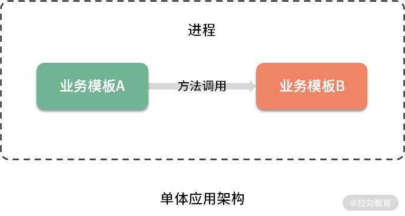</p>

<p>通过在单体应用架构下，不同阶段的服务端相关工作，可以感知到<strong>单体应用的特性。</strong></p>

<h4>1. 日常研发测试阶段</h4>

<ul>

<li>编译：完整编译一次需要 30 到 60 分钟不等，所以一般会限制编译时间，如晚上和午休各一次；</li>

<li>分发：编译完成后，在内网远程复制分发给不同的团队，一般是研发和测试人员；</li>

<li>部署：内网部署较简单，先将服务端文件复制到服务器本地目录，关闭运行中的服务器程序，将新服务器文件覆盖至运行目录，再启动服务器程序即可。</li>

</ul>

<h4>2. 对外发布阶段</h4>

<p>服务器在线上进行发布时的操作与内网类似，但每一步会比内网更加严格。受制于公网速度和线上运行的服务器个数，更新服务器需要几个小时，且更新期间服务不可用，因此每次发布计划需要花费研发和测试团队的大量时间。为了确保应用程序不会由于新发布的功能而中断服务，研发团队和运营团队会达成共识，极大减少更新的频次，比如两周左右停服更新一次，除非有特别严重的 Bug 需要修复。</p>

<h4>3. 线上运维阶段</h4>

<p>因为所有的功能集中在少数的几个服务端文件中，一个 Bug 可能导致某个服务端文件产生崩溃，进而影响服务的使用。在线上运维过程中如果出现性能瓶颈，也不能单独对热点模块进行扩容，只好针对该热点模块所在的服务端文件进行整体的扩容。</p>

<h4>4. 其他阶段</h4>

<p>服务端的技术栈是在立项时的技术调研阶段，经过慎重评估后选定的。它是一种平衡的技术栈，可以很好地满足所有需求，因此每个团队成员都必须使用相同的开发语言、持久化存储及消息系统。</p>

<p>另外，随着时间的推移、需求的变更和技术人员的更替，服务应用中会形成许多技术债务。因为我完整经历了那个项目，期间经历了多次大规模的“重构”，每次重构对整个项目的人员来说都是“灾难”，但又不得不进行。由于只有几个单独的可执行文件，所以项目文件包含了太多模块，这也使得整个项目非常复杂，每次修改代码就需要非常小心，因为太容易引入新的 Bug 了。</p>

<p>现在应用程序日益复杂化，项目对于迭代速度的要求也越来越高，上述的不足会暴露得更加明显，在这种时代背景下，微服务架构开始在企业生根发芽。</p>

<h3>微服务架构下的服务特性</h3>

<p>后来我转到了互联网公司工作，所在项目的服务架构与过去经历过的单体应用架构下的服务差异巨大。同等规模的研发团队，服务的个数竟然有近百个，虽然数量众多，但<strong>每个服务都只负责一小块儿具体的业务功能，能独立地部署到环境中，服务间边界相对清晰，相互间通过轻量级的接口调用或消息队列进行通信，为用户提供最终价值。这样的服务称为微服务（Microservice）。</strong> 从本质上来说，微服务是一种架构模式，是面向服务型架构（SOA）的一种变体，如下图所示。</p>

<p></p>

<p>上图所示，微服务架构下，业务逻辑层被分拆成不同的微服务，其中不需要与数据库交互的服务将不再与数据库连接，需要与数据库交互的服务则直接与数据库连接。</p>

<p>微服务架构下，因为两个服务分别在自己的进程中，所以它们不能通过方法调用进行通信，而是通过远程调用的方式进行通信，如下图所示。</p>

<p></p>

<p>同样，通过在微服务架构下，不同阶段的服务端相关工作，可以感知到微服务的特性。</p>

<h4>1. 日常研发测试阶段</h4>

<p>因为微服务数量众多，研发和测试团队都有诉求构建一个良好的基础建设。如搭建持续交付工具，通过持续交付工具拉取某微服务代码，再进行编译、分发、部署到测试环境的机器上。再加上，微服务应用程序本身并不大，部署耗时短、影响范围小、风险低，整个编译分发部署的过程在几分钟之内就可以搞定，且几乎是自动完成，因此部署频率可以做到很高。</p>

<h4>2. 对外发布阶段</h4>

<p>每次功能的变更或缺陷的修复，在接口不变的情况下，不会影响整个应用的使用。即使某个微服务应用出现缺陷，在事先做好熔断机制的情况下，不会导致整个应用的崩溃，这无疑增加了应用整体的可靠性。再加上部署效率高的特点，一个微服务每天可以发布数次，使得用户能快速感受到新特性和产品价值。</p>

<h4>3. 线上运维阶段</h4>

<p>在线上运维过程中，如果出现了性能瓶颈，只需对热点服务进行线性扩容。如果某服务的服务器资源利用率不高，可以对其进行线性缩容，这都极大提升了资源利用率。</p>

<h4>4. 其他阶段</h4>

<p>架构设计方面，微服务可以使用不同的语言，采用不同的架构，部署到不同的环境。同时可以采用适合微服务业务场景的技术，来构建合理的微服务模块。</p>

<p>由此可见，微服务的确解决了单体应用架构下服务的诸多短板。单体应用与微服务对比总结如下。</p>

<p></p>

<h4>微服务的缺点</h4>

<p>当然，<strong>事物都有两面性，任何一项技术都不可能十全十美，在解决一定问题的同时，也会引入新的问题。</strong> 那么，微服务架构下服务有哪些缺点呢？</p>

<p>从微服务架构设计角度来看。</p>

<ul>

<li>分布式特性：微服务系统通常也是分布式系统，那么在系统容错、网络延迟、分布式事务等方面容易产生各类问题，这也需要投入较多的人力物力去应对。</li>

<li>技术栈多样性：不同的组件选择不同的技术栈，会导致应用程序设计和体系结构不一致的问题，一定程度上也会产生额外的维护成本。</li>

<li>Dev-Ops：微服务架构下需要有一个成熟的 DevOps 团队来处理维护基于微服务的应用程序所涉及的复杂性，同时还需要配备相应的工具。</li>

<li>网络的可靠性：独立运行的微服务使用网络进行交互，这需要可靠且快速的网络连接，同时还需要避免服务间的网络通信存在安全漏洞。</li>

</ul>

<p>从微服务数量规模角度来看。</p>

<ul>

<li>线上运维方面：更多的服务意味着要投入更多的运维人力和物力，如服务器硬件资源、运行时容器、数据存储和带宽成本、人力维护成本、线上监控成本等。</li>

<li>团队协作成本：微服务之间主要通过接口进行通信，当修改某一个微服务的接口时，所有用到这个接口的微服务都需要进行调整，当核心接口调整时，工作量更为显著。</li>

<li>团队沟通成本：为了确保一个团队的服务发生更新时，不会破坏另一个团队的功能，就需要相关团队进行大量的沟通、确认工作。</li>

</ul>

<h3>总结</h3>

<p>说了这么多，我想使用两个类比，帮助你简单理解微服务架构和单体应用架构的差异：微服务架构更像是活字印刷，单体应用更像是刻版印刷。</p>

<p>本课时通过我两份工作中的实际项目情况，带你领略了单体应用项目和微服务项目的工作日程，以及微服务架构下服务的优缺点。那么针对微服务的诸多特点，会给软件质量保障工作带来怎样的挑战，我将在下一课时中详细介绍。</p>

<p>你是否接触过微服务架构的项目和服务？如果有，欢迎在留言区评论，说说它们有哪些特点，以及这样的特点对你的测试工作带来了哪些困扰和影响？ 同时欢迎你把这篇文章分享给你的同学、朋友和同事，大家共同探讨。</p>

<h3>参考资料</h3>

<blockquote>

<p>单体应用架构：<a href="https://microservices.io/patterns/cn/monolithic.html">https://microservices.io/patterns/cn/monolithic.html</a>

面向服务型架构（SOA）：<a href="https://zh.wikipedia.org/wiki/面向服务的体系结构">https://zh.wikipedia.org/wiki/%E9%9D%A2%E5%90%91%E6%9C%8D%E5%8A%A1%E7%9A%84%E4%BD%93%E7%B3%BB%E7%BB%93%E6%9E%84</a>

微服务架构：<a href="https://microservices.io/patterns/cn/microservices.html">https://microservices.io/patterns/cn/microservices.html</a></p>

</blockquote>

</div>

                    </div><div class="book-post">

                        <p id="tip" align="center"></p>

                        <div><h1>02  微服务架构下的质量挑战</h1>

<p>相比传统的单体应用架构，微服务架构具有更多优势，但微服务同样不是万能的。它的许多优点同时也带来了明显的缺点，比如单个微服务虽然编译得更快了，但微服务数量却翻了数倍。再比如单个微服务可以针对热点服务进行单独扩缩容，但也就需要投入更多的运维成本，等等。这也使得微服务架构在架构设计、团队协作、测试环节等层面引发一系列挑战。</p>

<p>我们知道，“<strong>越晚发现的问题，修复的成本也就越高</strong>”，如果在项目开始对这些挑战处理不当，项目后期也将很难弥补，即使弥补了也容易采取临时方案，而这些最终都会体现在软件产品或服务的质量上。</p>

<p>那么，对于微服务架构所带来的挑战，我总结为以下三个方面：</p>

<ul>

<li>架构设计复杂度高；</li>

<li>团队协作难度大；</li>

<li>测试成本高。</li>

</ul>

<h3>架构设计复杂度高</h3>

<p>微服务的重点是将架构分解为粒度更细、更易管理的服务，但这意味着要引入更多的服务间依赖关系。微服务实践最常见的错误之一是把微服务设计得过小，以至于微服务数量泛滥，而这通常会<strong>导致任何服务都可以随意调用任何其他服务的情况</strong>。如果没有好的设计，那么系统的复杂度就会与微服务的数量成正比（极限情况下，N 个服务，会存在 N(N-1)/2 个调用关系）。</p>

<p>微服务架构的关键不仅在于具体的实现，更在于合理地划分服务边界，与组织架构是否相匹配，以及相应配套的技术设施，如持续交付、DevOps、去中心化实践等。</p>

<p>因此，只有通过谨慎的服务架构设计才可以降低系统复杂度。 你不能只像以前做单体应用服务测试时那样只关注系统整体实现了什么，还需要关注系统架构设计、模块、服务划分、每个服务实现的功能、上下游调用关系和调用方式等。</p>

<h3>团队协作难度大</h3>

<p>系统依赖性的增加会给团队协作带来更大挑战，这里我所说的协作工作包括但不限于开发、联调、测试等。</p>

<h4>1. 复杂的团队沟通</h4>

<p>在传统的单体应用开发项目中，当一个团队（即使规模很大）共同协作开发应用程序的不同部分时，可以有一个共同的项目管理计划，包含范围、时间、人物力资源、质量、风险等，并且当出现潜在的技术冲突时会有架构师这样的角色来规避和解决。</p>

<p>而在微服务应用中，不同微服务常由不同团队开发和维护，而每个微服务可能会有不同的客户要求、开发周期、开发进度和交付期限，并且没有或只有较弱的总体项目管理。当服务频繁进行改动或版本升级时，很容易出现跨微服务功能不可用、版本不兼容或延迟实现等问题。协调软件的整体开发会变得异常困难，你也很难找出一个空闲时间窗口来对整个软件进行全面的测试。</p>

<p>因此，产品及研发人员需要各种沟通，以此来了解不同团队中微服务项目的开发进度，沟通成本大不说，而且容易有错漏。在其中，因为测试人员是产品交付的最后一道关，任何在前期遗留下来的争议或错误，都会在测试环节放大或暴露出来，进而间接影响项目研发效率和质量。比如到了测试环节才发现依赖的服务不能按时提测，你只好用 mock 的方式模拟该服务。这种情况会导致你测试效率降低，且发现不了真正的问题。</p>

<p>在这里，建议要基于微服务的特性建立相应的流程规范，比如把可能产生的风险前置暴露出来并做提前应对、重视多方评审环节、根据问题驱动流程规范不断优化和完善，等等。这些内容也将在课程的后续部分详细解说。</p>

<h4>2. 验证成本高</h4>

<p>单体架构下，通常使用集成测试来验证模块间的依赖是否正常，而服务数量并不多，搭建一套测试环境的成本不高。但在微服务架构中，无论是服务、模块还是层次之间都存在复杂的依赖性，想要单独测试某一服务，需要其他服务的依赖关系。你要验证的不仅仅是某个服务本身，而是某个业务场景所涉及的服务链路，且它们又同时依赖着其他服务，归根结底你需要的是整个业务链路上的所有服务。</p>

<p>在同等规模的团队，微服务的数量可能是单体应用服务数量的几倍甚至是数十倍，为每个服务搭建基础环境（运行环境、数据库、缓存等）并进行部署、配置的成本也对应增加。</p>

<p>这就造成：</p>

<ul>

<li>团队需要等待其他团队，以便完成相关微服务的并行开发；</li>

<li>团队需要等待测试环境进行完整的搭建和配置后，方可实现整体联调、测试和验收。</li>

</ul>

<h4>3. 反馈周期长</h4>

<p>微服务架构下，可独立部署的服务多，集成测试的反馈周期依赖较多服务，这将导致定位问题的时间变长。同时，由于微服务由各自团队独立部署，测试环境的不稳定也更容易导致测试执行失败。为了编写有效的集成测试用例，质量保证工程师应该对软件所提供的各种服务都有全面的了解。</p>

<p>微服务架构中，每个服务进行独立地配置、部署、监控、收集日志，对于调用链路较长的场景，排查问题时需要进行链路调用分析，逐步排查，其成本呈指数级增长。</p>

<h3>测试成本高</h3>

<p>除了上述挑战外，微服务架构的复杂性使测试工作本身变得更加困难。测试挑战包括测试环境、测试技术与工具、测试方法以及测试结果。</p>

<h4>1. 测试环境</h4>

<p>通常来说，一个业务有多个微服务，每个团队的测试工程师仅对其负责的微服务负责，没有统一的角色来管理整体的测试环境。这种情况下可能出现一个微服务不可用时，依赖它的服务均无法正常提供能力，进而会导致其他 QA 人员的测试任务阻塞。基于此，常见的做法可能是分时段使用环境或者维护多套测试环境。但如果所有 QA 团队对测试环境分时段使用，相当于轮流进行测试，那么整体的测试效率会低很多。如果各自维护一套完整的测试环境，那么诸如“谁来修复”，“谁来协调”和“谁来维护”等问题可能无法得到解答，且会带来较多的服务器成本和沟通成本 。</p>

<h4>2. 测试技术和工具</h4>

<p>微服务架构允许为每种服务使用不同的技术基础，这可能导致需要使用不同工具来实现相同的功能，如使用不同的编程语言、数据存储与同步、部署环境等。技术的多样性会导致 QA 人力资源难以培养或增加人力成本，同时很难构建和维护一个涵盖所有内容的良好测试环境。</p>

<h4>3. 测试方法</h4>

<p>直接用单体应用架构下的测试方法来测试微服务并不可行。单体应用架构下，测试方法往往需要理解用户需求的背景，用端到端测试的方式对业务功能进行整体验证。</p>

<p>而在微服务架构下，虽然端到端测试可以在软件开发生命周期的后期起到作用，但因为测试对象发生了非常多的变化，需要对测试对象进行重新分析，那么就需要对测试策略进行整体变更，也就是说，原有的测试方法不再完全适用。</p>

<h4>4. 测试结果</h4>

<p>微服务通常是分布式系统，这意味着服务之间通过网络调用进行通信，那么数据在网络上传输时不可避免地会出现网络延时、超时、带宽不足等因素，这将导致不稳定的测试结果。主要表现在如下方面。</p>

<ul>

<li>可靠性：为了尽可能降低微服务间通信对网络情况的高度依赖，降低因网络不稳定引起的故障率，设计微服务架构时会设计隔离机制，这虽然可以缩小故障点的影响范围，但因为做了架构层面的设计，所以需要针对其进行测试，这无疑增加了测试难度。</li>

<li>数据一致性：分布式系统的数据需要具有一致性，但做到这一点需要付出的成本是非常高的，特别是涉及数据存储和外部通信的部分，测试过程中也常常会出现因为数据不一致而导致的缺陷误报、无效 Bug 等情况。</li>

<li>关联性：微服务通常情况下会与多个微服务进行交互。因此当某服务发生变化时，会直接影响到依赖的其他服务，进而影响用户体验、非功能性要求，如性能、可访问性、可靠性等。</li>

</ul>

<h3>总结</h3>

<p>上述，我介绍了这么多微服务架构对软件质量保障工作带来的诸多挑战，你肯定坐不住了吧？不要担心，这些挑战都有对策。<strong>任何新技术的引入和架构的演变都在解决当前痛点问题的同时引入新的问题，那么这些新的问题也将不断变成痛点被逐个解决，这是技术演化的必然，也是互联网革命的核心（唯一的不变是变化）</strong>。</p>

<p>任何时候挑战和机遇都是并存的，通过掌握恰当的测试策略和质量保障体系来应对这些挑战，那么你就比同行（横向比较）或过去的自己（纵向比较）具有更多的竞争力和优势，自然也会有更多的机遇。</p>

<p>与单体应用架构相比，微服务架构的诸多好处，使得它成为主流是必然的。与此带来的挑战，我们应该如何思考和分析，找到恰当的测试策略，构建全面的质量保障体系呢，我将在下一课时介绍。</p>

</div>

                    </div><div class="book-post">

                        <p id="tip" align="center"></p>

                        <div><h1>03  微服务架构下的测试策略</h1>

<p>上一课时，我重点分析了微服务架构下的各种质量挑战。基于这些挑战，我们该如何有效且高效地保障微服务的质量呢？</p>

<p>可以从两个方面来保障微服务的质量：</p>

<ol>

<li>选取合适的测试策略模型，确保测试活动全面且有效；</li>

<li>建立质量保障体系，使质量保障内化为企业的组织能力。</li>

</ol>

<h3>如何选择合适的测试策略模型？</h3>

<p>要想使面向微服务的测试活动全面且有效，可以借用“测试金字塔”的思想，针对不同类型和颗粒度的测试投入不同的精力，达到一个最佳平衡：</p>

<ul>

<li>测试需要分层，每一层的测试颗粒度有所不同；</li>

<li>不同层次的测试比重有差异，通常来说，层次越高，测试比重应越少。</li>

</ul>

<p></p>

<p>需要说明的是，传统意义下的测试金字塔，在微服务架构下不再完全奏效。因为微服务中最大的复杂性不在于服务本身，而在于微服务之间的交互方式，这一点值得特别注意。</p>

<p>因此，<strong>针对微服务架构，常见的测试策略模型</strong>有如下几种。</p>

<p>（1） <strong>微服务“测试金字塔”</strong></p>

<p>基于微服务架构的特点和测试金字塔的原理，Toby Clemson 有一篇关于<a href="https://www.martinfowler.com/articles/microservice-testing/">“微服务架构下的测试策略”</a>的文章，其中通过分析阐述了微服务架构下的通用测试策略。</p>

<p></p>

<p>如图，该策略模型依然是金字塔形状，从下到上依次为单元测试、集成测试、组件测试、端到端测试、探索式测试。</p>

<p>（2） <strong>微服务“测试蜂巢”</strong></p>

<p>这种策略模型是蜂巢形状，它强调重点关注服务间的集成测试，而单元测试和端到端测试的占比较少。</p>

<p></p>

<p>（3） <strong>微服务“测试钻石”</strong></p>

<p>这种策略模型是钻石形状的，组件测试和契约测试是重点，单元测试比率减少，另外增加了安全和性能等非功能的测试类型。</p>

<p></p>

<p>我想，有多少个基于微服务架构的测试团队大概就有多少个测试策略模型吧。<strong>“测试金字塔”是一种测试策略模型和抽象框架</strong>，当技术架构、系统特点、质量痛点、团队阶段不同时，每种测试的比例也不尽相同，而且最关键的，并不一定必须是金字塔结构。</p>

<p>理解了测试策略模型的思考框架，我们看下应如何保障测试活动的全面性和有效性。</p>

<h4>全面性</h4>

<p>微服务架构下，既需要保障各服务内部每个模块的完整性，又需要关注模块间、服务间的交互。只有这样才能提升测试覆盖率和全面性，因此，可以通过如下的分层测试来保证微服务的全面性。</p>

<p></p>

<ul>

<li>单元测试（Unit Test） ：从服务中最小可测试单元视角验证代码行为符合预期，以便测试出方法、类级别的缺陷。</li>

<li>集成测试（Integration Test）：验证当前服务与外部模块之间的通信方式或者交互符合预期，以便测试出接口缺陷。</li>

<li>组件测试 （Component Test）：将测试范围限制在被测系统的一部分（一般是单个服务），使用测试替身（test doubles）将其与其他组件隔离，以便测试出被测代码的缺陷。</li>

<li>契约测试（Contracts Test）：验证当前服务与外部服务之间的交互，以表明它符合消费者服务所期望的契约。</li>

<li>端到端测试（End-to-end Test）：从用户视角验证整个系统的功能能否符合用户的预期。</li>

</ul>

<p>可见，上述测试策略模型中的测试方法，是自下而上逐层扩大测试范围和边界，力保微服务架构的模块内、模块间交互、服务内、服务间交互、系统范围等维度的功能符合预期。</p>

<h4>有效性</h4>

<p>确定了分层测试方法，我们应该如何选取每种测试方法的比例，来确保该测试策略的有效性呢？</p>

<p>首先必须要明确的是不存在普适性的测试组合比例。我们都知道，测试的目的是解决企业的质量痛点、交付高质量的软件。因此不能为了测试而测试，更不能为了质量而不惜一切代价，需要<strong>考虑资源的投入产出比。</strong></p>

<p>测试策略如同测试技术、技术架构一样，并不是一成不变，它会随着业务或项目所处的阶段，以及基于此的其他影响因素的变化而不断演进。但归根结底，还是要从质量保障的目标出发，制定出适合当时的测试策略，并阶段性地对策略进行评估和度量，进而不断改进和优化测试策略。因此，<strong>选取测试策略一定要基于现实情况的痛点出发，结果导向，通过调整测试策略来解决痛点。</strong></p>

<p>比如，在项目早期阶段或某 MVP 项目中，业务的诉求是尽快发布到线上，对功能的质量要求不太高，但对发布的时间节点要求非常严格。那这种情况下快速地用端到端这种能模拟用户真实价值的测试方法保障项目质量也未尝不可；随着项目逐渐趋于平稳后，时间要求渐渐有了节奏，对功能的质量要求会逐渐变高，那么这时候可以再根据实际情况引入其他测试方法，如契约测试或组件测试等。</p>

<p>你要永远记住，<strong>适合自身项目阶段和团队的测试策略才是“完美”的策略。</strong></p>

<p></p>

<h3>如何建立质量保障体系？</h3>

<p>上述分层的测试策略只是尽可能地对微服务进行全面的测试，确保系统的所有层次都被覆盖到，它更多体现在测试活动本身的全面性和有效性方面。要想将质量保障内化为企业的组织能力，就需要通过技术和管理手段形成系统化、标准化和规范化的机制，这就需要建设质量保障体系。</p>

<p><strong>质量保障体系：通过一定的流程规范、测试技术和方法，借助于持续集成/持续交付等技术把质量保障活动有效组合，进而形成系统化、标准化和规范化的保障体系。</strong> 同时，还需要相应的度量、运营手段以及组织能力的保障。</p>

<p>如下几个方面是质量保障体系的关键，后续课程也将按如下方式展开讲解。</p>

<ul>

<li><strong>流程规范</strong>：没有规矩不成方圆，好的流程规范是保障质量中非常关键的一环。当出现交付质量差的情况时，过程质量也一定是差的。通常会出现某些关键动作未执行或执行不到位、对事情的不当处理等情况，而这些情况可以通过建立闭环、分工明确的流程规范完全可以避免。另外，研发过程中，过程质量跟执行人的质量意识、个人能力等直接相关，那么就需要建立易执行的流程规范，降低人员的执行门槛。同时需要特别注意，规范的不断完善是几乎所有团队的常态，但当规范执行效果不好时一定要及时跟进，分析其根本原因，必要时要进行简化。</li>

<li><strong>测试技术</strong>： 测试策略模型中的分层测试方法可以使面向微服务的测试活动具有一定的全面性和有效性，使得被测内容在功能方面符合预期。除功能性之外，软件质量还有其他很多属性，如可靠性、易用性、可维护性、可移植性等，而这些质量属性就需要通过各种专项测试技术来保障了。同时，还有许多测试技术的首要价值在于提升测试效率。因此合理地组合这些测试技术，形成测试技术矩阵，有利于最大化发挥它们的价值。</li>

<li><strong>持续集成与持续交付</strong>：微服务的优势需要通过持续集成和持续交付的支持才能充分发挥出来，这就要求在执行测试活动时提高反馈效率、尽快发现问题。一方面要明确各种“类生产环境”在交付流程中的位置和用途差异点，保证它们的稳定可用。另一方面需要将各种测试技术和自动化技术集成起来，使代码提交后能够自动进行构建、部署和测试等操作，形成工具链，实现真正意义上的持续集成和持续交付。</li>

<li><strong>度量与运营</strong>：管理学大师德鲁克曾经说过“你如果无法度量它，就无法管理它（It you can’t measure it, you can’t manage it)”。要想能有效管理和改进，就难以绕开度量这个话题。对于研发过程来说，度量无疑是比较难的，它是一个脑力密集型的过程，指标多维度，且很多维度的内容难以清晰地度量。在质量保障体系中，我将基于质量、效率、价值等多维度视角建立起基础的度量体系，并结合定期运营做定向改进，形成 PDCA 正向循环，促使各项指标稳步提升。同时，需要特别警惕的是，<strong>度量是一把双刃剑</strong>，这里我也会告诉一些我的经验教训和踩过的坑，避免走错方向。</li>

<li><strong>组织保障</strong>：产品的交付离不开组织中每个参与部门成员的努力。正如质量大师戴明所说，质量是设计出来的，不是测试出来的。因此在组织中树立起“质量文化”至关重要。在这部分内容里，我将介绍常见的参与方的角色、职责和协作过程中的常见问题、对策，以及如何营造质量文化等内容。</li>

</ul>

<h3>总结</h3>

<p>在本课中，我谈到了基于微服务架构下的各种质量挑战，可以从两个方面有效且高效地保障微服务的质量：<strong>确保面向微服务的测试活动具备全面性和有效性</strong>，<strong>质量保障需要内化为企业的组织能力。</strong></p>

<p>通过对测试金字塔原理和微服务的特点分析，引入单元测试、集成测试、组件测试、契约测试和端到端测试等分层测试类型来确保测试活动的全面性，通过自身项目阶段和团队情况来选取合适的测试策略模型，以保障测试活动的有效性。</p>

<p>要想把质量保障内化为企业的组织能力，就需要通过系统的技术和管理手段形成机制，在流程规范、测试技术、持续集成与持续交付、度量与运营、组织保障等方面构建质量保障体系。</p>

<p>你是否测试过微服务架构的项目和服务？如果有，欢迎在留言区评论，说说你所经历过的项目的测试策略和质量保障体系是怎样的，期间遇到了哪些困难和问题。同时欢迎你能把这篇文章分享给你的同学、朋友和同事，大家一起交流。</p>

<p><strong>相关链接</strong></p>

<blockquote>

<p>Testing Strategies in a Microservice Architecture（微服务架构下的测试策略）：

：<a href="https://www.martinfowler.com/articles/microservice-testing/">https://www.martinfowler.com/articles/microservice-testing/</a></p>

</blockquote>

</div>

                    </div><div class="book-post">

                        <p id="tip" align="center"></p>

                        <div><h1>04  单元测试：怎样提升最小可测试单元的质量？</h1>

<p>上一篇文章，我讲到了微服务架构下的测试策略和质量保障体系，今天我来讲讲测试策略中的最底层测试——单元测试。</p>

<h3>单元测试的价值</h3>

<p>单元测试是一种白盒测试技术，通常由开发人员在编码阶段完成，目的是验证软件代码中的每个单元（方法或类等）是否符合预期，即<strong>尽早</strong>在<strong>尽量小的范围内</strong>暴露问题。</p>

<p>我们都知道，问题发现得越早，修复的代价越小。毫无疑问，在开发阶段进行正确的单元测试可以极大地节省时间和金钱。如果跳过单元测试，会导致在后续更高级别的测试阶段产生更高的缺陷修复成本。</p>

<p></p>

<p>如图，假如有一个只包含两个单元 A 和 B 的程序，且只执行端到端测试，如果在测试过程中发现了缺陷，则可能有如下多种原因：</p>

<ul>

<li>该缺陷由单元 A 中的缺陷引起；</li>

<li>该缺陷由单元 B 中的缺陷引起；</li>

<li>该缺陷由单元 A 和单元 B 中的缺陷共同引起；</li>

<li>该缺陷由单元 A 和单元 B 之间接口的缺陷引起；</li>

<li>该缺陷是测试方法或测试用例的错误导致的。</li>

</ul>

<p>由此可见，忽略单元测试会导致后续发现缺陷时，要花费较高的成本来确认缺陷原因。</p>

<p>单元测试除了能够在较早阶段识别软件中的错误，它还有如下价值。</p>

<ul>

<li>反馈速度快：单元测试通常以自动化形式运行，执行速度非常快，可以快速反馈结果，跟持续集成结合起来，形成有效的反馈环。</li>

<li>重构的有力保障：系统需要大规模重构时，单测可以确保对已有逻辑的兼容，如果单元测试都通过，基本上可以保证重构没有破坏原来代码逻辑的正确性。</li>

<li>使更熟悉代码：写单元测试的过程本身就是一个审视代码的过程，可以发现一些设计上的问题（代码设计的不可测试）、代码编写方面的问题（边界条件的处理不当）等。</li>

</ul>

<p>既然单元测试由开发人员来设计和执行，那作为测试人员是不是就不需要学习这门技术了？不知道你是怎样看待这个想法的，我的观点是：</p>

<ul>

<li>单元测试只是通常情况下由开发人员完成，并不是绝对的，在一些公司或项目里也存在测试人员完成的情况；</li>

<li>在你负责的模块或服务里，第一级别的测试不是你来完成的，那么你更有必要去了解它的设计思路和执行情况，这能帮助你发现单元测试可能存在的问题点，也有利于你设计和执行后续高级别的测试类型；</li>

<li>开发人员总是不太擅长做测试类的工作，当你掌握了单元测试的技能，你便更有机会去帮助和影响到开发人员，赢得他对你的尊重，也有利于你们更好地合作；</li>

<li>这种想法是测试人员的常见想法，所以掌握单元测试技能在测试人员群体中也会是稀缺技能，因此，掌握它将会获得额外的锻炼机会和个人影响力，要知道，机会总是留给有准备的人。</li>

</ul>

<h3>微服务下的单元测试类型</h3>

<p>就像之前课程所说：<strong>微服务中最大的复杂性不在于服务本身，而在于微服务之间的交互方式，服务与服务之间常常互相调用以实现更多更复杂的功能。</strong></p>

<p>举个例子，我们需要测试的是订单类（Order）中的获取总价方法（getTotalPrice()），而在该方法中除了自有的一些代码逻辑外，通常需要去调用其他类的方法。比如这里调用的是用户类（User）的优惠等级方法（reductionLevel ()）和商品类（Goods）中的商品价格方法（getUnitPrice()）。很显然，优惠等级方法或商品价格方法，只要一方有错误，就会导致订单类获取总价方法的测试失败。基于这种情况，可以有两种单元测试类型。</p>

<h4>1. 社交型单元测试（Sociable Unit Testing）</h4>

<p>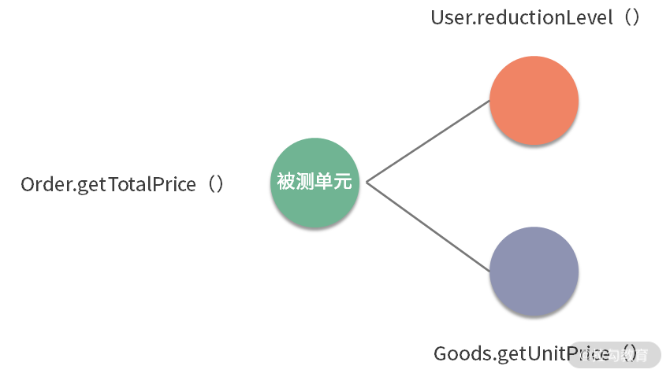</p>

<p>如图，测试订单类的获取总价方法（Order.getTotalPrice()）时会真实调用用户类的优惠等级方法（User.reductionLevel()）和商品类的商品单价方法（Goods.getUnitPrice()）。将被测试单元视为黑盒子，直接对其进行测试，这种单元测试称之为<strong>社交型单元测试（Sociable Unit Testing）</strong>。</p>

<h4>2. 孤立型单元测试（Solitary Unit Testing）</h4>

<p>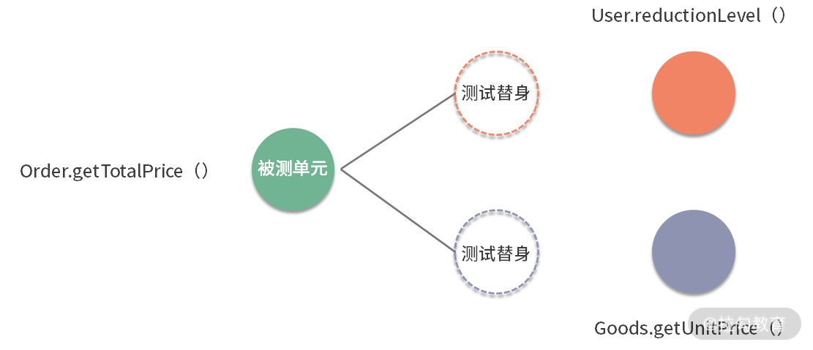</p>

<p>如图，如果测试订单类的获取总价方法（Order.getTotalPrice()）时，使用测试替身 <strong>（test doubles）</strong> 技术来替代用户类的优惠等级方法（User.reductionLevel()）和商品类的商品单价方法（Goods.getUnitPrice()）的效果。对象及其依赖项之间的交互和协作被<strong>测试替身</strong>代替，这种单元测试称之为<strong>孤立型单元测试（Solitary Unit Testing）</strong>。</p>

<p>另外，上述提到的测试替身是一种在测试中使用对象代替实际对象的技术，常用的技术如下。</p>

<ul>

<li><strong>桩代码（Stubs）</strong>：当在对象上调用特定方法时，会对其进行硬编码（临时代码）的方式来代替真实代码提供固定响应。比如，某函数 X 的实现中调用了一个函数 Y，而 Y 不能调用，为了对函数 X 进行测试，就需要模拟一个函数 Y，那么函数 Y 的实现就是所谓的桩代码。</li>

<li><strong>模拟代码（Mocks）</strong>：模拟代码跟桩代码类似，它除了代替真实代码的能力之外，更强调是否使用了特定的参数调用了特定方法，因此，这种对象成为我们测试结果的基础。</li>

</ul>

<p>根据被测单元是否与其交互者隔离，会产生以上两种单元测试类型，这两种类型的单元测试在微服务测试中都起着重要作用，它们用来解决不同的测试问题。</p>

<p>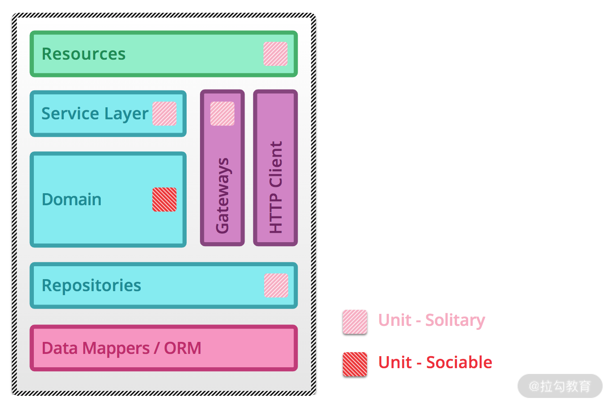</p>

<p><strong>由上图可知，在微服务架构中，不同组成使用的单元测试类型不同：</strong></p>

<p></p>

<p>特别注意：当微服务的（网关+仓库+资源+服务层）与（域逻辑）之比相对较大时，单元测试可能收益不大。常见的情况有小型服务或某些几乎只包含了网关+仓库+资源+服务层等内容的服务，例如适配服务等。</p>

<h3>如何开展单元测试？</h3>

<p>在实际项目过程当中，应该怎样开展单元测试呢？通常来说，可以通过如下四个步骤来进行。</p>

<h4>1. 确定使用单元测试的代码范围</h4>

<p>虽然单元测试很重要，但并不是所有代码都需要进行单元测试，可以重点关注核心模块代码或底层代码，如重要的业务逻辑代码或通用组件类等。</p>

<h4>2. 确定技术选型（以 Java 语言为例）</h4>

<p>单元测试中的技术框架通常包括单元测试框架、Mock 代码框架、断言等。</p>

<ul>

<li>单元测试框架：和开发语言直接相关，最常用的单元测试框架是 Junit 和 TestNG，总体来说，Junit 比较轻量级，它天生是做单测的，而 TestNG 则提供了更丰富的测试功能，测试人员对它并不陌生，这里不多做介绍。</li>

<li>Mock 代码框架：常见的有 EasyMock、Mockito、Jmockit、Powermock 等。</li>

<li>断言：Junit 和 TestNG 自身都支持断言，除此还有专门用于断言的 Hamcrest 和 assertJ。</li>

</ul>

<p>关于它们的优劣网络上已有非常多的文章，这里不再赘述。综合来看，个人比较推荐使用Junit+Mockito+assertJ，我建议你根据自己的需求选型。</p>

<h4>3. 引入衡量单测覆盖情况的代码覆盖率工具</h4>

<p>只单纯地看单元测试的执行通过率还比较单一，为了更全面地看到测试的覆盖情况，可以借助代码覆盖率工具和技术。在 Java 语言里，常用覆盖率工具有 Jacoco、Emma 和 Cobertura，个人推荐使用 Jacoco。</p>

<h4>4. 接入持续集成工具</h4>

<p>接入持续集成工具是为了形成工具链，将单元测试、代码覆盖率统计集成在一起，使得代码有提交时便自动触发单元测试用例的执行，并伴随有代码覆盖率的统计，最后可以看到单元测试报告的数据（用例通过情况和代码层面各个维度的覆盖数据）。接着可以判断是否需要修改代码，这便形成了一个代码质量的反馈环，如下图所示。</p>

<p>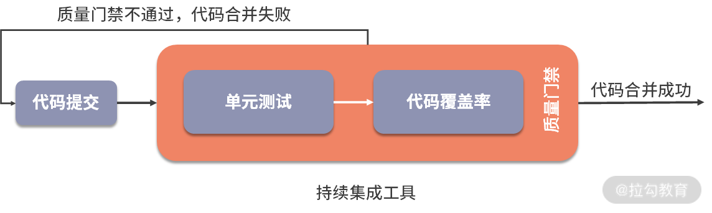</p>

<p>后续的文章还会讲解到代码覆盖率工具和持续集成工具。</p>

<h3>单元测试最佳实践</h3>

<p>了解了如何开展单元测试，那么如何做到最好呢？我们都知道，代码产生错误无非是对一个业务逻辑或代码逻辑没有实现、实现不充分、实现错误或过分实现，所以无论是拆解业务逻辑还是拆解逻辑控制时都要做到 <strong>MECE 原则</strong>（全称 Mutually Exclusive Collectively Exhaustive，中文意思是“相互独立，完全穷尽”，即日常沟通中常说的“不重不漏”）。</p>

<p>“不重不漏”说起来容易做起来难，为了努力做到它，写出好的单元测试，可以遵循如下具体的实践规范。</p>

<ol>

<li><strong>好的单元测试要符合 AIR 特点</strong>：Automatic（自动化）、Independent（独立性）、Repeatable（可重复）。为了凑够一个单词 AIR 的效果，所以有了如上顺序，但我觉得从实际的落地顺序上看，应该是 A-&gt;R-&gt;I。优先保障单元测试能够自动化执行，释放手工介入，再使单元测试可以重复执行，这样可以使得简单的用例先高效地执行起来，再逐渐追求用例的相互独立性。</li>

<li><strong>常见的规范或标准做法有（以 Java 为例）</strong></li>

</ol>

<ul>

<li><strong>代码目录规范</strong>：单元测试代码必须放在“src/test/java”目录下，Maven 采用“约定优于配置”的原则，并对工程的目录布局做了约定——测试代码存放 src/test/java 目录，单元测试相关的配置资源文件存放 src/test/resources 目录。源码构建时会跳过此目录，而单元测试框架默认是扫描此目录。</li>

<li><strong>测试类命名规范</strong>：同一个工程里测试类只用一种命名风格，推荐采用[类名]Test.java 或 Test[类名].java 的风格，比如源类名为 AccountServiceImpl.java，那么测试类名为 AccountServiceImplTest.java 或者 TestAccountServiceImpl.java。</li>

<li><strong>测试方法命名规范</strong>：同一个工程里测试方法只用一种命名风格，推荐采用 test[源方法名]_[后缀]的风格。比如源方法名为 login()，则测试方法可以命名为 testLogin_XxxSuccess()、testLogin_XxxNotExist()、testLogin_XxxFail()。</li>

<li><strong>测试数据要求</strong>：尽量使用生产环境的测试数据以保障有效性和多样性。</li>

<li><strong>颗粒度要求</strong>：要保证测试粒度足够小，有助于精确定位问题。单测粒度一般是方法级别，最好不要超过类级别。只有测试粒度小才能在出错时尽快定位到出错位置，一个待测试方法建议关联一个测试方法，如果待测试方法逻辑复杂分支较多，建议拆分为多个测试方法。</li>

<li><strong>验证结果必须要符合预期</strong>：简单来说就是单元测试必须执行通过，执行失败时要及时查明原因并修正问题。</li>

<li><strong>代码要遵守 BCDE 原则</strong>，以保证被测试模块的交付质量。

<ul>

<li>B：Border，边界值测试，包括循环边界、特殊取值、特殊时间点、数据顺序等。</li>

<li>C：Correct，正确的输入，并得到预期的结果。</li>

<li>D：Design，与设计文档相结合，来编写单元测试。</li>

<li>E：Error，强制错误信息输入（如：非法数据、异常流程、非业务允许输入等），并得到预期的结果。</li>

</ul>

</li>

<li><strong>实践风格</strong>：需加注释、遵守命名规范、公共方法抽象等保证可读性。编写测试代码时，有两种实践风格（至少要有相应的注释来区分）。

<ul>

<li>准备-执行-断言（Arrange-Act-Assert）：先准备用于测试的对象，然后触发执行，最后对输出和行为进行断言。</li>

<li>给定-当-那么（Given-When-Then）：给定某个上下文，当发生某些事情，那么期望某些结果。</li>

</ul>

</li>

<li><strong>执行速度要尽量快</strong>：单个 CASE 的运行时间推荐不超过 5 秒 ，这样才能在持续集成中尽快暴露问题。</li>

<li><strong>必须能自动验证</strong>：单测要能报错，不能只有调用，不准使用 System.out 等来进行人工验证，必须使用 Assert 来验证。</li>

<li><strong>必须要有逻辑验证能力和强度</strong>：不允许使用恒真断言（如：Assert. <em>assertTrue</em> (true) ; ）不允许使用弱测试断言（如测试方法返回数据，只验证其中某个单字段值就当作通过）。</li>

<li><strong>必须有很强的针对性</strong>：可以有多个 Assert 断言，但每个测试方法只测试一种情况（如一个方法涉及 3 种异常需要去覆盖测试，就写三个不同的测试方法）。</li>

<li><strong>必须独立稳定，可重复执行</strong>：单元测试通常会被放到持续集成中，如果单测对外部环境(发布环境、网络、服务、中间件等)有依赖，容易导致持续集成机制的不可用。对于测试需要的任何条件，都应该让它们成为测试自身的一个自动化组成部分。</li>

<li><strong>同一个工程里只用一种代码框架</strong>；同一个工程里在能够满足需求的情况下只用一种单测框架、只用一种 Mock 框架、只用一种内存数据库等。</li>

<li><strong>单元测试遵守基本质量卡点要求</strong>：增量及全量卡点必须有，但覆盖率具体卡点要求可以根据业务差异化、分阶段地要求，如起步推广阶段，提升覆盖率阶段，最终覆盖率目标。但一般来说，行覆盖率大于等于 60%（经验值），分支覆盖率大于等于 80%（经验值），所有单测通过率 100%。核心业务、核心应用、核心模块的增量代码确保单元测试增量覆盖率达到要求，并且全量单测 CASE 通过。</li>

</ul>

<p>上述规范和实践经验比较多，可能会因为落地难度和成本而使开发人员望而却步，事实上可以采取“小步快跑”的方式，逐次提升不同方面的要求，拉长落地的战线。</p>

<h3>总结</h3>

<p>本节课内容讲解了单元测试的定义：它是一种软件测试方法，目的是验证软件代码中的每个单元（方法或类等）是否符合预期，即<strong>尽早</strong>在<strong>尽量小的范围内</strong>暴露错误。</p>

<p>接着讲解了微服务架构下常见的交互场景，测试方式和对象的不同会出现<strong>社交型单元测试</strong>和<strong>孤立型单元测试</strong>两种单元测试类型。</p>

<p>然后讲解了实际如何开展单元测试，先确定要测试的代码范围，再引入单测框架、mock 框架、断言类型、代码覆盖率工具和持续集成工具，使代码提交过程形成一个有效的单元测试质量反馈环。紧接着我又给出了一系列的最佳实践或规范，包括类和方法的命名规范、目录规范、数据要求、验证结果要求、运行速度、质量卡点等，相信这些内容可以帮助你更好地设计和实现单元测试。</p>

<p>你所负责的项目或服务，是否运行过单元测试呢？如果有，欢迎在留言区评论，说说单元测试的落地情况是怎样的。同时欢迎你能把这篇文章分享给你的同学、朋友和同事，大家一起交流。</p>

<blockquote>

<p><strong>相关链接</strong>

<a href="https://www.martinfowler.com/articles/microservice-testing/#testing-unit-introduction">https://www.martinfowler.com/articles/microservice-testing/#testing-unit-introduction</a>

<strong>单元测试框架</strong>

TestNG官网： <a href="https://testng.org/doc/">https://testng.org/doc/</a>

TestNG教程： <a href="https://www.yiibai.com/testng/">https://www.yiibai.com/testng/</a>

Junit官网： <a href="https://junit.org/junit5/">https://junit.org/junit5/</a>

<strong>Mock代码框架</strong>

Mockito： <a href="https://site.mockito.org/">https://site.mockito.org/</a>

jMock： <a href="http://jmock.org/">http://jmock.org/</a>

Easymock： <a href="http://www.easymock.org/">http://www.easymock.org/</a>

Powermock： <a href="https://github.com/powermock/powermock">https://github.com/powermock/powermock</a>

Mock框架对比： <a href="https://stackoverflow.com/questions/22697/whats-the-best-mock-framework-for-java">https://stackoverflow.com/questions/22697/whats-the-best-mock-framework-for-java</a>

<strong>断言</strong>

Hamcrest： <a href="http://hamcrest.org/JavaHamcrest/">http://hamcrest.org/JavaHamcrest/</a>

assertJ： <a href="https://joel-costigliola.github.io/assertj/assertj-core.html">https://joel-costigliola.github.io/assertj/assertj-core.html</a>

<strong>覆盖率工具</strong>

Jacoco： <a href="https://www.jacoco.org/jacoco/trunk/index.html">https://www.jacoco.org/jacoco/trunk/index.html</a>

Emma： <a href="http://emma.sourceforge.net/">http://emma.sourceforge.net/</a>

Cobertura： <a href="https://cobertura.github.io/cobertura/">https://cobertura.github.io/cobertura/</a></p>

</blockquote>

</div>

                    </div><div class="book-post">

                        <p id="tip" align="center"></p>

                        <div><h1>05 集成测试：如何进行微服务的集成测试？</h1>

<p>上一课时，我讲解了微服务架构下的单元测试，它是一种白盒测试技术，目的是验证软件代码中的每个单元（方法或类等）是否符合预期。本节课我来讲解微服务架构下的集成测试。</p>

<h3>集成测试的概念</h3>

<p>说到集成测试，相信每个测试工程师并不陌生，它不是一个崭新的概念，通过<a href="https://en.wikipedia.org/wiki/Integration_testing">维基百科</a>定义可以知道它在传统软件测试中的含义。</p>

<blockquote>

<p>Integration testing (sometimes called integration and testing, abbreviated I&amp;T) is the phase in software testing in which individual software modules are combined and tested as a group. Integration testing is conducted to evaluate the compliance of a system or component with specified functional requirements.</p>

</blockquote>

<p>即，集成测试（有时称为集成和测试，简称 I＆T）是软件测试中的阶段，在该阶段中，将各个单独开发的软件模块组合在一起并进行整体测试，以便评估系统或组件是否符合指定的功能要求。</p>

<p>微服务架构下也需要集成测试，<strong>需要针对不同服务的不同方法之间的通信情况进行相关测试。</strong> 因为在对微服务进行单元测试时，单元测试用例只会验证被测单元的内部逻辑，并不验证其依赖的模块。即使对于服务 A 和服务 B 的单元测试分别通过，并不能说明服务 A 和服务 B 的交互是正常的。</p>

<p>对于微服务架构来说，<strong>集成测试通常关注于验证那些与外部组件（例如数据存储或其他微服务）通信的子系统或模块。</strong> 目标是验证这些子系统或模块是否可以正确地与外部组件进行通信，而不是测试外部组件是否正常工作。因此，微服务架构下的集成测试，应该验证要集成的子系统之间与外部组件之间的基本通信路径，包括正确路径和错误路径。</p>

<h3>微服务架构下的集成测试</h3>

<p></p>

<p>微服务结构图与集成测试边界</p>

<p>如上图所示，网关组件层（Gateways+Http Client+External Service）包含了访问外部服务的逻辑，通常包含一个 HTTP/S 的客户端，客户端会连接到系统中另一个微服务或外部服务。数据持久层（Date Mappers/ORM）用于连接外部数据存储。</p>

<p>即，微服务架构下的集成测试主要包括两部分：</p>

<ol>

<li><strong>网关组件层，</strong> 微服务的组件与外部服务的通信路径；</li>

<li><strong>数据持久层，</strong> 数据库访问模块与外部数据库的交互。</li>

</ol>

<p>这里请注意，因为需要测试微服务下子系统之间的通信和外部服务的通信是否正确，所以<strong>理想情况下不应该对外部组件使用测试替身（Test Double）。</strong></p>

<p>下面我们逐一来看这两部分是如何进行集成测试的：</p>

<h4>（1）网关组件层集成测试</h4>

<p>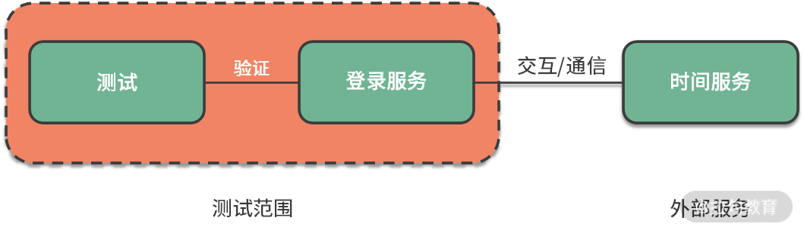</p>

<p>假设有个登录服务，该服务需要知道当前时间，而时间是由一个外部的<a href="http://worldclockapi.com/">时间服务</a>提供的。当向<a href="http://worldclockapi.com/api/json/cet/now"> /api/json/cet/now </a>发出 GET 请求时，状态码为 200，并返回如下完整的时间信息。</p>

<pre><code>{ 


$id: "1", 


currentDateTime: "2020-07-29T02:11+02:00", 


utcOffset: "02:00:00", 


isDayLightSavingsTime: true, 


dayOfTheWeek: "Wednesday", 


timeZoneName: "Central Europe Standard Time", 


currentFileTime: 132404622740972830, 


ordinalDate: "2020-211", 


serviceResponse: null, 


}

</code></pre>

<p>如果访问的 URL 错误，比如向 <a href="http://worldclockapi.com/api/json111/cet/now">/api/json111/cet/now</a>发出 GET 请求时，状态码为 404，返回如下错误提示。</p>

<pre><code>您要找的资源已被删除、已更名或暂时不可用。

</code></pre>

<p>一般来说，集成测试会负责检验与外部服务的连接以及交互协议相关的问题，如 HTTP header 的缺失、SSL 处理的异常，或者请求/响应的不匹配。所有的错误处理逻辑都需要在测试中被覆盖，以确保所使用的服务和协议客户端在特殊情况下能够按预期进行响应。</p>

<h4>（2）数据持久层集成测试</h4>

<p>数据持久层的集成测试则要复杂一些，因为结果会被保存在存储系统上并被持久化，每次测试的执行都可能因为更改了数据而对后续测试的执行产生影响。这意味着，两次测试之间并非完全独立，因为它们操作了共同的数据。</p>

<p>绝大多数情况下，应该保证两次测试之间的外部因素也是相互独立的。因为这样的错误（测试数据的修改而导致的测试执行失败）出现后往往很难意识到，进而影响排查进度。</p>

<p>为了保障两次测试的独立性，持久层集成测试的常见步骤是：</p>

<ol>

<li>在执行任意测试前，先回退数据库到一个已知且可预测的状态，这需要清理/回滚之前对数据库的修改；</li>

<li>通过插入对测试来说已知且预期中的数据来重建数据库；</li>

<li>进行相关的测试；</li>

<li>循环上述这个过程。</li>

</ol>

<p>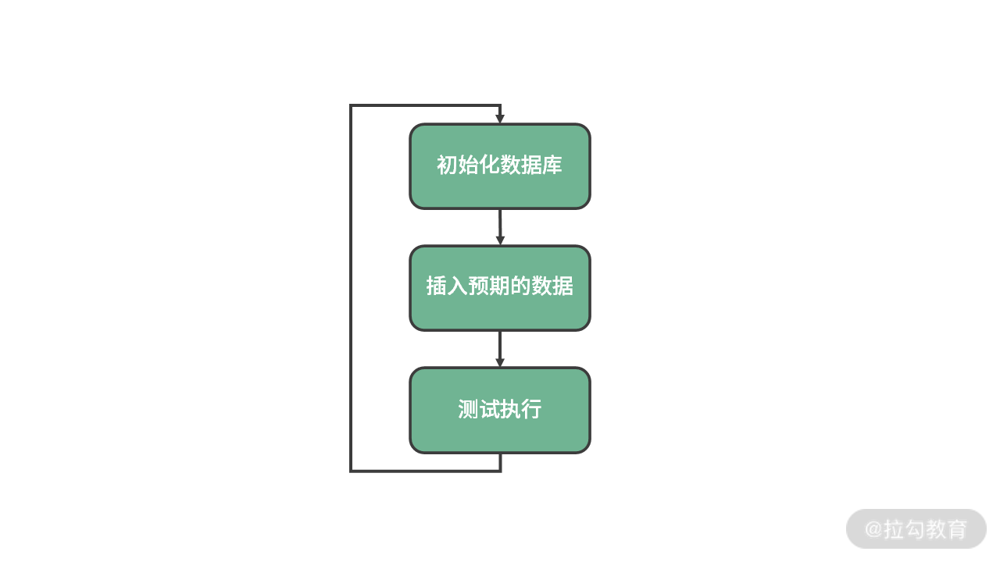</p>

<h3>常见问题及解决策略</h3>

<p>然而，有很多时候外部服务不可用（服务尚未开发完成、服务有 block 级别的缺陷未修复），或其异常行为（如外部组件的超时、响应变慢等）很难去验证。外部组件不能使用测试替身，外部服务又不可用或异常场景难构造，看似无解，实际上都是有替代方案的。</p>

<h4>服务不可用</h4>

<p>针对服务不可用的情况，<strong>微服务虚拟化技术</strong>可以完美解决这种问题，它是避免与其他服务通信时出现意外的必要工具，在具有大量依赖项的企业环境中工作的时候更是如此。它可以用于在测试阶段消除对第三方服务的依赖，测试应用程序在遇到延迟或其他网络问题时的行为。它通过创建代理服务实现对依赖服务的模拟，特别适合测试服务之间的通信。常见的工具有 Wiremock、Hoverfly、Mountebank 等。</p>

<p>以 Wiremock 为例，如下代码的效果是：当相对 URL 完全匹配 /api/json/cet/now 时，将返回状态 200，响应的主体类似于 <a href="http://worldclockapi.com/api/json/cet/now"> /api/json/cet/now</a>的返回值，Content-Type Header 的值为 text/plain。否则，当相对 URL 错误，比如访问 /api/json<strong>111</strong>/cet/now 时，则返回 404 的错误。</p>

<pre><code>@Test 


public void exactUrlOnly() { 


    stubFor(get(urlEqualTo("/api/json/cet/now")) 


            .willReturn(aResponse() 


                .withHeader("Content-Type", "text/plain") 


                .withBody(equalToJson("{ 


                      $id: \"1\", 


                      currentDateTime: \"2020-07-29T02:11+02:00\", 


                      utcOffset: \"02:00:00\", 


                      isDayLightSavingsTime: true, 


                      dayOfTheWeek: \"Wednesday\", 


                      timeZoneName: \"Central Europe Standard Time\", 


                      currentFileTime: 132404622740972830, 


                      ordinalDate: \"2020-211\", 


                      serviceResponse: null, 


                      }")))); 


    assertThat(testClient.get("/api/json/cet/now").statusCode(), is(200)); 


    assertThat(testClient.get("/api/json111/cet/now").statusCode(), is(404)); 


}

</code></pre>

<h4>服务超时&amp;响应慢难构造</h4>

<p>如果使用真实服务测试，服务超时或响应慢等情况需要特殊构造下，这时候借助各种工具会比较方便，比如常见的软件有 Fiddler、Dummynet、Clumsy 等。</p>

<p>Wiremock 也支持延迟的功能，比如使用 withFixedDelay() 可以实现固定延迟的效果：</p>

<pre><code>stubFor(get(urlEqualTo("/api/json/cet/now")).willReturn( 


        aResponse() 


                .withStatus(200) 


                .withFixedDelay(2000)));

</code></pre>

<p>使用 withLogNormalRandomDelay() 可以实现随机延迟效果：</p>

<pre><code>stubFor(get(urlEqualTo("/api/json/cet/now")).willReturn( 


        aResponse() 


                .withStatus(200) 


                .withLogNormalRandomDelay(90, 0.1)));

</code></pre>

<h4>数据初始化和构造的成本高</h4>

<p>上述对数据持久层集成测试的方法虽然通用，但是将数据库进行初始化需要编写大量的样例代码，插入预期的数据也需要编写大量的数据库操作语句。面对这个问题，可以使用一些现成的<strong>持久化测试框架</strong>来改善测试体验，常见的持久化测试框架有 NoSQLUnit、DBUnit 等。</p>

<p>DBUnit 的设计理念就是在测试之前，先备份好数据库，再给对象数据库植入需要准备的数据，在测试完毕后，再读入备份数据库，初始化到测试前的状态。DBUnit 可以在测试用例的生命周期内来对数据库的操作结果进行比较。DBUnit 支持的数据库有 db2、h2、mssql、mysql、oralce、postgresql 等。</p>

<p>NoSQLUnit 是用 DBUnit 类似的方式来编写 NoSQL 数据库的测试。支持多种 NoSQL 数据库，包括 HBase、MongoDB、Redis、ElasticSearch、Vault、Neo4j 等。</p>

<h3>总结</h3>

<p>本节课讲解了微服务架构下的集成测试定义，接着讲解了微服务下的集成测试的两个方面：网关组件层集成测试和数据持久层集成测试。</p>

<ul>

<li>在网关组件层集成测试中，通过服务虚拟化技术来实现对外部服务能力的模拟，通过模拟网络异常情况来构造外部服务超时、响应慢的情况。</li>

<li>在数据持久层集成测试中，通过持久化测试框架可以避免常规持久化测试时编写大量代码和大量 SQL 语句的情况。</li>

</ul>

<p>当然，如上框架和工具的威力不限于此，文中只给出了关键的示例信息，你可以根据需求或兴趣自行探索学习。</p>

<p>你负责的模块或服务里，是否进行过集成测试，进展如何，欢迎在留言区评论。同时欢迎你能把这篇文章分享给你的同学、朋友和同事，大家一起来交流。</p>

<blockquote>

<p><strong>相关链接：</strong>

集成测试

<a href="https://en.wikipedia.org/wiki/Integration_testing">https://en.wikipedia.org/wiki/Integration_testing</a>

<a href="https://martinfowler.com/bliki/IntegrationTest.html">https://martinfowler.com/bliki/IntegrationTest.html</a>

<a href="https://www.martinfowler.com/articles/microservice-testing/">https://www.martinfowler.com/articles/microservice-testing/</a></p>

<p>服务虚拟化工具

WireMock： <a href="http://wiremock.org/">http://wiremock.org/</a>

Hoverfly： <a href="https://hoverfly.io/">https://hoverfly.io/</a>

Mountebank： <a href="http://www.mbtest.org/">http://www.mbtest.org/</a></p>

<p>持久化测试工具

DBUnit：http://www.dbunit.org/

NoSQLUnit： <a href="https://github.com/lordofthejars/nosql-unit">https://github.com/lordofthejars/nosql-unit</a></p>

<p>网络模拟软件

Dummynet： <a href="https://github.com/luigirizzo/dummynet">https://github.com/luigirizzo/dummynet</a>

Clumsy： <a href="https://jagt.github.io/clumsy/cn/index.html">https://jagt.github.io/clumsy/cn/index.html</a></p>

</blockquote>

</div>

                    </div><div class="book-post">

                        <p id="tip" align="center"></p>

                        <div><h1>06  组件测试：如何保证单服务的质量？</h1>

<p>到目前为止，我讲解了微服务架构下的单元测试，它的目的是验证软件代码中的每个单元（方法或类等）是否符合预期；也讲解了微服务架构下的集成测试，它验证微服务是否可以与外部服务或数据存储等基础设施服务进行交互；今天来讲解下保障单个微服务的质量的测试方法——组件测试。</p>

<h3>组件测试简介</h3>

<p><strong>组件（Component）通常指大型系统中任何封装良好、连贯且可独立替换的中间子系统，在微服务架构中，一般代表单个微服务，因而组件测试（Component Testing）就是对单个服务的测试。</strong></p>

<p>在一个典型的微服务应用程序中，会有许多微服务，且它们之间存在相互调用关系。因此，要想高效地对单个微服务进行测试，需要将其依赖的其他微服务和数据存储模块进行模拟（mock）。</p>

<p>比如，使用测试替身（Test Double）工具隔离掉单个微服务依赖的其他微服务和数据存储，避免测试过程中受到依赖服务或数据存储模块的各类影响（如服务不可用、服务缺陷、数据库连接断开等）而出现阻塞测试过程、测试无效等情况。</p>

<p>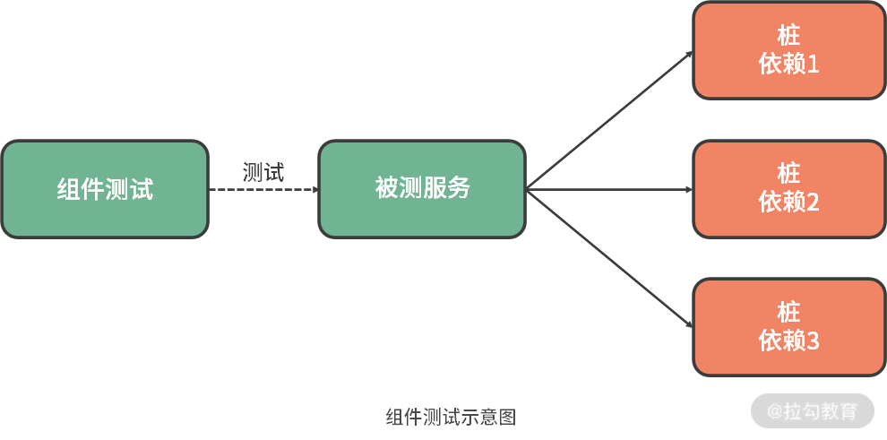</p>

<p>从某种意义上来说，组件测试的本质上是将一个微服务与其依赖的所有其他服务和数据存储模块等隔离开，对该服务进行的功能验收测试。</p>

<p>基于组件测试的隔离特性，它有如下优势：</p>

<ul>

<li>使用测试替身将被测服务与依赖的服务进行隔离，使得服务链路稳定、环境可控，这有利于测试过程的开展；</li>

<li>将测试范围限定为单个服务，因而组件的测试设计和测试执行的速度会快很多；</li>

<li>即使测试过程中发现了问题，问题也更容易复现，这不仅有利于定位问题所在，问题修复后也有利于进行回归验证。</li>

</ul>

<p>根据组件测试调用其依赖模块的方式，以及测试替身位于被测服务所在进程的内部或外部，可以有两种方式：进程内组件测试和进程外组件测试。</p>

<h3>进程内组件测试</h3>

<p>进程内组件测试是将测试替身注入所测服务所在的进程中，这样对服务的依赖调用通过方法调用的方式实现，不再需要使用网络。</p>

<p></p>

<p>进程内组件测试示意图</p>

<p>如图所示，进程内组件测试有如下变化：</p>

<ul>

<li>引入测试替身，即模拟的 HTTP 客户端（Stub HTTP Client）和模拟的内存型数据存储模块（In-Memory Datastore）。其中，模拟的 HTTP 客户端用来模拟实际的 HTTP 客户端（live Http Client），模拟的内存型数据存储模块用来模拟真实的外部数据存储模块（External Datastore）。</li>

<li>将资源（Resources）拆分成了公共资源（Public Resources）和内部资源（Internal Resources）。服务内部的网关（Gateway）连接了模拟的 HTTP 客户端，不再连接实际的 HTTP 客户端。这是因为进程内组件测试不再需要网络通信，模拟的 HTTP 客户端需要通过一个内部接口进行请求的发送和响应，这需要用到一些库进行 API 之间的转换，常用的有基于微服务的 JVM 的 <a href="https://github.com/aharin/inproctester">inproctester</a>和基于微服务的 .NET 的 <a href="https://github.com/jennifersmith/plasma">plasma</a>。</li>

</ul>

<p>可见，桩（Stub）代码、数据存储模拟模块均放在所测微服务所在的进程中，使用常驻内存的桩代码和模拟代替其依赖性，这就是“<strong>进程内</strong>（in-process）”的具体表现。通过这种方式，测试可以尽可能接近对被测服务执行真实的 HTTP 请求，而不会产生实际网络交互的额外开销。</p>

<p>这样做的好处是：最大限度地减少不确定因素，降低测试的复杂度，同时加快执行速度；但是其不足在于，这需要侵入微服务的源代码，让其能够以“测试模式”启动和运行。这种情况下，需要引入依赖注入框架（Dependency Injection Frameworks）帮助我们做到这一点，即根据程序在启动时获得的配置，使用不同的依赖对象。常见的依赖注入框架有 Spring、Castle Windsor、Unity、StructureMap、Autofac、Google guice 等。</p>

<p>除了使用测试替身验证单个服务的业务逻辑，还可以针对服务的网络响应等情况进行模拟，比如常见的有外部服务响应延迟、连接中断、响应格式错误，等等。</p>

<h3>进程外组件测试</h3>

<p>进程外组件测试则是将测试替身置于被测服务所在进程之外，因而被测服务需要通过实际网络调用与模拟的外部服务进行交互。</p>

<p>如下图所示，只用模拟的外部服务（Stub Service）替代了真实的外部服务（External Service），所以模拟的外部服务和被测服务都以单独的进程运行，而对于数据库、消息代理等基础设施模块则直接使用真实的。因此，被测服务和模拟的外部服务存在于不同的进程中，这就是“进程外（out-of-process）”的具体表现。除了对功能逻辑有所验证外，进程外组件测试还验证了微服务具有正确的网络配置并能够处理网络请求。</p>

<p></p>

<p>进程外组件测试示意图</p>

<p>关于外部服务模拟，也有不同的类型，常见的有使用事先构造好的静态数据、通过传参方式动态调用API、使用<strong>录制回放技术</strong>（record-replay mechanism），你可以根据自己的需求选取模拟类型，如果依赖的服务仅提供少数几个固定的功能，并且返回结果较为固定，可以使用静态数据来模拟；如果依赖的服务功能较为单一，但是返回结果有一定的规律，可以使用动态调用 API 的方式来模拟；如果依赖的服务功能丰富多样，那么推荐使用录制回放技术来模拟。</p>

<p>在实际微服务项目中，进程外的组件测试非常常见，一般使用服务虚拟化工具对依赖的服务进行模拟。上一课时给出了 Wiremock 模拟服务通信的例子，在进行组件测试时，依然可以用Wiremock，但与集成测试不同的是，组件测试需要更加深入：<strong>验证被测服务的功能或行为是否符合预期、返回结果的格式是否符合预期、对服务超时、异常返回等异常行为是否具有容错能力，等等。</strong></p>

<p>用 Wiremock 模拟服务的具体步骤如下：</p>

<p>1.下载 <a href="https://repo1.maven.org/maven2/com/github/tomakehurst/wiremock-jre8-standalone/2.27.0/wiremock-jre8-standalone-2.27.0.jar">Wiremock 独立版本</a>（wiremock-jre8-standalone-2.27.0.jar）;

2.作为独立版本运行，效果如下：</p>

<p>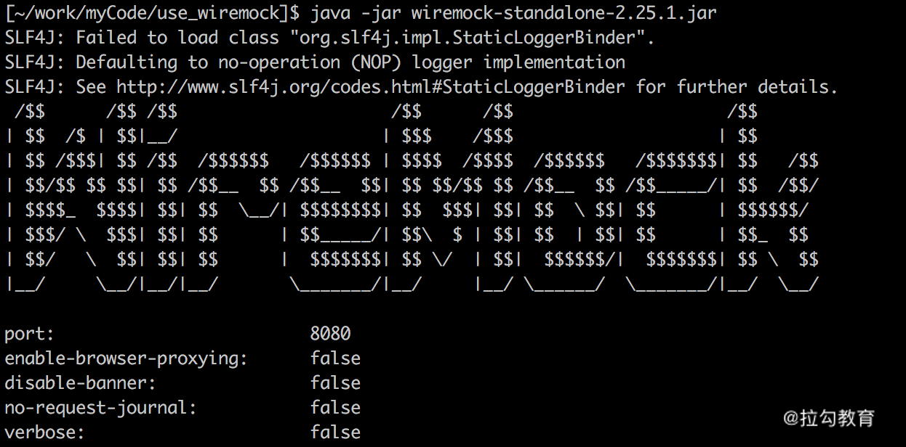</p>

<p>启动后，Wiremock 会在本地启动一个监听指定端口的 web 服务，端口可以用 --port和 --https-port 来分别指定 http 协议和指定 https 协议端口。之后发到指定端口的请求，就会由 WireMock 来完成响应，从而达到接口 Mock 的目的。</p>

<p>这时，在本地运行目录下会看到自动生成 __files 和 mappings 两个目录。这两个目录中存放的是 Mock 模拟的接口匹配内容。其中 __files 存放接口响应中会用到的一些文件资源，mappings 存放接口响应匹配规则。匹配文件以 json 格式存放在 mappings 目录下，WireMock 会在启动后自动加载该目录下所有符合格式的文件作为匹配规则使用。</p>

<p>3.编辑匹配规则文件 tq.json，放到 mappings 目录下，内容如下：</p>

<pre><code>{ 


    "request": { 


        "method": "GET", 


        "url": "/api/json/est/now" 


    }, 


    "response": { 


        "status": 200, 


        "body": "{\"$id\": \"1\", \"currentDateTime\": \"2020-07-29T02:11+02:00\",\"utcOffset\": \"02:00:00\",\"isDayLightSavingsTime\": true,\"dayOfTheWeek\": \"Wednesday\",\"timeZoneName\": \"Central Europe Standard Time\", \"currentFileTime\": 132404622740972830, \"ordinalDate\": \"2020-211\", \"serviceResponse\": null}", 


        "headers": { 


            "Content-Type": "text/plain" 


        } 


    } 


}

</code></pre>

<p>注意：body 中的内容为 Json 格式时，需要对其中出现的双引号进行转义，否则启动 Wiremock 时将报错。</p>

<p></p>

<p>4.重新启动 Wiremock，访问模拟服务的对应接口（ <a href="http://localhost:8080/api/json/est/now">http://localhost:8080/api/json/est/now</a>），返回如下：</p>

<pre><code>{ 


$id: "1", 


currentDateTime: "2020-07-29T02:11+02:00", 


utcOffset: "02:00:00", 


isDayLightSavingsTime: true, 


dayOfTheWeek: "Wednesday", 


timeZoneName: "Central Europe Standard Time", 


currentFileTime: 132404622740972830, 


ordinalDate: "2020-211", 


serviceResponse: null, 


}

</code></pre>

<p>至此，就实现了对服务进行 mock 的效果。</p>

<p>要验证被测服务的功能或行为是否符合预期、返回结果的格式是否符合预期，需要先<strong>熟悉被测服务所负责的业务功能和行为，然后结合测试用例设计方法设计出对被测服务进行验证的测试用例，再使用 Wiremock 强大的模拟能力，对被测服务进行功能验证，以保障被测服务的功能或行为符合预期。</strong></p>

<p>要验证被测服务出现故障时的场景，可以借助 Wiremock 的故障模拟能力，以 JSON API 为例：</p>

<ul>

<li>错误类返回值</li>

</ul>

<pre><code>{ 


    "request": { 


        "method": "GET", 


        "url": "/fault" 


    }, 


    "response": { 


        "fault": "MALFORMED_RESPONSE_CHUNK" 


    } 


}

</code></pre>

<p>可以设置 fault 的值来表示不同的故障：</p>

<ul>

<li>

<ul>

<li>EMPTY_RESPONSE 返回一个完全空的响应；</li>

<li>MALFORMED_RESPONSE_CHUNK 发送OK状态标题，然后是垃圾数据，然后关闭连接；</li>

<li>RANDOM_DATA_THEN_CLOSE，发送随机的垃圾数据，然后关闭连接。</li>

</ul>

</li>

<li>延迟类返回值</li>

</ul>

<pre><code>{ 


    "request": { 


        "method": "GET", 


        "url": "/delayed" 


    }, 


    "response": { 


        "status": 200, 


        "fixedDelayMilliseconds": 2000 


    } 


}

</code></pre>

<p>替换 fixedDelayMilliseconds 字段，可以实现如下不同效果的延迟。</p>

<ul>

<li>

<ul>

<li>fixedDelayMilliseconds：固定延迟，单位为毫秒。</li>

<li>delayDistribution，type 为 uniform：均匀分布延迟，可用于模拟具有固定抖动量的稳定延迟。它带有两个参数：lower（范围的下限）和 upper（范围的上限），如下代表20ms +/- 5ms的稳定等待时间。</li>

</ul>

</li>

</ul>

<pre><code>"delayDistribution": { 


        "type": "uniform", 


        "lower": 15, 


        "upper": 25 


}

</code></pre>

<ul>

<li>

<ul>

<li>delayDistribution，type 为 lognormal：从随机分布中的采样延迟。median 代表中位数，sigma 为标准偏差，值越大，尾巴越长。</li>

</ul>

</li>

</ul>

<pre><code>"delayDistribution": { 


          "type": "lognormal", 


          "median": 80, 


          "sigma": 0.4 


            }

</code></pre>

<p>Wiremock 的模拟能力远远不止这些，足够你用它来模拟被测服务，感兴趣的话可以自行探索和学习。</p>

<h3>“进程内” VS “进程外”</h3>

<p>如上可知，两种测试方法各有优劣，如下是示意图，方便查看它们的异同：</p>

<p>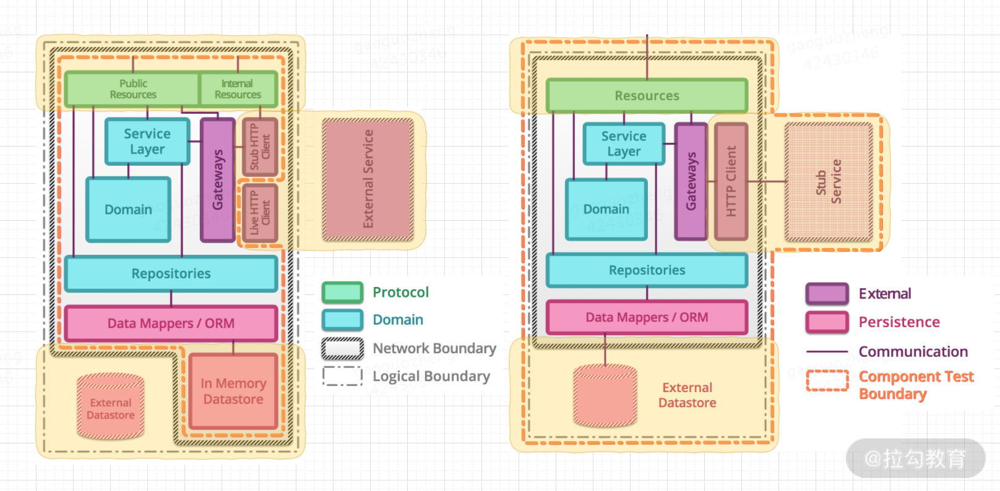</p>

<p>两种测试方法的示意图对比</p>

<p>两种测试类型的优缺点对比：</p>

<table>

<thead>

<tr>

<th></th>

<th><strong>优点</strong></th>

<th><strong>缺点</strong></th>

</tr>

</thead>

<tbody>

<tr>

<td><strong>进程内组件测试</strong></td>

<td>测试设计简单； 运行速度快</td>

<td>未测试到服务的部署情况，仿真性弱</td>

</tr>

<tr>

<td><strong>进程外组件测试</strong></td>

<td>更具集成性和仿真性； 测试覆盖率更高；</td>

<td>测试设计复杂、成本更高； 运行速度慢； 跨网络，运行环境不稳定；</td>

</tr>

</tbody>

</table>

<p>对比两者，进程外组件测试的优势并不明显，因此，<strong>实际项目测试过程中应首选进程内组件测试</strong>。如果微服务具有复杂的集成、持久性或启动逻辑，则进程外（out-of-process ）方法可能更合适。</p>

<h3>总结</h3>

<p>本节课我讲解了微服务架构下的组件测试，它是针对单个微服务的一种测试方法。根据组件测试调用模块的方式，以及测试替身位于被测服务所在进程的内部或外部，可以有两种测试方法：进程内组件测试和进程外组件测试。</p>

<p>通过对进程内组件测试和进程外组件测试的分析，得知进程内组件测试可以尽可能接近对被测服务执行真实的 HTTP 请求，且具有运行速度快、测试设计简单等优点，是实际项目测试过程的首选方法。但如果微服务具有复杂的集成、持久性或启动逻辑，则进程外组件测试方法可能更合适。</p>

<p>为了能够更全面地测试微服务，需要通过对多种不同的测试方法进行组合（单元测试、集成测试、组件测试），这样可以对组成微服务的模块进行较高的测试覆盖度，从而确保微服务的业务逻辑满足需求。但这些服务并不能确保外部依赖服务满足它们自身的预期契约，或者使微服务集合满足业务诉求。这种场景下，契约测试（Contract Testing）可以验证这类情况，这也是下一课时的内容，敬请期待。</p>

<p>你负责的项目或服务里，是否进行过组件测试，进展如何？欢迎在留言区评论。同时欢迎你能把这篇文章分享给你的同学、朋友和同事，大家一起来交流。</p>

<blockquote>

<p>相关链接

<a href="https://martinfowler.com/articles/microservice-testing/">https://martinfowler.com/articles/microservice-testing/</a>

<a href="https://www.simform.com/microservice-testing-strategies">https://www.simform.com/microservice-testing-strategies</a>

<a href="https://cloud.spring.io/spring-cloud-contract/reference/html/">https://cloud.spring.io/spring-cloud-contract/reference/html/</a>

依赖注入框架

Spring： <a href="https://spring.io/">https://spring.io/</a>

Google Guice： <a href="https://github.com/google/guice">https://github.com/google/guice</a>

API转换库：

inproctester： <a href="https://github.com/aharin/inproctester">https://github.com/aharin/inproctester</a>

plasma： <a href="https://github.com/jennifersmith/plasma">https://github.com/jennifersmith/plasma</a>

服务虚拟化工具

WireMock： <a href="http://wiremock.org/">http://wiremock.org/</a>

Hoverfly： <a href="https://hoverfly.io/">https://hoverfly.io/</a>

Mountebank： <a href="http://www.mbtest.org/">http://www.mbtest.org/</a></p>

</blockquote>

</div>

                    </div><div class="book-post">

                        <p id="tip" align="center"></p>

                        <div><h1>07  契约测试：如何进行消费者驱动的契约测试？</h1>

<p>上一课时，我讲到了微服务架构下的组件测试，它是针对单个微服务的验收测试，虽然保障了单个微服务功能的正确性，但要想保障微服务间交互功能的正确性，就需要进行契约测试。</p>

<h3>契约测试产生的背景</h3>

<p>在介绍契约测试之前，首先来看下什么是契约。现实世界中，契约是一种书面的约定，比如租房时需要跟房东签房屋租赁合同、买房时需要签署购房合同、换工作时你要跟公司签署劳动合同等。在信息世界中，契约也有很多使用场景，像 TCP/IP 协议簇、HTTP 协议等，只是这些协议已经成为一种技术标准，我们只需要按标准方式接入就可以实现特定的功能。</p>

<p>具体到业务场景中，契约是研发人员在技术设计时达成的约定，它规定了服务提供者和服务消费者的交互内容。可见，无论是物理世界还是信息世界，<strong>契约是双方或多方共识的一种约定，需要协同方共同遵守。</strong></p>

<p>在微服务架构中，服务与服务之间的交互内容更需要约定好。因为一个微服务可能与其他 N 个微服务进行交互，只有对交互内容达成共识并保持功能实现上的协同，才能实现业务功能。我们来看一个极简场景，比如我们要测试服务 A 的功能，然而需要服务 A 调用服务 B 才能完成，如图：</p>

<p></p>

<p>服务 A 所属的研发测试团队在测试时，太难保证服务 B 是足够稳定的，而服务 B 的不稳定会导致测试服务 A 时效率下降、测试稳定性降低。因为，当服务 B 有阻塞性的缺陷或者干脆宕机时，你需要判断是环境问题还是功能缺陷导致的，这些情况在微服务的测试过程中属于常见的痛点问题。因此，为了提升测试效率和测试稳定性，我们会通过<strong>服务虚拟化技术</strong>来模拟外部服务，如图：</p>

<p></p>

<p>需要特别注意的是，如果此时你针对内部系统的测试用例都执行通过了，可以说明你针对服务 A的测试是通过的吗？答案是否定的。因为这里面有个<strong>特别重要的假设是</strong>，服务虚拟化出来的Mock B 服务与真实的 B 服务是相等的。而事实是，它们可能只在你最初进行服务虚拟化时是相等的，随着时间的推移，它们很难保持相等。</p>

<p></p>

<p>可能你会说，保持相等不就是个信息同步的工作嘛，有那么难吗？事实上，说起来容易做起来真的挺难：在实际的研发场景下，一个研发团队需要维护若干（a）个服务，每个服务又有数十（b）个接口，每个接口又被多（c）个团队的服务所调用，可见信息同步的工作量是巨大的（a<em>b</em>c）。</p>

<p>所以在微服务团队中，如下情况极为常见，每一项都会导致信息不同步：服务 B 的开发团队认为某次修改对服务 A 无影响，所以没告诉服务 A 的开发团队，而实际上是有影响的；服务 B 的开发团队认为某次修改对服务 A 有影响，而服务 A 的开发团队认为无影响；服务 B 的开发团队忘记把某次修改同步到服务 A 的开发团队。</p>

<p>所以，比较好的方式就是<strong>通过“契约”来降低服务 A 和服务 B 的依赖</strong>。具体指导原则为：</p>

<ul>

<li>根据服务 A 和服务 B 的交互生成一份“契约”，且契约内容的变化可以及时感知到，并生成模拟服务；</li>

<li>将服务之间的集成测试，变成两个测试，即真实的服务 A 和模拟服务 B 之间的测试和模拟的服务 A 和真实服务 B 之间的测试。</li>

</ul>

<p></p>

<p>契约测试示意图</p>

<p>理解了契约测试产生的背景，我们来讲解下微服务架构下契约测试的具体含义。</p>

<h3>契约测试介绍</h3>

<p>在微服务架构下，契约（Contract）是指服务的消费者（Consumer）与服务的提供者（Provider）之间交互协作的约定。契约主要包括两部分。</p>

<ul>

<li><strong>请求（Request）</strong>：指消费者发出的请求，通常包括请求头（Header）、请求内容（URI、Path、HTTP Verb）、请求参数及取值类型和范围等。</li>

<li><strong>响应（Response）</strong>：指提供者返回的响应。可能包括响应的状态码（Status Word）、响应体的内容（XML/JSON） 或者错误的信息描述等。</li>

</ul>

<p>契约测试（Contract Test）是将契约作为中间标准，对消费者与提供者间的协作进行的验证。根据测试对象的不同，又分为两种类型：<strong>消费者驱动 和 提供者驱动。最常用的是消费者驱动的契约测试</strong>（Consumer-Driven Contract Test，简称 CDC）。核心思想是从消费者业务实现的角度出发，由消费者端定义需要的数据格式以及交互细节，生成一份契约文件。然后生产者根据契约文件来实现自己的逻辑，并在持续集成环境中持续验证该实现结果是否正确。</p>

<p>为什么要进行<strong>消费者驱动</strong>的契约测试呢？在微服务架构下，提供者和消费者往往是一对多的关系。比如，服务提供者提供了一个 API，该服务会被多个不同的消费者所调用，当提供者想要修改该 API 时，就需要知道该 API 当前正在被多少消费者所调用，具体是怎样调用的。否则，当提供者针对该 API 进行逻辑或字段的修改（新增、删除、更新）时，都有可能导致消费者无法正常使用。而消费者驱动的契约测试相当于把不同消费者对该 API 的需求暴露出来，形成契约文件和验证点，提供者完成功能修改后对修改结果进行验证，以保障符合消费者的预期。</p>

<p>工欲善其事，必先利其器。要想做某类测试，一个好的测试框架是必不可少的。在契约测试领域也有不少测试框架，其中两个比较成熟的企业级测试框架：</p>

<ul>

<li>Spring Cloud Contract，它是 Spring 应用程序的消费者契约测试框架；</li>

<li>Pact 系列框架，它是支持多种语言的框架。</li>

</ul>

<p>因为 Pact 的多语言特性，它也是实际工作过程中使用最频繁的框架。为了加深对契约测试的理解，我们来看一个基于 Pact 框架的契约测试的实例。</p>

<h3>契约测试实例</h3>

<h4>契约内容</h4>

<p>如下所示，服务提供者为 userservice，消费者为 ui，契约内容包含了 POST 请求 /user-service/users，传参为对象 user， 并返回 201 和创建用户的 id。</p>

<pre><code>{ 


  "consumer": { 


    "name": "ui" 


  }, 


  "provider": { 


    "name": "userservice" 


  }, 


  "interactions": [ 


    { 


      "description": "a request to POST a person", 


      "providerState": "provider accepts a new person", 


      "request": { 


        "method": "POST", 


        "path": "/user-service/users", 


        "headers": { 


          "Content-Type": "application/json" 


        }, 


        "body": { 


          "firstName": "Arthur", 


          "lastName": "Dent" 


        } 


      }, 


      "response": { 


        "status": 201, 


        "headers": { 


          "Content-Type": "application/json" 


        }, 


        "body": { 


          "id": 42 


        }, 


        "matchingRules": { 


          "$.body": { 


            "match": "type" 


          } 


        } 


      } 


    } 


  ], 


  "metadata": { 


    "pactSpecification": { 


      "version": "2.0.0" 


    } 


  } 


} 

</code></pre>

<h4>Spring Controller</h4>

<p>创建 Spring Controller，并遵循上述的契约；</p>

<pre><code>@RestController 


public class UserController { 


  private UserRepository userRepository; 


  @Autowired 


  public UserController(UserRepository userRepository) { 


    this.userRepository = userRepository; 


  } 


  @PostMapping(path = "/user-service/users") 


  public ResponseEntity&lt;IdObject&gt; createUser(@RequestBody @Valid User user) { 


    User savedUser = this.userRepository.save(user); 


    return ResponseEntity 


      .status(201) 


      .body(new IdObject(savedUser.getId())); 


  } 


} 

</code></pre>

<h4>服务提供者测试</h4>

<p>为了快速发现问题，最好在每次构建时都进行契约测试，可以使用 Junit 来管理测试。</p>

<p>要创建 Junit 测试，需要添加依赖到工程中：</p>

<pre><code>dependencies { 


  testCompile("au.com.dius:pact-jvm-provider-junit5_2.12:3.5.20") 


  // Spring Boot dependencies omitted 


} 

</code></pre>

<p>创建服务提供者测试 UserControllerProviderTest，并运行：</p>

<pre><code>@ExtendWith(SpringExtension.class) 


@SpringBootTest(webEnvironment = SpringBootTest.WebEnvironment.DEFINED_PORT,  


        properties = "server.port=8080") 


@Provider("userservice") 


@PactFolder("../pact-angular/pacts") 


public class UserControllerProviderTest { 


  @MockBean 


  private UserRepository userRepository; 


  @BeforeEach 


  void setupTestTarget(PactVerificationContext context) { 


    context.setTarget(new HttpTestTarget("localhost", 8080, "/")); 


  } 


  @TestTemplate 


  @ExtendWith(PactVerificationInvocationContextProvider.class) 


  void pactVerificationTestTemplate(PactVerificationContext context) { 


    context.verifyInteraction(); 


  } 


  @State({"provider accepts a new person"}) 


  public void toCreatePersonState() { 


    User user = new User(); 


    user.setId(42L); 


    user.setFirstName("Arthur"); 


    user.setLastName("Dent"); 


    when(userRepository.findById(eq(42L))).thenReturn(Optional.of(user)); 


    when(userRepository.save(any(User.class))).thenReturn(user); 


  } 


} 

</code></pre>

<p>测试结果如下所示：</p>

<pre><code>Verifying a pact between ui and userservice 


  Given provider accepts a new person 


  a request to POST a person 


    returns a response which 


      has status code 201 (OK) 


      includes headers 


        "Content-Type" with value "application/json" (OK) 


      has a matching body (OK) 

</code></pre>

<p>也可以将契约文件上传到 PactBroker 中，这样后续测试时可以直接从 PactBroker 中加载契约文件：</p>

<pre><code>@PactBroker(host = "host", port = "80", protocol = "https", 


        authentication = @PactBrokerAuth(username = "username", password = "password")) 


public class UserControllerProviderTest { 


  ... 


} 

</code></pre>

<h3>总结</h3>

<p>本节课我首先讲解了契约的定义，通俗地讲，它是双方或多方共识的一种约定，需要协同方共同遵守。而在微服务架构下，<strong>契约（Contract）是指服务的消费者（Consumer）与服务的提供者（Provider）之间交互协作的约定，主要包括请求和响应两部分。</strong></p>

<p>紧接着讲解了微服务架构下跨服务测试的痛点和难点，因而引入了契约测试的概念，它的指导思想是<strong>通过“契约”来降低服务和服务之间的依赖</strong>，即，将契约作为中间标准，对消费者与提供者间的协作进行的验证。根据测试对象的不同，契约测试分为两种，但最常用的契约测试类型是<strong>消费者驱动的契约测试</strong>（Consumer-Driven Contract Test，简称 CDC）。核心思想是<strong>从消费者业务实现的角度出发</strong>，由消费者端定义需要的数据格式以及交互细节，生成一份契约文件。然后提供者根据契约文件来实现自己的逻辑，并在持续集成环境中持续验证该实现结果是否正确。契约测试框架也有多种，但最常见的框架有 Spring Cloud Contract 和 Pact，其中 Pact 框架更为流行。</p>

<p>最后给出了基于 Pact 框架的契约测试实例的大体步骤，并在文稿下方给出了示例代码地址，感兴趣的同学可以自行学习。</p>

<p>你所负责的项目或服务，是否进行过契约测试呢？如果有，是哪种类型的契约测试，具体的进展是怎样的？欢迎在留言区评论。同时欢迎你能把这篇文章分享给你的同学、朋友和同事，大家一起交流。</p>

<blockquote>

<p>相关链接

https://www.martinfowler.com/articles/microservice-testing/

https://reflectoring.io/7-reasons-for-consumer-driven-contracts/

契约测试框架

https://docs.pact.io/

https://spring.io/projects/spring-cloud-contract

https://www.infoq.com/news/2019/02/contract-testing-microservices/

实例

https://github.com/thombergs/code-examples/tree/master/pact/pact-spring-provider

https://reflectoring.io/consumer-driven-contract-provider-pact-spring/</p>

</blockquote>

</div>

                    </div><div class="book-post">

                        <p id="tip" align="center"></p>

                        <div><h1>08  端到端测试：站在用户视角验证整个系统</h1>

<p>前几课时，我先后讲到了微服务架构下的单元测试、集成测试、组件测试和契约测试。今天我来讲解下分层测试策略的最顶层——端到端测试。</p>

<h3>端到端测试详解</h3>

<h4>定义</h4>

<p><strong>端到端测试（End-to-end Test）是一种用于测试整个应用程序的流程是否符合预期的测试技术。</strong> 它模拟用户真实的使用场景，通过用户界面测试应用程序，如图所示：</p>

<p></p>

<p>与其他类型的测试相反，<strong>端到端测试是面向业务的</strong>，其目的是验证应用程序系统整体上是否符合业务目标。为了实现这一目标，该系统通常被视为<strong>黑盒子</strong>：尽可能完整地部署系统中的微服务，并主要通过 GUI 和 API 等公共接口对其进行操作。</p>

<blockquote>

<p>GUI：Graphical User Interface，又称图形用户界面或图形用户接口。它是采用图形方式显示的计算机操作用户界面，是一种人与计算机通信的界面显示格式，允许用户使用鼠标等输入设备操纵屏幕上的图标或菜单选项，以选择命令、调用文件、启动程序或执行其他一些日常任务。</p>

<p>API：Application Programming Interface，又称呼应用程序编程接口或应用程序接口。它是一组定义、程序及协议的集合，通过 API接口实现计算机软件之间的相互通信。API 的一个主要功能是提供通用功能集，同时也是一种中间件，为各种不同平台提供数据共享。</p>

</blockquote>

<p>由于微服务架构包含多个具有相同行为的活动部件，因此端到端测试为服务之间传递消息的正确性提供了更多的信心，而且还可以确保正确配置了其他网络基础结构，例如防火墙、代理或负载均衡等。</p>

<h4>测试范围</h4>

<p>通过微服务的分层测试策略可知，<strong>端到端测试的范围比其他类型的测试大得多。</strong></p>

<p></p>

<p>分层测试策略-测试范围</p>

<p>绝大多数情况下，微服务应用系统会依赖一个或多个由外部管理的微服务。通常，这些外部服务包含在端到端测试范围内。 但是，在极少数情况下，也可以主动排除它们。因为如果外部服务由第三方管理，可能会经常出现稳定性和可靠性问题，这会导致端到端测试因不可控的原因而失败。</p>

<p></p>

<p>微服务应用的典型示例</p>

<p>比如，某个应用程序系统依赖公安部门的背景审查服务，通过调用该服务来查询用户是否有过违法前科。首先这样的服务通常会按调用次数付费（每次 5-10 元），具有较高的测试成本，其次背景审查服务不总是稳定可用的。在这种情况下，通过服务虚拟化技术模拟背景审查服务是个不错的选择，这虽然多少会降低端到端测试的信心，但增加了测试用例套件的稳定性。</p>

<h4>测试入口</h4>

<p>因为端到端测试是面向业务的，那么测试时要从真实用户的使用场景来进行测试，根据应用程序系统是否有 GUI，可以分为两种情况：</p>

<ul>

<li><strong>应用程序系统有 GUI</strong>，这种情况下用户可以直接操作 GUI 来使用系统，那么诸如 Selenium WebDriver 之类的工具可以帮助驱动 GUI 触发系统内的特定行为。</li>

<li><strong>应用程序系统没有 GUI</strong>，这种情况下，使用 HTTP 客户端通过其公共的 API 直接操作微服务。没有真实的 GUI，不能直观地看到业务功能行为，但可以通过后台数据来确定系统的正确性，比如 API 的返回结果、持久化数据的变化情况，等等。</li>

</ul>

<h4>测试设计</h4>

<p>确定测试范围和测试入口后，可以进一步梳理出要测试的功能列表或用例集，并对其按业务能力、优先级、重要性等维度进行分组。这样可以将它们拆分为较小的任务，以便整个团队可以排序处理，比如可以首先实施优先级较高的用例组，或按紧急程度处理关键的用例，这有助于我们尽早消除潜在的障碍。</p>

<p>另外，由于端到端测试的目标是完全集成后的系统的行为，使得<strong>编写和维护测试用例会比其他类型的测试更加困难：</strong></p>

<ul>

<li>端到端测试涉及的活动部件比其他测试多得多；</li>

<li>端到端测试须考虑系统中的异步处理。</li>

</ul>

<p>这些因素都可能给端到端测试带来挑战，比如测试过程不稳定、测试时间过长、测试用例集的维护成本高，等等。因此，应尽可能以<strong>最粗粒度</strong>进行端到端的测试设计。</p>

<h3>如何开展端到端测试？</h3>

<p>熟悉了端到端测试的基本内容，我们来看下如何开展端到端测试，主要有如下几类：</p>

<ul>

<li><strong>UI 自动化</strong></li>

</ul>

<p>对于带有 GUI 的应用程序系统，在进行端到端测试时，可以通过 UI 自动化的方式进行。如果 GUI 是 Web 形式，则 Selenium 是首选工具；如果 GUI 是 Native 形式，则可以使用 Appium。</p>

<p>使用 UI 自动化方式进行端到端测试时，UI 本身也存在不稳定性，因此在测试应用程序时避免使用 GUI 也许是个不错的主意。</p>

<ul>

<li><strong>API 自动化</strong></li>

</ul>

<p>REST-assured 库可以绕开 GUI 来测试 REST API 的服务，它用于针对API 触发实际的 HTTP 请求并评估收到的响应是否符合业务需要。</p>

<ul>

<li><strong>手工测试</strong></li>

</ul>

<p>手工测试则是像真实用户那样通过用户界面使用应用程序系统，而且测试自动化工作从来都不可能是完美的。比如，几乎不可能通过编写自动化用例来检测特定的错误，有时会在自动化测试中错过某些边缘情况，某些质量问题在自动化测试中并不明显，不容易被发现，等等。因此，进行某种形式的手工测试依然是一个好主意，且当进行手工测试时，可以适当地引入探索式测试。</p>

<blockquote>

<p>探索式软件测试是一种手动测试方法，强调测试人员在运行系统中发现质量问题的自由度和创造力。只需使用破坏性的思维方式，并提出在应用程序中引发问题和错误的方法。记录所有找到的内容，以备日后使用。当心错误、设计问题、响应时间慢、丢包或错包、以及所有其他会困扰软件用户的问题。</p>

</blockquote>

<h3>端到端测试实践心得</h3>

<p>通过上述内容可知端到端测试的重要性、实用性、复杂性，这里跟你聊一下我对端到端测试的几点实践心得。</p>

<ul>

<li>编写尽可能少的端到端测试，但绝不能省略它</li>

</ul>

<p>由于可以通过较低级别的测试技术来获得微服务的质量信心，因此端到端测试的作用是确保一切都紧密联系在一起，从而实现业务目标。在端到端这个级别的测试上，全面地测试业务需求无疑是浪费的，尤其当微服务数量较多时，它的投入产出比必然很低。所以需要所有其他测试手段都用尽后，再进行端到端测试，并以此作为最终的质量保证。</p>

<p>同时需要警惕的是，<strong>端到端测试要尽可能地少，但绝不能省略它</strong>。因为微服务架构下的分层测试，每一层都有独特的作用，不可轻易省略某一层级的测试。对于端到端测试来说，无论如何也需要验证业务的核心链路和功能。微服务测试人员经常会犯的错误是，在充分进行了较低层次的测试后，会乐观地认为已不存在质量问题，结果问题被生产环境的真实用户发现后才追悔莫及。</p>

<ul>

<li>分析缺陷产生的层次，推进分层测试的落地与完善</li>

</ul>

<p>在微服务测试过程中，要善于对出现过的缺陷进行合理性分析。比如，如果较高级别的测试发现缺陷，并且没有进行较低级别的测试或较低级别的测试未执行失败，则需要推动落地或完善较低级别的测试。只有尽可能将测试推到测试金字塔的下方，才能逐渐将分层测试策略在项目中落地。</p>

<ul>

<li>测试设计时应专注于真实的用户操作</li>

</ul>

<p>为了确保端到端测试用例套件中的所有测试都是有价值的，可以围绕系统用户的角色以及这些用户在系统中进行的操作轨迹进行分析和场景设计。</p>

<p>例如，对于用户在网站上购物这个场景来说，应编写的是一个包含浏览商品、放入购物车、付款这三个操作的单个测试，而不是分别单独测试每一个操作。这种方法可以显著减少编写的测试数量并缩短测试执行时间。</p>

<ul>

<li>慎重选择测试入口</li>

</ul>

<p>如果特定的外部服务或 GUI 是测试用例套件中不稳定的主要原因，则可以重新确定测试范围以便排除掉不稳定的组件。但这里需要注意的是，虽然推荐使用服务虚拟化来模拟不稳定的服务，但尽量用真实的外部服务或 GUI 对核心链路进行至少一次的端到端测试，而不是一直使用服务虚拟化工具来模拟。</p>

<ul>

<li>使测试与数据无关</li>

</ul>

<p>端到端测试的常见困难来源是数据管理，有必要针对测试数据进行管理：如果数据可以用业务操作进行构造，则在端到端执行之前构造好需要的测试数据；如果不允许以业务操作方式构造，则可以在数据库中插入所需数据。</p>

<ul>

<li>端到端测试，从来都不 low</li>

</ul>

<p>一些测试人员认为端到端测试没有技术含量，我不太认同。因为测试过程中的关注点和验证点不同，个人的收获也不尽相同。你当然可以把端到端测试看成是一个纯黑盒测试，测试的过程就是不断“点点点”的过程，发现问题时直接反馈给研发同学，等研发同学排查解决后回归验证。你也可以提前梳理好核心链路服务调用关系、数据库表结构、核心类的代码逻辑等内容，在进行端到端测试时，针对关键操作实时查看接口调用情况、服务操作的日志、数据库等信息。并且当出现问题时，或许你自己就能定位出问题所在，即使未能定位出来，也可以把你排查到的中间结果告知给研发同学，使研发同学可以更快定位到问题所在。这种端到端测试属于灰盒测试（黑盒测试+白盒测试），测试效率变高、范围更加精准，研发人员对待你的态度也将大不一样。</p>

<h3>总结</h3>

<p>本节课，我讲解了微服务架构下的端到端测试，它是一种用于测试整个应用程序的流程是否符合预期的测试技术。它的测试范围比其他类型的测试大得多。绝大多数情况下，微服务应用系统依赖的外部服务也应包含在端到端测试范围内。如果有必要，也可以主动排除它们。端到端测试是面向业务的，所以测试时要从真实用户使用场景来进行测试，尽可能完整地部署系统中的微服务，并主要通过 GUI 和 API 等公共接口对其进行操作。</p>

<p>紧接着我又讲解了如何开展端到端测试，主要通过 UI 自动化测试方式、API 自动化测试方式和手工测试方式来进行：通过端到端测试框架（如Selenium、Appium、 REST-assured ）和探索式软件测试方法发现整个应用程序的缺陷。</p>

<p>最后我给出了我在端到端测试方面的一些实践心得，包括端到端测试数量、缺陷分析和分层测试推进、测试设计时的关注点、对测试入口的选择、测试数据的准备和对端到端测试的基本认识等。</p>

<p>到目前为止，关于微服务的分层测试策略的内容就介绍完了，再来整体回顾一下。</p>

<p></p>

<ul>

<li>单元测试（Unit Test） ：从服务中最小可测试单元视角验证代码行为符合预期，以便测试出方法、类级别的缺陷。</li>

<li>集成测试（Integration Test）：验证当前服务与外部模块之间的通信方式或者交互符合预期，以便测试出接口缺陷。</li>

<li>组件测试 （Component Test）：将测试范围限制在被测系统的一部分（一般是单个服务），使用测试替身（test doubles）将其与其他组件隔离，以便测试出被测代码的缺陷。</li>

<li>契约测试（Contracts Test）：验证当前服务与外部服务之间的交互，以表明它符合消费者服务所期望的契约。</li>

<li>端到端测试（End-to-end Test）：从用户视角验证整个系统的功能能否符合用户的预期。</li>

</ul>

<p>你所负责的项目或服务，是否进行过端到端测试？我想，一定有。那么它具体的进展是怎样的？欢迎在留言区评论。同时欢迎你能把这篇文章分享给你的同学、朋友和同事，大家一起交流。</p>

<blockquote>

<p>相关链接

<a href="ttps://www.martinfowler.com/articles/microservice-testing/">https://www.martinfowler.com/articles/microservice-testing/</a>

<a href="https://www.martinfowler.com/articles/practical-test-pyramid.html">https://www.martinfowler.com/articles/practical-test-pyramid.html</a>

<a href="https://engineering.zalando.com/posts/2019/02/end-to-end-microservices.html">https://engineering.zalando.com/posts/2019/02/end-to-end-microservices.html</a>

<a href="https://opensource.com/article/18/6/five-microservice-testing-strategies-startups">https://opensource.com/article/18/6/five-microservice-testing-strategies-startups</a>

<a href="https://www.intevity.com/insights/automated-testing-with-microservices">https://www.intevity.com/insights/automated-testing-with-microservices</a>

端到端测试框架

Cypress： <a href="https://github.com/cypress-io/cypress">https://github.com/cypress-io/cypress</a>

Zalenium： <a href="https://github.com/zalando/zalenium">https://github.com/zalando/zalenium</a>

Chakram： <a href="https://www.npmjs.com/package/chakram">https://www.npmjs.com/package/chakram</a>

REST-assured： <a href="https://github.com/rest-assured/rest-assured">https://github.com/rest-assured/rest-assured</a>

Selenium： <a href="https://www.selenium.dev/">https://www.selenium.dev/</a>

Appium： <a href="http://appium.io/">http://appium.io/</a></p>

</blockquote>

</div>

                    </div><div class="book-post">

                        <p id="tip" align="center"></p>

                        <div><h1>09  微服务架构下的质量保障体系全景概览</h1>

<p>上一模块，我详细讲解了微服务架构下的分层测试策略，它可以确保系统的所有层次都被覆盖到，更多体现在测试活动本身的全面性和有效性方面。但要想将质量保障内化为企业的组织能力，就需要对质量保障进行体系化的建设。那么从今天开始，我将讲解微服务质量保障体系的相关内容，本课时主要介绍质量保障体系的全景概览。</p>

<h3>质量保障体系：以不变应万变</h3>

<p>不知道你有没有注意到一个现象：虽然不同的业务之间有非常多的差异性，但当它们在质量保障方面建设得比较完备和完善时，其质量保障体系框架大同小异。</p>

<p>为什么会出现这种情况呢？这需要回归到“质量保障”和“体系”的定义上来。</p>

<ul>

<li><strong>质量保障的定义</strong></li>

</ul>

<p>通常情况下，对业务发展来说，<strong>质量保障体系是企业内部系统的技术和管理手段，是有计划的、系统的企业活动，目的是满足业务发展需要，生产出满足质量目标的产品。</strong></p>

<p>对应到微服务架构下，说得更接地气一点就是为了共同的目标，一群人在一块儿做事。总结如下：</p>

<p>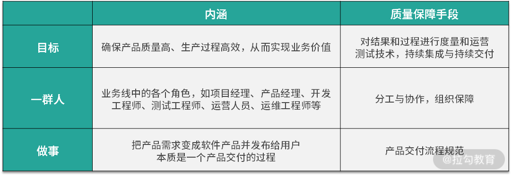</p>

<p>所以，质量保障体系是通过一定的流程规范、测试技术和方法，借助于持续集成/持续交付等技术把质量保障活动有效组合，进而形成系统化、标准化和规范化的保障体系。同时，还需要相应的度量、运营手段以及组织能力的保障。</p>

<ul>

<li><strong>体系的定义</strong></li>

</ul>

<p><strong>体系：泛指若干有关事物或某些意识按照一定的秩序和内部联系组合而成的整体，是不同系统组成的系统。</strong></p>

<p>听起来比较抽象，以项目管理知识体系 PMBOK 做个类比，我们都知道管理一个项目是比较复杂的，如果没有类似的经历经验，或者相关的知识和技能，你甚至都不知道应该从哪里入手、应该关注哪些方面、每个方面应该怎样推进，等等。而 PMBOK 对项目管理所需的知识、技能和工具进行的概括性描述，即项目管理的五大过程组和十大知识领域，掌握了这些体系知识，你就具备了管理任何项目所需的知识基础。</p>

<blockquote>

<p>PMBOK 是 Project Management Body Of Knowledge 的缩写， 指项目管理知识体系的意思，具体是美国项目管理协会（PMI）对项目管理所需的知识、技能和工具进行的概括性描述。它涵盖了五大过程组和十大知识领域，其中，五大过程组是启动过程、规划过程、执行过程、监控过程、收尾过程；十大知识领域是整合管理、范围管理、时间管理、成本管理、质量管理、人力资源管理、沟通管理、风险管理、采购管理、干系人管理。</p>

</blockquote>

<p>可见，当一个体系进行了比较合理的抽象和概括后，它能够把一系列的活动拆解成不同的方面，这些方面又相互协同形成一个有机的整体，做到以不变应万变。我想，这也是<strong>质量保障体系对每个测试从业者个人职业发展来讲最有价值的地方</strong>，因此一定要尽早建立质量保障体系的意识，从全局视角理解所在业务中的质量保障体系。</p>

<h3>建立质量保障体系的切入点</h3>

<p>可能你会疑问，既然质量保障体系都大同小异，那我们照着它做不就可以了吗？其实不然。这里需要先对齐一下认知：</p>

<p><strong>质量保障体系，不能为了建设而建设，一定要结合业务特点和所处阶段，它是为解决特定问题而逐渐形成的体系。</strong></p>

<p>质量保障建设的终点都一样，但业务特点和阶段不同，各个环节建设的优先顺序大不相同。实际在进行质量保障建设时，通常会从业务特点和阶段、业务目标和质量挑战两个方面去切入。</p>

<h4>业务特点和阶段</h4>

<p>业务特点和阶段决定了业务最核心的关注点，也影响了质量保障工作的侧重点，举例来说：</p>

<ul>

<li>搜索引擎类的业务，通常的特点是高并发、高存储量，且搜索内容对时效性要求较高，它属于效果类业务，线上会有各种类型的 badcase。那么，数据生产过程的质量把控、搜索效果的评测、服务可用性和并发性等尤其重要。</li>

<li>出行类业务，如用车场景等，通常的特点是业务元素多（乘客、司机、租车公司等）、业务链路长、需要线上线下协作，同时涉及金钱交易、责任归属、人身安全等，客诉问题多种多样。那么，全链路的自动化测试和性能测试、客诉响应机制等建设就比较关键。</li>

<li>金融类业务，对安全性要求极高，同时需要响应市场和政策要求。那么安全类测试、风险控制类的产品策略等方面的质量保障非常重要。</li>

</ul>

<p>另外，在业务的不同阶段（初创期、探索期、成长期、稳定期），对产品迭代和质量的要求也有所不同，这些都需要综合考虑。</p>

<h4>业务目标和质量挑战</h4>

<p>不同的业务特点对应的业务目标也有所差异，但共性都是确保产品质量高、生产过程高效，从而实现业务价值，这体现出对质量、效率、价值三个维度的要求。伴随着微服务架构下带来的各种质量挑战，满足这三个业务目标将更具难度，因此在进行质量保障建设时，要尽可能地做到如下效果：</p>

<ul>

<li>自动化。主要是为了提高研发过程（研发、测试、发布）的质量和效率，引入丰富的测试工具和技术，建立完整的持续集成和持续交付机制；</li>

<li>全流程参与。测试团队需要通过规范和工具建设等，贯穿业务价值全流程，把各团队高效组织起来共同完成业务目标；</li>

<li>泛质量管理。变被动的验证为主动的预防，变传统的代码质量管理为业务全流程的泛质量管理，在各团队中推进质量文化建设。</li>

</ul>

<h3>微服务架构质量保障体系的全景概览</h3>

<p>基于上述分析，通用的微服务质量保障体系如下：</p>

<p></p>

<p>如下是质量保障体系的关键方面，后续课程也将按如下内容展开讲解。</p>

<ul>

<li><strong>项目管理和流程规范</strong>：每个业务所做的事情都是把战略规划拆解成大的业务目标，再进一步拆解成产品需求。产品需求又经历了产品研发、运营&amp;运维、售后服务这样的业务价值全流程。没有规矩不成方圆，在这个过程中，无论项目管理还是流程规范，都是保障质量中非常关键的一环，只有建立起闭环、分工明确、易执行的流程规范，才能保证其可落地，从而形成业务价值过程的正循环。</li>

<li><strong>微服务测试技术</strong>： 除功能性之外，质量还有其他很多属性，如可靠性、易用性、可维护性、可移植性等，而这些质量属性就需要通过各种专项测试技术来保障了。同时，还有许多测试技术的首要价值在于提升测试效率。因此合理地组合这些测试技术，形成测试技术矩阵，有利于最大化发挥它们的价值。</li>

<li><strong>持续集成与持续交付</strong>：微服务的优势需要通过持续集成和持续交付的支持才能充分发挥出来，这就要求在执行测试活动时提高反馈效率、尽快发现问题。一方面要明确各种“类生产环境”在交付流程中的位置和用途差异点，保证它们的稳定可用。另一方面需要将各种测试技术和自动化技术集成起来，使代码提交后能够自动进行构建、部署和测试等操作，形成工具链，这样才能实现真正意义上的持续集成和持续交付。</li>

<li><strong>度量与运营</strong>：管理学大师德鲁克曾经说过“你如果无法度量它，就无法管理它”。要想能有效管理和改进，就难以绕开度量这个话题。业务的目标是“确保产品质量高、生产过程高效，从而实现业务价值”，在质量保障体系中，我将基于质量、效率、价值等多维度视角建立起基础的度量体系，并结合定期运营做定向改进，形成 PDCA 正向循环，促使各项指标稳步提升。同时，需要特别警惕的是，度量是一把双刃剑，这里我也会告诉一些我的经验教训和踩过的坑，避免走错方向。</li>

<li><strong>组织保障</strong>：打铁还需自身硬，质量保障是每个测试团队的天职，测试人员要努力打磨自身的质量意识和质量基本功，通过上述手段不断提升产品质量。需要注意的是，微服务架构下带来的质量挑战严峻，产品迭代飞快，离不开组织中每个参与部门的努力，而单靠测试人员已经无法保障好产品质量。正如质量大师戴明所说，质量是设计出来的，不是测试出来的。因此在组织中树立起“质量文化”至关重要。在这部分内容里，我将介绍常见的参与方的角色、职责和协作过程中的常见问题、对策，以及如何营造质量文化等内容。</li>

</ul>

<h3>总结</h3>

<p>本节课我讲解了质量保障体系的内涵，它将质量保障内化为企业的组织能力，其基本框架可以以不变应万变。无论对业务还是对测试人员自身来说都至关重要。</p>

<p>紧接着我讲解了微服务架构下的质量保障体系的切入点，列举了搜索引擎、金融产品、用车场景等业务的常见特点，从业务特点和阶段、业务目标和质量挑战等方面切入，从而影响质量保障建设的侧重点和子方向的落地优先级。</p>

<p>最后我给出了质量保障体系全景概览图，它包括项目管理和流程规范、微服务测试技术、持续集成与持续交付、度量与运营、组织保障等几个重要组成部分，并介绍了各部分的内容，它们相互协同为质量保障体系添砖加瓦。</p>

<p>你所负责的项目或业务，是否是微服务架构？如果是，它的质量保障体系是怎样的，在这其中，你自己的掌握情况如何，请写在留言区。同时欢迎你能把这篇文章分享给你的同学、朋友和同事，大家一起来探讨。</p>

<blockquote>

<p>相关链接：

https://winderresearch.com/how-to-test-in-a-microservices-architecture/

https://www.gocd.org/2018/05/08/continuous-delivery-microservices-test-strategy/

https://www.softwarecertifications.org/software-testing-body-of-knowledge/

https://developer.51cto.com/art/201911/606778.htm</p>

</blockquote>

</div>

                    </div><div class="book-post">

                        <p id="tip" align="center"></p>

                        <div><h1>10  流程规范篇：高速迭代的研发过程需要怎样的规范？</h1>

<p>上一课时，我讲解了微服务质量保障体系的全景概览。本课时我主要讲解流程规范——高速迭代的研发过程需要怎样的规范呢？</p>

<h3>业务流程阶段</h3>

<p>众所周知，产品研发是为业务服务的。在深入讲解产品研发流程之前，我们先整体看下业务流程，分为 3 个阶段：</p>

<ul>

<li>产品研发阶段。这个阶段会做市场调研，根据调研结果决定是否设计和开发新的产品（或进行产品改良），随后进行产品的研发，并将产品发布到线上。</li>

<li>日常运营/运维阶段。是指产品发布上线后，通过各类运营手段和运维手段向客户提供符合需求的、高可用的产品与服务。其中，运营常见的活动有拉新、留存、促活等。运维常见的活动有容量规划与实施、服务集群维护、系统容错管理等。</li>

<li>售后服务阶段。它主要由客服人员或售后工程师主导，包括解答或解决用户在使用产品后产生的疑问和投诉等。</li>

</ul>

<p>产品研发阶段是指需求产生到需求上线的过程，这阶段是测试人员的“主战场”。但这三个阶段共同组成了整个业务流程，要做到全流程质量保障，需要具有全局思维。即<strong>积极影响产品研发阶段</strong>，推动流程规范的制定、建设和完善；<strong>对日常运营/运维阶段和售后服务阶段保持关注</strong>，定期收集这两个阶段中遇到的问题，做好协同和配合，思考在产品研发阶段如何预防或闭环解决这类问题。</p>

<p>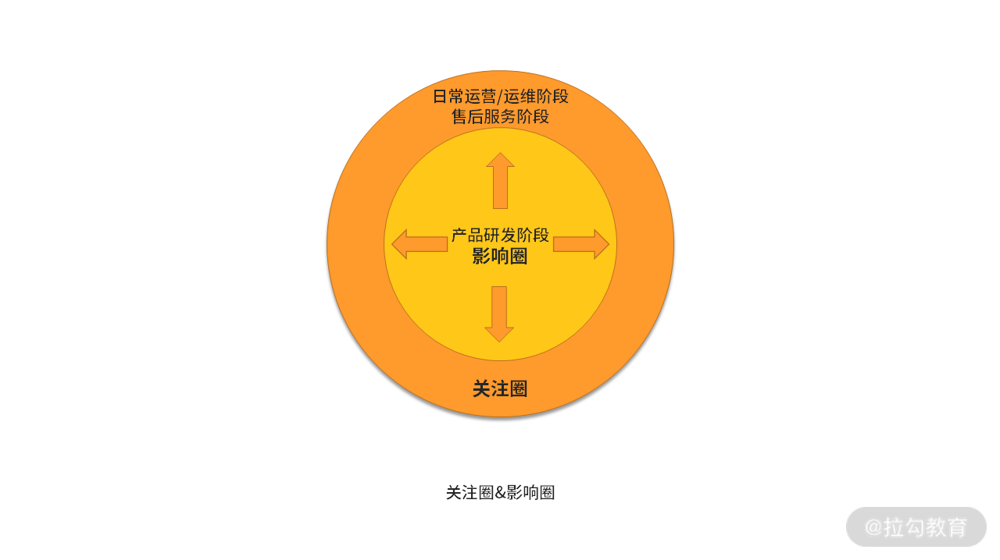</p>

<p>关注圈&amp;影响圈</p>

<h3>产品研发流程规范要点</h3>

<p>好的流程规范（Process specification) 能够保障业务稳步进行，使各部门各司其职。要想使产品研发阶段能够有条不紊地进行，就需要制定和执行流程规范。产品研发流程大体分为需求阶段、研发阶段、测试阶段、发布阶段等，每个阶段都需要有相应的流程规范，从而把需求变成软件产品并发布到线上。</p>

<h4>关键角色</h4>

<p>流程规范是用来约束有关部门和人员的，在产品研发流程中主要有如下关键角色。</p>

<ul>

<li><strong>项目经理（Project Manager，简称 PM）</strong>：通常情况，如果业务或项目设置了项目经理的角色，那么像日常的项目管理、流程规范制定等工作一般由项目经理来主导，其他协同部门有义务配合。如果没有设置项目经理这样的角色，流程规范的制定由各协同方共同商议决定，其中产品研发流程的规范绝大多数都由测试部门主导制定，一般由测试部门编写初稿，与协同部门共同商议后确定。<strong>本文中默认项目中并未设置项目经理的角色。</strong></li>

<li><strong>产品经理（Product Manager，简称 PM）</strong>：主要负责对需求进行分析、编写需求文档、组织需求文档的评审、协调项目资源、对交付结果进行验收等工作。</li>

<li><strong>研发人员（Research and Development engineer，简称 RD）</strong>：负责编写技术设计方案、编码（包括与协同方联调和自测），最终把交付物提交给测试人员进行测试。测试完成后把交付物发布到线上（对于发布环节来说，不同的公司中该环节的操作人员不一样，比如可能的发布人员有 SRE、测试人员、研发人员等，<strong>本文中，发布环节假定由研发人员操作</strong>）。</li>

<li><strong>质量保障人员（Qualtiy Assurance，简称 QA，很多时候通俗表达为测试人员）</strong>：对于当前需求来说，主要负责确保该需求的交付物符合产品需求。</li>

</ul>

<blockquote>

<p>SRE是指Site Reliability Engineer (网站可靠性工程师)。他是软件工程师和系统管理员的结合，一个SRE工程师基本上需要掌握很多知识：算法、数据结构、编程能力、网络编程、分布式系统、可扩展架构、故障排除等。</p>

</blockquote>

<h4>关键原则</h4>

<p>微服务架构下，一个业务所具有的微服务数量多，服务与服务之间存在着复杂的交互关系，不同服务分布在不同的团队中维护，一个需求通常需要多个微服务团队参与开发，基于这样的背景，在制定流程规范时会有如下考虑：</p>

<ul>

<li>各职能角色必须有 Owner 角色</li>

</ul>

<p>一个小型需求的产品研发过程，需要产品经理、研发人员和测试人员等角色的协同。一个大型需求，往往是由几个小型需求组成，同一个职能角色之间会有多个人员进行协同，因此，为了有利于协同，降低协同风险，应在每一个角色中设置 Owner 角色。基于此，Owner 角色在一定程度上需要有一些项目管理的意识、知识和技能。</p>

<ul>

<li>重评审和讨论，群策群力</li>

</ul>

<p>产品研发过程是一个脑力密集型的工作，复杂度高，<strong>大量的实践统计表明，在大规模软件开发中超过 50% 的错误来自需求分析和技术设计阶段</strong>。为了最大程度地降低风险，在其流程中需要加大评审和讨论环节的投入，通过多方审查的机制来保证过程质量、提高研发效率，所以，需求阶段和研发阶段的早期流程应有好的规范。</p>

<ul>

<li>前紧后松，提前应对风险</li>

</ul>

<p>高速迭代的研发过程，需要在研发过程的早期，前置发现更多的问题，使后面过程更顺畅，尽量达到“<strong>前紧后松</strong>”的效果，以降低研发过程的复杂度和风险。</p>

<ul>

<li>关键节点严格把控</li>

</ul>

<p>产品研发的子阶段之间体现了承上启下的作用，主导方会发生变化，所以对这些节点要严格把控，避免将风险和问题遗漏到以后解决。</p>

<h4>规范制定&amp;落地</h4>

<p>规范的制定没有特定的频率限制，通常情况下，在刚开始进行产品研发时会制定一个粗颗粒度的规范。在之后的项目过程中，出现了现有规范不能解决的问题，则会先商讨出来解决方案，再逐步把相应的流程规范明确下来。一个规范制定出来后，首先优先在测试部门内部进行评审，然后再与协同方达成共识，最后按照一定的节奏开始推广执行。</p>

<p>在将规范进行落地后，应不断跟进执行情况，针对执行不到位的地方进行分析和改进，从而形成 PDCA 循环。</p>

<blockquote>

<p>PDCA 循环是美国质量管理专家休哈特博士首先提出的，由戴明采纳、宣传，获得普及，所以又称戴明环。全面质量管理的思想基础和方法依据就是 PDCA 循环。PDCA 循环的含义是将质量管理分为四个阶段，即 Plan(计划)、Do(执行)、Check(检查) 和 Action(处理)。在质量管理活动中，要求把各项工作按照作出计划、计划实施、检查实施效果，然后将成功的纳入标准，不成功的留待下一循环去解决。这一工作方法是质量管理的基本方法，也是企业管理各项工作的一般规律。</p>

</blockquote>

<p>当然，规范的制定与落地，还需要结合人员配备情况、工具建设情况协同来看。</p>

<h4>规范如何呈现？</h4>

<p>流程规范涉及多方协作，其呈现形式的第一要点应为<strong>通俗易懂</strong>，一图胜千言，建议采用流程图的方式来展现，比如使用泳道图。</p>

<p></p>

<p>泳道图示意图</p>

<blockquote>

<p>泳道图，一种 UML 活动图，能够清晰体现出某个动作发生在哪个部门，常见工具有 StarUML、Rose、Visio 等。泳道图在纵向上是部门职能，横向是岗位（有时候横向上不区分岗位）。绘图元素与传统流程图类似，但在业务流程主体上，通过泳道（纵向条）区分出执行主体，即部门和岗位来。</p>

</blockquote>

<p>流程规范中对关键字眼或者需要重点关注的信息，需要用醒目的颜色或<strong>粗体</strong>标记出来。存放流程规范的文档要放在人人可以访问到的地方。</p>

<p>基于此，产品研发阶段的流程可以包含如下内容：</p>

<h3>产品研发阶段</h3>

<p>产品研发阶段又进一步分为需求阶段、研发阶段、测试阶段、发布阶段等。</p>

<p>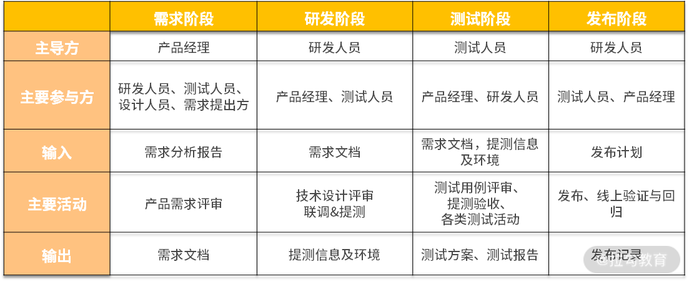</p>

<h4>（1）需求阶段：产品需求评审</h4>

<p>产品需求评审是产品研发阶段中非常重要的环节，通过它可以确保需求表述上没有歧义。需求文档通常的表现形式是产品需求文档（PRD）或市场需求文档（MRD），它们也是技术设计文档和测试设计文档的重要输入，所以这一环节是后续所有工作的基础。</p>

<p><strong>评审要点</strong></p>

<p>通常来说，需求评审必须要确保对于需求的说明没有二义性。除此之外，对于需求还应该满足如下质量要求。</p>

<ul>

<li>完备性：需求是否包含了所有的正常场景，对异常场景的考虑是否足够？UI 设计图和提示信息等是否完整、友好？</li>

<li>易理解：需求的表述是否具有二义性，是否使用了结构化的描述，流程类需求是否具有清晰的流程图？</li>

<li>可行性：需求中的功能是否具有可操作性，能否通过现有的技术实现？</li>

<li>一致性：需求是否与现有功能存在冲突，存在冲突时是否有兼容逻辑？</li>

<li>可测试性：需求中的功能要求是否有对错的评判，需求中的非功能要求是否具备验证的标准和方法？</li>

</ul>

<p>常见的需求表述问题有“同线上逻辑”“同已有逻辑”，或者一句话的概况描述，如“每种状态都需要处理”，却不说明一共有几种状态，这些都非常容易产生理解上的偏差，应该予以杜绝。</p>

<p>其中，<strong>测试人员尤其要重视需求的可测性。</strong> 早期提出可测试性方面的问题和风险，可以及早应对，从而降低项目风险。否则，到了后续的环节才发现需求不可测，这可能会导致需求变更或技术实现方案的变更，这对质量和效率的影响就太大了。</p>

<p><strong>测试人员如何参与需求评审？</strong></p>

<p></p>

<p>对于测试人员来说，在要进行需求评审或技术设计评审时，通常情况下还在另外一个需求的测试执行过程当中。测试执行过程通常需要投入较高的专注度，所以很多测试人员最最容易出现的情况是，<strong>弱化需求评审或技术设计评审环节，投入度较低，等其他需求测试完成了再花精力去熟悉它。</strong> 殊不知，这就造成了长期的恶性循环。<strong>正确的做法是，强化需求评审或技术设计评审环节，投入较多的精力，前置思考好一个需求中的重点、难点、风险点，提前应对</strong>。如果与测试执行时间有一定的冲突，则可以优先投入更多的个人时间来化解，同时在后续的测试执行过程中留有一定的 buffer，几个需求过后，你就会进入一个良性循环。对其他关键的评审环节，如技术设计评审也同样适用。</p>

<h4>（2）研发阶段：技术设计评审</h4>

<p>技术设计主要评审是否满足业务需求的功能和非功能质量属性，以及发布方案是否完备。</p>

<p><strong>评审要点</strong></p>

<ul>

<li>正确性：技术设计是否可以满足业务需求中的全部功能要求？对异常情况的考虑是否充分？</li>

<li>可测性：技术设计是否可测性？预期结果是否稳定？</li>

<li>非功能性：是否考虑了安全性、性能、稳定性、扩展性、可靠性等非功能质量属性？</li>

<li>兼容性：对不同形态和版本的终端是否兼容？对上下游的服务和数据是否兼容？</li>

<li>发布方案：部署逻辑设计是否合理？是否需要对数据结构、缓存、各类配置等进行操作？功能是否具备可回滚的能力？灰度计划是否合理？对服务的关键业务指标和技术指标是否做了监控和告警配置？应急预案有哪些，如何应对？预计的发布时间是如何安排的，需要哪些人员协同，等等。</li>

</ul>

<h4>（3）测试阶段：测试设计&amp;评审</h4>

<p>测试阶段主要分两部分，测试设计阶段和测试执行阶段，测试设计阶段主要是进行测试方案和用例的设计，测试执行阶段主要是在提测后，对测试方案或用例进行执行的过程。</p>

<p><strong>测试用例评审</strong></p>

<p>同样地，测试用例的质量关系到测试执行的质量和测试工作本身的质量。提高测试用例质量，可以通过两种方式，一是尽量将测试用例模板进行标准化；二是对用例进行评审。测试用例评审时间过早和过晚都不好，一般应在提测前 2 天左右的时间完成为宜。</p>

<p><strong>评审要点</strong></p>

<ul>

<li>测试范围：测试用例是否覆盖了业务和技术的需求，对于已有功能是否进行了必要的回归？</li>

<li>异常情况：用例是否考虑了非常规操作或其他异常情况？</li>

<li>易读性：测试用例是否包含前置条件、操作步骤和期望结果等必要信息？</li>

<li>非功能性设计：针对非功能性的需求和技术设计，测试用例是否设计充分？</li>

</ul>

<h4>（4）测试执行阶段和发布阶段</h4>

<p>如果前面的阶段完成得较好，测试执行阶段和发布阶段就会轻松很多。在这两个阶段，只需要按计划执行，出现风险时要及时并充分地暴露出来。</p>

<p>其中，测试执行阶段会涉及缺陷管理、测试总结与分析、测试报告编写等工作，这些是测试人员的看家本领，此处不再赘述。发布阶段需要前置准备发布内容、采用既定的发布策略，发布完成后实时观察线上日志、并进行线上回归。发布过程如果出现问题，切忌不要在线上解决问题，应立即回滚。线上回归完毕后，需持续关注监控指标，对告警进行及时响应。</p>

<p>这里给出了产品研发的流程图，从该图中可以看出来各个职能角色的关键活动和活动状态流转。其中，所有的“菱形”环节都是需要 PM、RD、QA 三方参与的。</p>

<p></p>

<p>产品研发阶段流程规范</p>

<h3>实践经验和认知</h3>

<p>好的流程规范能够保障业务稳步进行，使各部门各司其职。但它也不是万能的，这里给出一些实践经验和认知，供你参考：</p>

<ul>

<li>不要照搬其他团队或项目的流程规范，应充分理解每一环节的意图，制定和演化适合所在业务或项目的流程规范。因此，并非越完善越好，适合团队当前阶段的流程规范才是好的流程规范。</li>

<li>流程不可能穷举所有情况，抓住核心要点即可，除此之外，需要产品、研发、测试团队的<strong>工程师素养</strong>发挥重要补位作用。</li>

<li>人的习惯是最难改变的，在新增规范或者变更规范时，落地节奏上要柔和些，比如可以给出一个适应期，适应期过后再严格执行。</li>

<li>多年的测试经验告诉我，流程规范很容易建立，且往往会越来越庞杂，执行的过程中就会打折扣，所以需要持续运营，或者用一些工具来减轻执行负担，比如Jira、禅道、redmine等。</li>

</ul>

<h3>总结</h3>

<p>本节课我首先介绍了业务流程的三个阶段：产品研发阶段、日常运营/运维阶段、售后服务阶段。其中产品研发阶段是测试人员的主战场，所以测试人员应积极影响产品研发阶段，推动流程规范的制定、建设和完善，同时对日常运营/运维阶段和售后服务阶段保持关注。</p>

<p>其次讲解了产品研发流程中的关键角色（PM、RD 和 QA），制定规范时的关键原则，如各职能角色要有 Owner 角色，整体把控该职能角色的协同，重视评审和讨论环节，提前应对风险，做到前紧后松，并对关键节点的流转严格把控。</p>

<p>最后我阐述了产品研发阶段中的关键步骤，分别是不同阶段中的评审环节以及它们的评审要点。后面我也给出了我在流程规范方面的实践经验和认知，供你参考。</p>

<p>你所负责的项目或业务，产品研发阶段的流程规范是怎样的？你对流程规范有着怎样的理解和困惑，请写在留言区。同时欢迎你能把这篇文章分享给你的同学、朋友和同事，大家一起来探讨。</p>

<blockquote>

<p>相关链接

流程规范概念：https://wiki.mbalib.com/wiki/%E6%B5%81%E7%A8%8B%E8%A7%84%E8%8C%83

https://concisesoftware.com/software-development-process/

项目管理：https://www.pmi.org/pmbok-guide-standards</p>

</blockquote>

</div>

                    </div><div class="book-post">

                        <p id="tip" align="center"></p>

                        <div><h1>11  测试技术篇：测试技术这么多，我该如何选型？</h1>

<p>在模块一，我讲解了微服务架构下的分层测试策略，提到了五种测试方法和技术。它们可以确保微服务系统的所有层次都被覆盖到，确保测试活动本身全面且有效。除此之外，在测试领域，还有许多不同的技术，但面对繁杂的技术，我们该如何选型呢？</p>

<p>众所周知，技术是为了解决实际的痛点，测试技术也不例外。通常在进行技术选型时，会关注如下几个因素：</p>

<ul>

<li>团队的诉求

<ul>

<li>团队在质量方面遇到了怎样的痛点问题？</li>

<li>是个别测试人员遇到的问题还是团队整体的问题？</li>

</ul>

</li>

<li>技术的特性

<ul>

<li>基于痛点问题，有哪些可选的测试技术或工具？</li>

<li>该测试技术解决了什么问题？它有哪些优势和劣势？</li>

<li>技术成熟度是怎样的？如果涉及工具，使用开源工具还是商业工具？</li>

</ul>

</li>

<li>落地的成本

<ul>

<li>引入该技术需要怎样的成本？</li>

<li>职能分工：该技术的落地需要哪个团队来主导，哪些团队来参与？</li>

<li>团队是否具备落地这项技术的能力？</li>

</ul>

</li>

</ul>

<p>所以说，技术的引入不是一蹴而就的，是一个痛点分析、决策的过程。</p>

<h3>常见痛点及选型分析</h3>

<p>测试团队通常会遇到如下几个痛点：</p>

<ol>

<li>如何更早地发现问题？</li>

<li>如何衡量测试的充分性？</li>

<li>测试效果如何评估？</li>

</ol>

<p>下面我们逐一分析下这些痛点和应对的技术。</p>

<h4>（1）如何更早地发现问题？</h4>

<p>微服务的分层测试策略中的五种测试方法和技术均属于动态测试技术。动态测试技术是观察程序运行时所表现出来的状态、行为等，通过预期结果和实际结果比对的方式来发现缺陷。虽然都是有效的测试策略，但会存在以下局限性：</p>

<ul>

<li>发现问题的类别——不能发现文档类的问题；</li>

<li>发现问题的时机——绝大多数情况下必须等到程序代码实现后才能进行；</li>

<li>修复问题的成本——修复问题必须要修改代码，并进行回归验证。</li>

</ul>

<p>那么，在这种背景下可以引入<strong>静态测试技术</strong>。</p>

<blockquote>

<p>静态测试技术是指不运行被测程序本身，仅通过分析或检查源程序的语法、结构、过程、接口等来检查程序的正确性。对需求规格说明书、软件设计说明书、源程序做结构分析、流程图分析、符号执行来找错。</p>

</blockquote>

<p>静态测试技术一般分为两种：人工静态测试技术和自动静态测试技术。常见的人工静态测试有代码走查（Code Review）、各类评审（需求评审、技术方案评审、测试用例评审等）等。常见的自动静态测试有静态代码检查，最常用工具为 Sonar。</p>

<blockquote>

<p>Sonar（SonarQube）是一个开源平台，用于管理源代码的质量。Sonar 不只是一个质量数据报告工具，更是代码质量管理平台。支持的语言包括：Java、PHP、C#、C、Cobol、PL/SQL、Flex 等。</p>

</blockquote>

<p>在“流程规范篇”中，我们强调过评审环节的重要性，很多时候它们已经融入流程的制定中了。Code Review，也是很多研发团队进行分支管理时的强制流程。虽然它们发现问题的数量和深度依赖人的主观能动性和个人能力，但它们是开展后续工作的必须环节，通过它们可以更加了解系统实现，促进交流和对系统的理解，提升研发人员和测试人员的质量意识。因为流程上已经引入了这些测试，这里就不再赘述。</p>

<p>自动静态方法相较于人工静态方法，有着如下特点：</p>

<ul>

<li>提早发现问题，不实际执行代码，当代码在本地或进行提交时就可以触发静态检查；</li>

<li>对代码检查更加严格，检查规则可定制化；</li>

<li>基于规则而非业务逻辑检查代码错误；</li>

</ul>

<p>基于此，静态代码检查可以发现如下问题。</p>

<ul>

<li>变量问题：变量未初始化、变量声明了但并未使用、变量类型不匹配等；</li>

<li>冗余代码：重复代码块、僵尸代码；</li>

<li>空指针引用；</li>

<li>死循环；</li>

<li>缓冲区溢出；</li>

<li>数组越界。</li>

</ul>

<p>当然，由于是完全自动的检查，所以存在一定的误报率，需要人工对结果进行标记。</p>

<p>可见，静态代码检查能够以较低的成本自动发现各种语法和控制流方面的问题，所以它在质量保障体系中应用较广，通常也纳入持续集成和持续交付体系中了，后面课程也会提到。</p>

<h4>（2）如何衡量测试的充分性？</h4>

<p>虽然测试人员在编写测试用例时，会使用各种各样的用例设计方法（白盒测试用例和黑盒测试用例），用例也设计了很多条，但到底应该怎么判断测试过程本身是否充分呢？</p>

<p>这种情况下可以借助测试覆盖率技术。没错，测试覆盖率通常可以用来衡量测试的充分性和完整性，可以从两个层面来看覆盖率。</p>

<ul>

<li>业务层面：主要做法是通过需求文档编写测试用例，再通过多方 review 确保测试用例覆盖了所有业务功能点，因此用例的执行通过率就是功能点的覆盖率。如果所有用例执行通过了，可以认为测试覆盖了 100% 的功能点。</li>

<li>代码层面：根据代码层面的测试对象，可以分为覆盖了多少行、路径、方法、类、接口、服务等。</li>

</ul>

<p>尽管如此，对覆盖率的原理认知不正确，也会导致因使用不当而引发新的问题。</p>

<p>如果代码的覆盖率比较低，大概率是测试不充分导致的，但代码的覆盖率高，却不能证明测试是充分的，原因如下：</p>

<ul>

<li>代码覆盖率的局限性主要是不能发现需求中没有代码实现的部分，因为代码都没有实现，自然执行过程不会覆盖到它。</li>

<li>没有进行比较合理、全面的验证，说得极端一点，你蒙上眼睛操作下软件，也会覆盖一部分代码，然而这部分覆盖率没有任何意义。</li>

</ul>

<p>所以说，代码覆盖率的真正意义是体现已有代码的被执行情况，可以体现一定程度的质量信心，但其首要价值在于识别出那些没有被覆盖的部分，并针对这部分代码进行分析，从而对测试用例进行针对性地补充，或者从中发现冗余代码。</p>

<blockquote>

<p>代码覆盖（Code coverage）是软件测试中的一种度量，描述程序中源代码被测试的比例和程度，所得的比例称为代码覆盖率。</p>

</blockquote>

<h4>（3）测试效果如何评估？</h4>

<p>很多时候，一个业务既包含逻辑性的功能，也包含效果类的功能。效果类功能（如搜索引擎、导航、信息推荐等）的一大特点是你不能快速地判断出对或错，只能感性地识别是否体验好。这样的系统或产品常见的痛点是线上有很多 badcase，修复了这个 badcase，可能会导致一些新的 badcase，那么怎样较为全面地评估好坏呢？</p>

<p>对于测试团队来说，可以针对效果类功能建立起相应的评测机制。为了尽可能形象，这里我用一个找工作的例子来说明。</p>

<p>在换工作时通常会出现这样的情况：有不止一份工作机会，但也没有哪份工作有着特别明显的优势能够让你快速做出判断。出现这种情况时比较愁人，虽然最终还是在艰难中做出了选择，但更好的方式是建立起对工作机会打分的判断逻辑，大体步骤如下：</p>

<p>1.列举出你选择工作岗位时最看重的几个特征，比如是个人发展、工作强度、上班距离、薪资待遇和其他。

2.对上述特征进行权重设置，使其总分为100，比如权重设置如下：</p>

<p>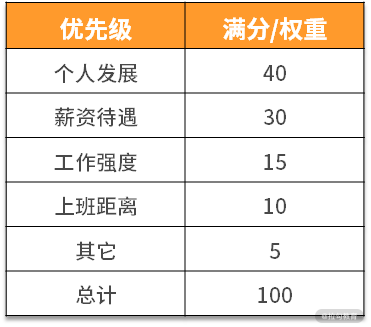</p>

<p>3.把你候选的工作，按上述特征进行打分，并计算最终得分。比如，个人发展特征的满分是40，这三家公司在个人发展方面的优势差异明显，公司C&gt;公司A&gt;公司B，最终各项得分如下，其他特征也依次打分：</p>

<p></p>

<p>4.通过上述你就可以知道这三份工作最终的得分情况。</p>

<p>由上可知，通过评测打分机制，要比你完全不进行量化更容易做决策。其中，对一家工作关注的指标和权重可以随着你职业发展的阶段进行调整，比如有的测试人员找工作时只看个人发展，其他都是浮云，那么就可以把特征设置为“个人发展+其他”，个人发展的权重可以设置为一个比较大的值，比如 90，其他的权重为 10。如果还会考虑其他特征，也可以补充进去并设置权重，所以，这个评测逻辑可以做到以不变应万变。</p>

<p>从找工作的例子中可以做下“映射”，在建设评测机制时，可以进行如下步骤。</p>

<ol>

<li>指标选择：梳理出当前评测功能的效果衡量属性，属性需要可量化。</li>

<li>权重设置：对衡量属性进行权重设置。</li>

<li>指标打分：选取足够的数据量触发功能效果，再对衡量属性进行打分。</li>

<li>效果输出：计算得出总分，从而知道被测对象或系统的“效果值”。</li>

</ol>

<p>通常情况下，建立效果评测机制的任何一步都要比找工作更加复杂（指标需要更多维、数据量更全面、更多样化），这个过程中需不断地跟产品经理、研发人员进行讨论，最终确定下来多方共识的衡量机制。</p>

<p>在实际的项目过程中，针对效果类功能，还可以进行 A/B 测试，但一般情况下， A/B 测试由研发人员来主导进行，测试人员较少能够参与到其中，这里不再赘述。</p>

<blockquote>

<p>A/B测试是为 Web 或 App 界面或流程制作两个（A/B）或多个（A/B/n）版本，在同一时间维度，分别让组成成分相同（相似）的访客群组（目标人群）随机的访问这些版本，收集各群组的用户体验数据和业务数据，最后分析、评估出最好版本，正式采用。

A/B 测试，用于验证用户体验、市场推广等是否正确，而一般的工程测试主要用于验证软硬件是否符合设计预期。</p>

</blockquote>

<p>当然，测试的痛点不限于此，测试技术也不限于此，但对技术的选型逻辑却大同小异，下面给出我在这方面的认知和理解。</p>

<h3>对技术选型的认知</h3>

<p>技术选型的本质是<strong>问题与解的匹配</strong>：先有痛点问题，再有大致的技术解决思路，最后是进行选型分析和决策。其中痛点问题通常伴随着业务和团队的发展而持续存在的，这其中的关键环节是<strong>如何知道大致的技术解决思路</strong>。这就需要具备一定的技术视野，说白了就是要在技术上“见多识广”，这就需要我们自身不断学习，打破思维的边界、拓宽自己的眼界。</p>

<p>同时需要注意的是，没有完美的测试技术，随着业务和团队的发展，需要根据成本、技术的成熟度、工具及其适用性进行选择。</p>

<p>你所负责的项目或业务，使用了哪些测试技术呢？在测试技术选型时又有哪些取舍呢？请写在留言区。同时欢迎你能把这篇文章分享给你的同学、朋友和同事，只有分享交流才会一起进步。</p>

<blockquote>

<p>相关链接：

https://www.infoq.com/articles/twelve-testing-techniques-microservices-tradeoffs/

https://tsh.io/blog/testing-microservices-strategy-and-tools/

《全程软件测试》 朱少民 著

https://insights.thoughtworks.cn/test-matrix/

Sonar：

https://www.sonarqube.org/

代码覆盖率：

https://en.wikipedia.org/wiki/Code_coverage

<a href="https://insights.thoughtworks.cn/code-coverage/">https://insights.thoughtworks.cn/code-coverage/</a>

https://insights.thoughtworks.cn/code-coverage-vs-test-coverage/

https://docs.microsoft.com/zh-cn/visualstudio/test/using-code-coverage-to-determine-how-much-code-is-being-tested?view=vs-2019</p>

</blockquote>

</div>

                    </div><div class="book-post">

                        <p id="tip" align="center"></p>

                        <div><h1>12  测试技术篇：如何提升测试效率？</h1>

<p>上一课时，我讲解了测试技术的选型。本课时我主要讲解测试技术——如何提升测试效率。</p>

<p>我们都知道，测试过程大体可以抽象为如下内容：</p>

<ul>

<li>测试设计，各类评审、测试用例编写、测试数据准备；</li>

<li>测试执行，测试用例执行、Bug 创建与跟进；</li>

<li>测试回归，回归用例的维护、回归用例的执行。</li>

</ul>

<p>针对上述内容进行以下局部优化，可以提升测试过程甚至是研发过程的效率。</p>

<ul>

<li>人员：测试人员通过学习或经验的积累获得能力的提升、招聘能力更强的测试人员。</li>

<li>时间：投入更多的个人时间（俗称加班），单纯看测试过程，效率未必提升了，但从交付周期的视角看，交付效率是提升了的。</li>

<li>过程：针对测试对象进行可测试性改造，使测试过程更顺畅；严格遵守流程规范，让整个研发过程中的事情正确地发生，减少返工和无效的沟通；进行过程质量把控，当研发过程质量提升，测试时间将大大缩短。</li>

<li>环境维护：确保测试环境稳定可用，且尽可能地仿真生产环境。</li>

</ul>

<p>上述优化项，需要测试团队持续的人力投入，因此，引入能释放人力的技术是非常必要的。</p>

<h3>释放人力的测试技术</h3>

<h4>自动化测试技术</h4>

<p>自动化测试技术指的是能自动执行软件，并进行预期结果和实际结果比对，再进一步产生测试结果或测试报告的技术。它跟人工测试相比有如下好处。</p>

<ul>

<li>效率高：自动化用例可以并发执行，且运行用例的服务器性能越好，其执行效率越高；</li>

<li>精确：测试人员也可能犯错，自动化测试用例不会；</li>

<li>可重复：自动化用例可以重复执行、昼夜不停，而人工执行基本只在工作时间进行，重复执行还会产生懈怠情绪、进而效率降低；</li>

<li>整体速度快：运行过程中不占用人力，那测试人员就可以去做其他更有价值的事情；</li>

</ul>

<p>在前面 04～08 课时讲解过微服务架构下的分层测试策略，针对不同层次的测试方法和技术都可以以自动化的测试执行起来。在实际的落地过程中，还需要根据团队和业务特点来确定自动化测试的目标，针对不同层次的设定合理的目标。</p>

<ul>

<li>通常来说，自动化测试的主要意义在于回归测试。</li>

<li>优先把最有价值（核心、高频、重要）的业务场景，用自动化运行起来。</li>

<li>把不常变化的模块用例以自动化的方式执行起来。如果被依赖服务经常出错，可以用 mock 的方式进行隔离。</li>

</ul>

<h4>流量录制与回放</h4>

<p>随着业务和系统的不断迭代，回归测试的比重将越来越高。那么，快速地编写自动化的回归测试用例能极大提升测试效率。<strong>编写回归测试用例时，测试数据的准备是消耗测试时间的一大痛点</strong>，因此，如果能够较快地准备充分的测试数据，将会极大提升回归测试效率。</p>

<p>通常来说，整个研发的交付环境既有线上（生产）环境又有线下（测试）环境，线上环境数据量庞大，线下环境数据量贫瘠。因此，把采集线上环境的数据，作为用例。这样在迭代过程中，可以在测试环境进行用例的回放和结果的比对，这样就可以知道在迭代过程中，是否会对线上目前已有的 case 造成影响。 这就需要用到流量录制与回放技术。</p>

<p>常用的工具有XCopy、jvm-sandbox-repeater、Rdebug 等，这些工具都有详细的使用说明，因此不再讲解如何使用它们。</p>

<blockquote>

<p>jvm-sandbox-repeater 是 JVM-Sandbox 生态体系下的重要模块，它具备了 JVM-Sandbox 的所有特点，插件式设计便于快速适配各种中间件，封装请求录制/回放基础协议，也提供了通用可扩展的各种丰富API。

TCPCopy 是国内各大互联网公司广泛应用 XCopy 系列工具之一，XCopy 是由网易主导，多家公司参与开发的具有在线 Server 流量复制功能的一系列开源软件的总称。XCopy 系列包括 TCPCopy、UDPCopy、MysqlCopy 等开源软件(这些软件都集成在 tcpcopy 开源项目内)。TCPCopy 是一种请求复制(复制基于 TCP 的 packets)工具，通过复制在线数据包，修改TCP/IP 头部信息，发送给测试服务器。</p>

</blockquote>

<h4>持续集成与持续交付</h4>

<p>持续集成（Continuous Integration，简称 CI ）与持续交付（Continuous Delivery，简称 CD ）虽不算是测试技术，但它的确可以在提高测试效率方面，甚至是提高交付效率方面发挥重要的作用。</p>

<p>要想实现持续集成与持续交付，需要尽可能地把几乎所有事情自动化：</p>

<ul>

<li>不适合进行自动化的内容。人工审批、人工演示等交互式的软件流程、探索性测试和UI验收测试；</li>

<li>适合进行自动化的内容。构建流程、部署流程、各个层次的测试，包括基础组件的升级和软件的配置等都可以自动化。</li>

</ul>

<p>由上可知，软件交付的整个周期中，不适合被自动化的事情，要比我们认为的少很多。</p>

<p>持续集成工具主要有 Jenkins、TeamCity、GitLab CI 等。</p>

<blockquote>

<p>Jenkins 的前身是 Hudson 是一个可扩展的持续集成引擎。Jenkins 是一款开源 CI&amp;CD 软件，用于自动化各种任务，包括构建、测试和部署软件。Jenkins 支持各种运行方式，可通过系统包、Docker 或者通过一个独立的 Java 程序。</p>

</blockquote>

<p>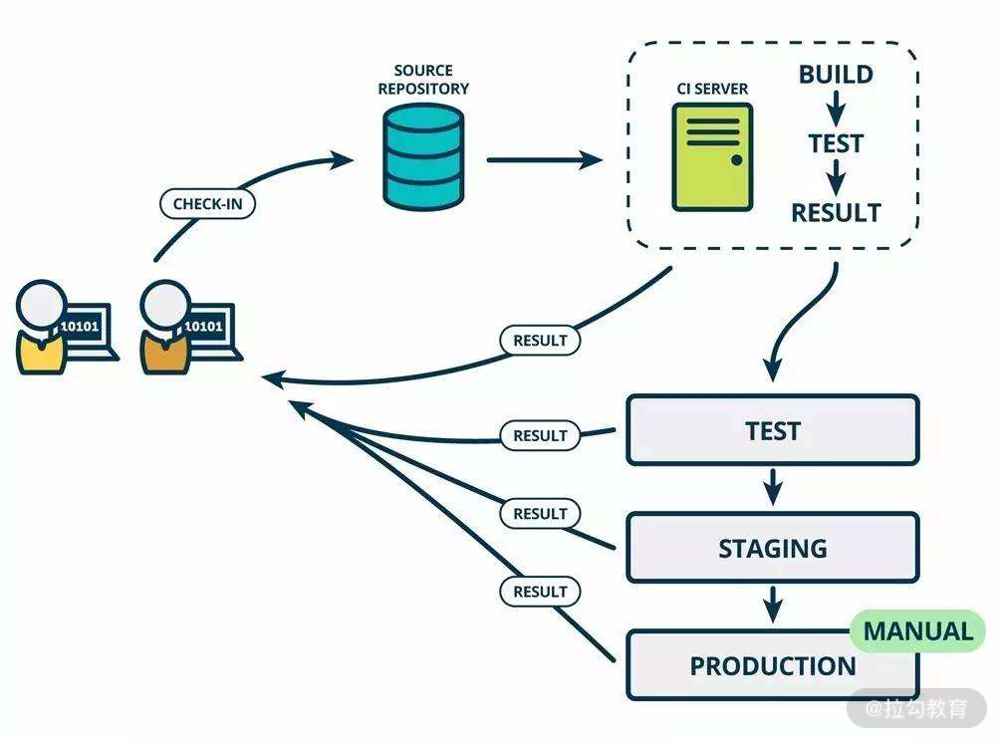</p>

<p>CI/CD 示意图</p>

<p>由上图可知，在研发人员提交代码后，CI 服务根据指定分支自动执行“编译-打包-部署”，之后执行一系列的自动化测试，每一个阶段的测试结果都反馈给开发人员，这样就可以实现“快速反馈、快速解决”的效果，提升研发和测试效率。可见，<strong>自动化测试技术可以在持续集成中应用起来。</strong></p>

<h3>认知</h3>

<p>下面是我对精准测试和自动化测试收益分析方面的认知和思考，供你参考。</p>

<h4>看清楚精准测试</h4>

<p>看了常见的提效测试技术后，你可能会提到“精准测试”。初次知道精准测试是在书籍《不测的秘密：精准测试之路》中，它提供了一种新的思路——尽量做到“不测”，从而解放人力、弥补缺失、去除冗余。精准测试，在我看来，它不是一种特定的技术，更像是一种测试方法论或思想体系。</p>

<p>对于测试人员来说，最理想的情况是，只对已更改的组件运行测试，而不是尝试进行大量的回归测试。精准测试的目标是在不降低质量标准的前提下，探寻缩减测试范围、减少测试独占时长。主要解决的是传统黑盒测试回归内容较多、耗时较长的问题，这与李小龙的截拳道如出一辙。在进行精准测试的过程中，会应用到各种其他的测试技术（ 自动化测试技术、流量录制与回放技术、质量度量、代码覆盖率分析等 ），如果只是知道这种思想，缺乏对其他测试技术的纯熟运用和大量的实践，也很难达到精准的效果。因此，<strong>从技术角度看，精准测试不是完美的，也不可能是完美的。</strong></p>

<p>其实在测试领域中似乎也没有看到对应精准测试的英文术语，也没有看到各个互联网大厂在这方面的实践经验，所以现阶段它只是一个新颖的理念，保持持续关注即可。</p>

<h4>自动化测试的收益分析</h4>

<p>自动化测试从逻辑上看是提效的绝佳方式，但不同的团队、不同的业务阶段，自动化执行的收益大大不同。如果不进行收益分析，你甚至说不清楚它到底产生了哪些收益，也就不知道应该如何调整自动化测试策略。因此，在落地自动化测试的过程中，一定要定期衡量它的 ROI（return on investment，投入产出比）。</p>

<p>针对自动化测试的 ROI，可以通过如下计算逻辑：</p>

<p><strong>ROI = 自动化提升的效率 / 自动化产生的成本= (手工用例执行时间 - 自动化用例执行时间) * 自动化用例的有效执行次数 / 自动化用例编写和维护的总成本</strong></p>

<p>进一步，自动化用例的执行时间通常不需要人工值守，所以可以忽略不计，则最终公式应为：</p>

<p><strong>ROI = (手工用例执行时间 * 自动化用例的有效执行次数) / 自动化用例编写和维护的总成本</strong></p>

<p>以上这个公式为提升自动化的测试效率指明了方向，我们可以通过改变 ROI 的计算因子，使 ROI 得到提升。</p>

<ul>

<li>手工用例执行时间：提升自动化用例的功能或代码覆盖率，使与之相对应的手工用例执行时间变长。</li>

<li>自动化用例的有效执行次数：比如，每进行一次代码提交、环境部署，都触发一次自动化用例执行，有效执行次数得以提升。</li>

<li>自动化用例编写和维护的总成本：通过工具自动生成用例，或者提升自动化用例的稳定性、运行环境的稳定性等方式可以降低自动化用例维护的总成本。</li>

</ul>

<p>自动化测试的效果除了节省时间，还可以发现缺陷。为了发现更多缺陷，需要自动化用例有一定的覆盖度，而覆盖度提升会一定程度降低用例的稳定性、进而维护成本变高。所以，需要综合两者对自动化测试进行收益分析，这样可以避免测试团队陷入常见的极端情况：缺乏结果导向，只写自动化测试用例，但对测试收益不关注。</p>

<h3>总结</h3>

<p>本节课我首先介绍了测试过程的大体内容，如测试设计、测试执行和测试回归，针对这些测试过程的改进可以提升测试效率，但对测试人员有比较明显的独占，虽然是必需的测试工作，但可以引入能够释放测试人力的测试技术。</p>

<p>接着讲解了可以用于提效且可适度释放测试人力的测试技术，如自动化测试技术可以用于回归测试阶段。在实际的落地过程中，需要根据团队和业务特点来确定自动化测试的目标，针对不同层次设定合理的目标。流量录制与回放技术采集线上环境的数据，作为用例，在迭代过程中在测试环境进行用例的回放和结果的比对，可以快速知道是否影响线上功能。持续集成与持续交付技术则把“编译-打包-部署-测试”等环节关联起来，实现“快速反馈、快速解决”的效果，提升研发和测试效率。</p>

<p>最后我分享了针对精准测试和自动化收益分析的认知，供你参考。精准测试是一种方法论，不是一种特定的技术，因此掌握精准测试不太具备实操性，跟个人能力的积累和基础建设的成熟度有很大关系，可以持续保持关注。自动化测试的收益需要持续关注，从而有针对性地提升投入产出比。</p>

<p>你有哪些提升测试效率的干货技巧或技术实践？写在留言区，也让其他同学看看，敬仰一番！</p>

<blockquote>

<p>相关链接

<a href="https://devops.com/test-better-test-faster-test-smarter/">https://devops.com/test-better-test-faster-test-smarter/</a>

<a href="https://www.softwaretestingnews.co.uk/software-testing-how-to-test-sooner-and-fix-faster/">https://www.softwaretestingnews.co.uk/software-testing-how-to-test-sooner-and-fix-faster/</a>

<a href="https://www.cnblogs.com/finer/p/11895181.html">https://www.cnblogs.com/finer/p/11895181.html</a>

流量录制与回放<a href="https://github.com/alibaba/jvm-sandbox-repeater">https://github.com/alibaba/jvm-sandbox-repeater</a>

<a href="https://github.com/didi/rdebug">https://github.com/didi/rdebug</a>

CI工具Jenkins<a href="https://www.jenkins.io/zh/">https://www.jenkins.io/zh/</a></p>

</blockquote>

</div>

                    </div><div class="book-post">

                        <p id="tip" align="center"></p>

                        <div><h1>13  测试技术篇：专项测试技术解决了哪些专项问题？</h1>

<p>上一课时，我讲解了可以释放人力提高效率的测试技术。本课时我主要来讲解测试技术：专项测试技术解决了哪些专项问题？</p>

<p>当提到“专项”时，通常有两种理解。</p>

<ul>

<li>某类问题非常突出，需要通过“立专项”的方式来进行集中治理。比如，在业务比较忙的阶段，对用户体验、架构设计等类型的问题没有高优解决。当问题积攒到一定程度或者业务不太忙的时候再进行“还债”。这种情况下，需要的技术可能包含多个方面，未必需要专项的测试技术进行解决。</li>

<li>业务系统出现非功能性的质量问题或隐患。通常来说，这种情况需要引入非功能测试来提升这方面的质量属性。</li>

</ul>

<p>本文主要来针对第二种进行讲解。</p>

<h3>非功能测试</h3>

<p>在本课程的模块一，我讲解了微服务架构下的分层测试策略，它们是面向功能的测试，主要用于验证功能属性符合预期。在功能属性之外，还有很多非功能的质量属性，如可靠性、可测性、可用性、可扩展性，等等。而要验证这些非功能的质量属性 ，就需要引入非功能测试技术，如性能测试、安全测试、兼容性测试、可靠性测试，等等。</p>

<p>非功能测试是一种软件测试技术，也就是我们常说的专项测试技术，用于验证系统的非功能属性，例如内存泄漏、性能、可用性或系统的健壮性。它使用非功能性的参数来测试系统，而功能性测试无法验证系统的非功能属性。非功能测试的典型示例是检查可以同时登录系统的人数。由此可知，非功能测试不会对系统的功能产生直接的业务影响，但可以在很大程度上提高用户体验和用户友好性，进而对软件质量产生更好的影响。</p>

<p>可见，非功能测试与功能测试同等重要，并且极大地影响了客户对软件应用程序的满意度。</p>

<h3>常见的专项测试技术</h3>

<p>对于微服务架构来说，非功能测试有很多，常见的有如下几类。</p>

<h4>如何找出系统性能瓶颈？——全链路压力测试</h4>

<p>对于服务端来说，性能测试尤为重要。通常情况下，会通过单接口性能测试来发现其性能问题并优化解决。常见的工具有 Apache Benchmark、Jmeter、LoadRunner 等。微服务架构下，单接口性能测试很难模拟出接近生产环境的场景和数据规模，因为**整个集群和系统的性能取决于接口的短板效应（如图短板效应）。**而短板的接口，在正常的流量下，是不会显现出来的。</p>

<p></p>

<p>短板效应</p>

<p>微服务架构下，系统及接口不是独立存在的，它们的相互调用关系复杂。当业务流量暴涨时，从网关接入层到各级后端服务都将面临巨大的请求压力，而且还受到公共资源的制约，如 CDN、网络带宽、消息队列、缓存、各类中间件、数据存储等，最终会体现为某个服务的处理能力出现瓶颈，引发宕机。当某个单点服务出现性能问题时，这种问题会快速累积放大，进而成为系统性问题，如果不及时解决，会造成雪崩效应，进一步引发整个系统集群的瘫痪。</p>

<p>这样的情况下，可以引入全链路压测，它是基于生产环境的业务场景、系统环境，模拟海量的用户请求和数据对整个业务链进行压力测试，并持续调优的过程。通过压测确定系统的基准吞吐量，找到集群的短板，快速找到特定场景下的集群服务器配比和每个系统支撑该场景所需服务器的数量。因此，全链路压测起到了两层作用，一来可以发现整个系统的服务能力瓶颈，进行针对性地优化；二来可以获取合理的服务器数量配比，针对短板服务增加机器配置或数量，用容量来换取性能，极大地节省成本。</p>

<p>现在大型互联网公司已经建立起全链路压测机制，如京东、阿里巴巴、美团、滴滴、饿了么等。他们通常会在节假日、大促之前进行全链路压测。一般来说，全链路压测平台需在接入层的请求接口进行真实流量复制（如网易开源的 TCPCopy），这样可以简化模拟数据带来的成本，将复制的流量请求引入到压力测试环境，对微服务进行施压。如果要加大压力，可通过调节 TCPCopy 的参数。在数据库存储方面，则通过影子库及影子表进行真实数据和模拟数据的隔离，影子表和生产表建立相同的表结构，通过打 tag 进行区分，便于隔离删除。</p>

<p>全链路压测工具通常需要基于业务系统进行特殊设计与开发，因此没有特定的测试工具可以直接支持，如果想了解具体实现原理，可以借鉴大型互联网公司的全链路压测方案。</p>

<h4>如何避免系统被攻击？——安全测试</h4>

<p>通常来说，因为业务的特殊性，所以安全测试尤为重要，比如金融类业务。或者公司在安全方面有足够好的基础建设（比如奇虎 360 公司），日常研发交付过程就需要进行安全测试。否则，通常情况下，开发团队的注意力大部分集中在业务功能的实现上，微服务系统的安全性相关的需求没有得到足够的明确和重视，而当业务体量逐渐增多时或出现安全类故障时才开始重视起来。</p>

<p>安全测试是以发现系统所有可能的安全隐患为出发点，通过分析系统架构，找出系统所有可能的攻击界面或入口，再进行完备的测试。安全测试需要比较高的知识和技术门槛儿，如各类型的DDoS攻防技术、安全对抗经验和数据分析溯源经验等，因而安全测试工程师一般作为一种特定的职位存在。</p>

<p>基于上述，安全测试分以下几种：</p>

<ul>

<li>有专门的安全测试团队，比如奇虎 360 公司，安全是发布流程中的一环，在发布前提交给安全团队，安全检测通过后才可以对外发布；</li>

<li>有专职的安全测试人员，专门负责所在业务的安全类测试，具体情况与上面类似；</li>

<li>邀请第三方公司进行渗透测试，渗透测试则是以成功入侵系统，证明系统存在安全问题为出发点，以攻击者的角度来看待和思考问题；</li>

<li>没有专项的安全测试，但在常规的测试过程中加入安全测试的元素，比如针对日志信息进行脱敏、对接口中的关键数据进行脱敏、避免被爬虫等。</li>

</ul>

<p>常用的安全类测试工具有 Kali linux，SQLmap、Burp Suite、Wireshark 等。</p>

<h4>如何测试“流程”？——灾难恢复测试</h4>

<p><strong>前面所说的各种测试，都是对微服务系统的测试。其实测试流程和人也同样重要</strong>，这种测试通常叫作灾难恢复测试，简称 DiRT。</p>

<p>DiRT（Disaster Recovery Testing，灾难恢复测试）是通过对系统故障进行预案和演练，看看各团队如何协同响应。它的目标是沉淀通用的故障模式，以可控的成本在线上生产环境进行重放，通过演练暴露问题，不断推动系统、工具、流程、人员能力的提升。生活中比较类似的例子则是防火演习和地震演习。</p>

<p>灾难恢复测试不仅可以检验业务应用系统处理故障的能力，也可以用于当故障发生时，快速地发现并定位故障，通知相应团队进行处理。更重要的是，完善应急预案，验证应急预案的有效性，避免预案中的情况发生。因此，灾难恢复测试并非测试人员或测试团队单方面就可以搞定的事情，它通常需要协同开发团队、DBA、SRE、运营团队、客服团队等一起参与讨论，制定出应急预案。</p>

<p>相关的工具有 Chaos Monkey 和 ChaosBlade。Chaos Monkey 是 Netflix 开发的开源工具，它可以在生产环境随机选择并关闭服务。ChaosBlade 是阿里巴巴开源的一款混沌工程工具，可实现底层故障的注入和丰富的故障场景实现，从而帮助分布式系统提升容错性和可恢复性。</p>

<h3>对专项测试技术的看法</h3>

<p>作为测试人员，不要小看非功能性测试或专项测试。在招聘网站中也很常见，一些专项测试会设置固定的岗位，薪资可观，可见其稀缺性，且如果把它们做到高精尖，可以作为你职业发展路上的核心竞争力。</p>

<p>


</p>

<h3>总结</h3>

<p>本课时我讲解了微服务架构除了具有功能的质量属性，还具有很多非功能的质量属性，如可靠性、可测性、可用性、可扩展性等，而要验证这些属性，需要引入专项测试（非功能测试）技术。常见的专项测试技术如下：</p>

<ul>

<li>全链路压力测试基于生产环境的业务场景、系统环境，模拟海量的用户请求和数据对整个业务链进行压力测试，并持续调优，以此来找到系统集群的短板，从而进行有针对性的优化，或者合理地规划服务容量，节省运维成本；</li>

<li>安全测试通过分析系统架构、对所有可能的攻击入口进行完备的测试，旨在发现系统所有可能的安全隐患点；</li>

<li>灾难恢复测试通过对系统故障进行预案和演练，确保各个团队能够按照约定好的流程做好协同响应，即测试流程和人。</li>

</ul>

<p>你接触过哪些专项测试技术，以后期望学习哪些专项测试技术，可以写在留言区，一起交流。</p>

<blockquote>

<p>相关链接

非功能性测试

<a href="https://wallencore.com/non-functional-testing-services/">https://wallencore.com/non-functional-testing-services/</a>

<a href="https://www.softwaretestinghelp.com/functional-testing-vs-non-functional-testing/">https://www.softwaretestinghelp.com/functional-testing-vs-non-functional-testing/</a>

性能测试

<a href="https://artillery.io/blog/end-to-end-performance-testing-microservices">https://artillery.io/blog/end-to-end-performance-testing-microservices</a>

阿里全链路压测：

<a href="http://jm.taobao.org/2017/03/30/20170330/">http://jm.taobao.org/2017/03/30/20170330/</a>

有赞全链路压测：

<a href="https://www.jianshu.com/p/500afba0be1e">https://www.jianshu.com/p/500afba0be1e</a>

京东全链路压测：

<a href="https://blog.csdn.net/bjo2008cn/article/details/54613583">https://blog.csdn.net/bjo2008cn/article/details/54613583</a>

饿了么全链路压测：

<a href="https://blog.csdn.net/weixin_30535043/article/details/95240374">https://blog.csdn.net/weixin_30535043/article/details/95240374</a>

滴滴全链路压测解决之道：

<a href="https://blog.csdn.net/g6u8w7p06dco99fq3/article/details/79119269">https://blog.csdn.net/g6u8w7p06dco99fq3/article/details/79119269</a>

美团全链路压测自动化实践：

<a href="https://tech.meituan.com/2018/09/27/quake-introduction.html">https://tech.meituan.com/2018/09/27/quake-introduction.html</a>

安全测试

<a href="https://insights.thoughtworks.cn/user-privacy-security/https://insights.thoughtworks.cn/security-issues-in-restful/">https://insights.thoughtworks.cn/user-privacy-security/</a>

<a href="https://insights.thoughtworks.cn/user-privacy-security/https://insights.thoughtworks.cn/security-issues-in-restful/">https://insights.thoughtworks.cn/security-issues-in-restful/</a>

灾难恢复测试工具

Chaos Monkey：<a href="https://github.com/Netflix/SimianArmy/wiki/Chaos-Monkey">https://github.com/Netflix/SimianArmy/wiki/Chaos-Monkey</a>

ChaosBlade：<a href="https://github.com/chaosblade-io/chaosblade/blob/master/README_CN.md.html">https://github.com/chaosblade-io/chaosblade/blob/master/README_CN.md.html</a>

安全测试工具

SQLmap：<a href="http://sqlmap.org/">http://sqlmap.org/</a>

Burp Suite：<a href="https://portswigger.net/burp">https://portswigger.net/burp</a>

Wireshark：<a href="https://www.wireshark.org/download.html">https://www.wireshark.org/download.html</a>

Kali Linux：<a href="https://www.kali.org/">https://www.kali.org/</a></p>

</blockquote>

</div>

                    </div><div class="book-post">

                        <p id="tip" align="center"></p>

                        <div><h1>14  CICD 篇：如何更好地利用多个“测试”环境？</h1>

<p>上一课时，我讲解了专项测试技术。本课时，我主要讲解如何更好地利用多个“测试”环境。</p>

<h3>CI/CD &amp; “测试”环境</h3>

<p><strong>CI/CD</strong></p>

<p>缩略词 CI/CD 具有几个不同的含义，CI/CD 中的“CI”始终指<strong>持续集成</strong>（Continuous Integration），它代表研发人员工作的自动化流程，<strong>目的是让正在开发的软件始终处于可工作状态，</strong> 它主要关注代码是否可以编译成功，以及是否可通过单元测试和验收测试等。即，每次当开发人员提交了新代码，CI服务器会自动对这些代码的所属服务进行构建，并对其执行全面的自动化测试。根据测试的结果，可以确定新提交的代码和原有代码是否正确地集成在一起了。如果整个过程中出现了构建失败或测试失败，也需要立即让开发人员知道并修复。如此重复这个过程，就可以确保新代码能够持续地与原有代码正确地集成。</p>

<p>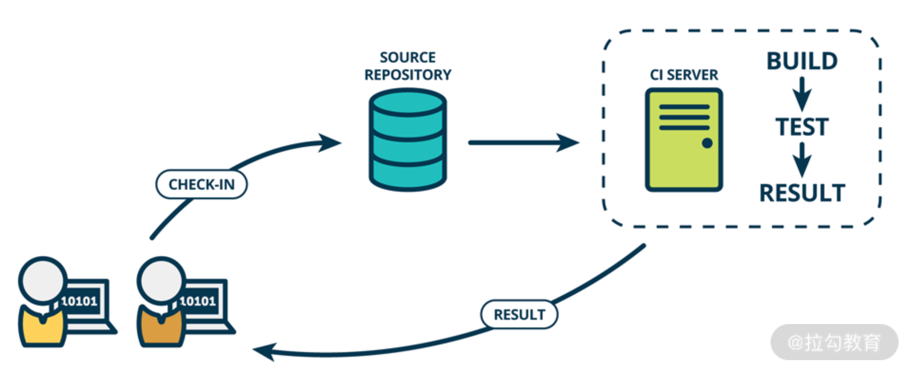</p>

<p>持续集成示意图</p>

<p>而“CD”的含义却有两种：持续交付（Continuous Delivery）、持续部署（Continuous Deployment）。持续部署和持续交付是两个特别容易混淆的概念，它们之间最为本质的区别是：<strong>持续部署是一个技术操作，而持续交付则是一个业务行为。</strong></p>

<p>我这边具体展开来说下它们两者的区别。</p>

<ul>

<li>持续交付</li>

</ul>

<p>持续交付是指所有开发人员始终让 Master 分支（也叫做主干分支或发布分支）保持可随时发布的状态，根据实际需要来判断是否进行一键式地发布。</p>

<p>持续交付主要通过如下方式来实现：开发人员在特性分支（Feature分支）上工作，这些分支存在比较短暂的时间，进行过相应的功能测试后，则可以合并到 Master 分支。如果发现引入了其他错误类型（包括缺陷、性能问题、安全问题、可用性问题等）则将测试结果反馈给开发人员，开发人员立即对问题进行解决，使主干始终处于可部署状态，如下图所示。</p>

<p></p>

<p>持续交付示意图</p>

<ul>

<li>持续部署</li>

</ul>

<p>持续部署是指，在持续交付的基础上，由开发人员或运维人员自助式地向生产环境部署优质的构建版本，甚至每当开发人员提交代码变更时，就触发自动化部署到生产环境。<strong>可见，持续交付是持续部署的前提，就像持续集成是持续交付的前提条件一样。</strong> 如下图所示。</p>

<p></p>

<p>持续部署示意图</p>

<p>由上图可知，无论 CD 是持续部署还是持续交付，<strong>CI/CD 都是将重复的、手工的工作用自动化的方式来代替</strong>。因为这样可以减少不同阶段之间等待的时间成本、降低手工操作的出错率、快速收到反馈并修改。久而久之，最终整个产品的交付周期就缩短了。下面，本课时中的 CD 统一表示持续交付。</p>

<p><strong>“测试”环境</strong></p>

<p>文章标题提到的“测试”环境，并非代表我们日常所说的测试环境（Test 环境），而是产品交付过程中的各种环境。因为在产品交付过程中，不同的环境有着不同的特性和作用，需要在其中进行不同类型、针对不同对象的测试，所以它们都能起到“支撑测试活动”的作用。</p>

<p>如上述的<strong>持续部署示意图</strong>或<strong>持续交付示意图</strong>所示，在产品交付过程中，从代码提交到发布到生产环境，会经历多个环境，如 Test 环境、Staging 环境和 Prod 环境等，这些环境在 CI/CD 方面发挥着“价值传递”的作用。</p>

<p>例如，某个业务有一个名叫 Order 的微服务，研发人员对其进行开发后，需要先将代码提交到代码仓库。然后 CI 服务器从代码仓库中将代码拉取到 CI 服务器的特定目录，再通过提前配置好的编译命令对该服务进行编译，并将结果部署到 Test 环境中。如果 Test 环境测试通过，则会进一步部署到 Staging 环境中，Staging 环境测试通过后会以自动化或手工触发的方式在生产环境中部署。由此可见，<strong>Test、Staging、Prod 三个环境对要发布的微服务进行着构建和测试，每前进一步，该微服务就离交付更近一步，离实现业务价值就更近一步。</strong></p>

<p></p>

<p>多环境实现价值传递</p>

<p>我们知道，CI/CD 的本质是产品价值的传递。因此，当代码提交后会经历编译、部署，最终形成二进制包，这些软件包会流经不同的环境进行测试。可见，<strong>环境是产品交付过程中价值传递的载体。</strong></p>

<p>为了快速交付产品价值，需要及时地在不同环境对产品进行测试，这不仅需要各自环境足够稳定，还需要在各种环境中进行各种类型的自动化测试。测试通过后，产品发布到线上，测试不通过，则快速将结果反馈给开发人员。这样便实现了**“快速响应，快速反馈”**的效果。这也是 CI/CD 的精髓。</p>

<p>为了更好地传递产品价值，接下来看下产品交付过程中各环境的说明和测试重点。</p>

<h3>各环境说明及测试侧重点</h3>

<p>Test 环境、Staging 环境、Prod 环境，这三个环境，都有其独特的属性。只有通过对其特性的分析，确定测试人员的关注点和侧重点，才能更好地利用它们。</p>

<h4>测试环境（Test）</h4>

<p>测试环境也叫 Test 环境，这是测试人员进行新功能测试的主要环境，一般由测试人员自己部署、管理和使用。</p>

<p><strong>测试环境特点</strong></p>

<p>测试环境一般会克隆生产环境的配置，如果一个服务在测试环境中无法按预期工作，就视为测试不通过，就不能把它发布到生产环境中。</p>

<p>微服务架构下，测试环境如何管理，决定了测试人员的测试效率，常见有三种情况。</p>

<ul>

<li><strong>整个测试团队共用一套测试环境</strong>：微服务架构下，当一个服务被多个服务依赖时，如果该服务不稳定，那么会影响其他大量服务无法测试。如图，当服务 B 不可用时，依赖服务 B 的其他服务也无法使用。</li>

</ul>

<p>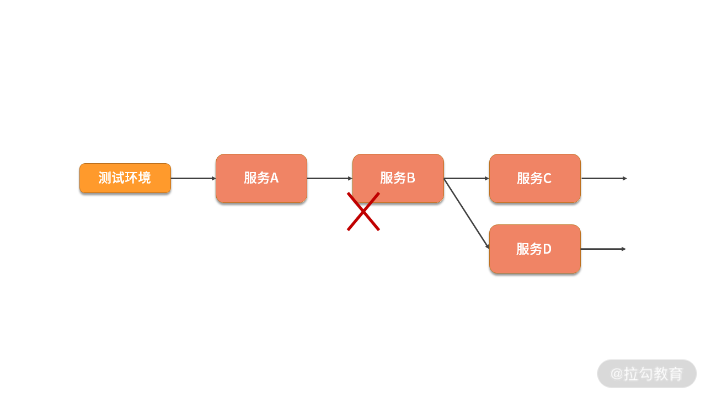</p>

<ul>

<li><strong>每个测试人员一套完整的测试环境</strong>：这种情况下虽然可以解决环境依赖问题，但软硬件成本高，环境维护成本比较高，服务器资源利用率比较低。比如，业务系统包含 40 个微服务，测试团队有 10 人，那么就需要 40*10=400 台服务器来管理测试环境。现如今，虚拟化技术盛行，虽然可以从一定程度上减少资源成本，但维护成本依然不容忽视。</li>

</ul>

<p></p>

<ul>

<li><strong>服务级复用的虚拟化技术，基于消息路由的控制，实现集群中部分服务的复用。</strong> 像阿里的“公共基础环境+特性环境”，美团的“骨干链路+泳道链路”、有赞的“基础环境（Default Service Chain）+SC 环境（Service-Chain）”都是在此方向上的有效尝试。</li>

</ul>

<p>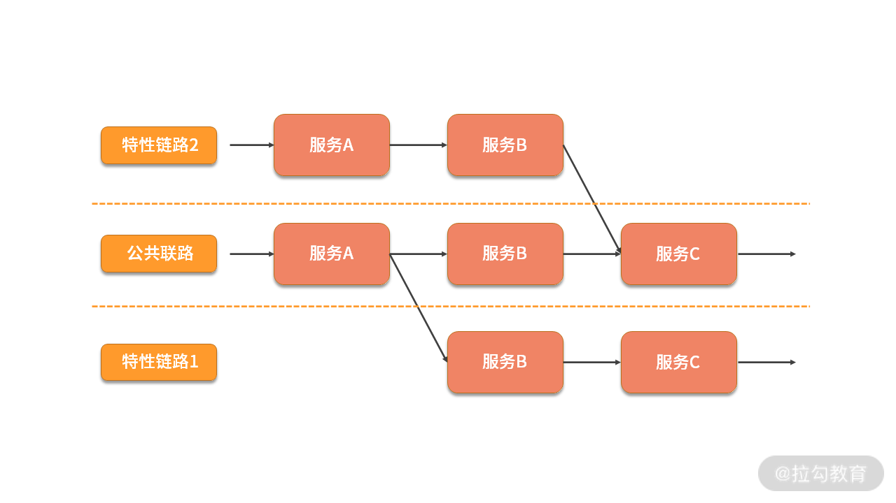</p>

<p>服务链路隔离和复用</p>

<p><strong>测试环境的测试关注点</strong></p>

<p>测试人员将在该环境进行新功能测试、回归验证 Bug等内容，这包含了微服务架构下的分层测试策略（集成测试、组件测试、契约测试、端到端测试），以及一些非功能类型的测试。</p>

<p>在测试环境测试通过后，就具备了发布的要求。但考虑到 Test 环境和生产环境有比较多的差异，所以在生产环境之前还会在预发布环境进行相关测试。</p>

<h4>预发布环境（Staging）</h4>

<p>预发布环境（Staging 环境，口语表达时经常变成 Stage 环境）是和生产环境最接近的一个测试环境。预发布环境，从名字中可以看出来，它用来进行正式发布前的预演和验证。测试环境和生产环境之间存在着某些差异，为了避免这些差异导致的缺陷漏测，预发布环境应运而生。</p>

<p>举个最常见的例子，一般在 Test 环境，没有办法测试涉及支付相关的业务功能。虽然可以通过 mock 的方式测试整体的业务流程，但依然不能确保支付功能是可用的。如果此时直接发布到生产环境却发现支付功能不可用，那将是一个业务的灾难级故障。</p>

<p>所以，引入预发布环境可以解决此类问题，这也是它需要高度仿真的缘由。因此在基础环境、配置方面与生产环境一致，差别主要是性能和数据存储。</p>

<ul>

<li>性能：虽然预发布环境的服务器性能与生产环境性能基本一致，但主要体现在预发布环境的服务器实例数通常只有 1 个或少数几台。</li>

<li>不同的公司预发布环境略有差异，比如预发布环境使用的是生产环境的数据库备份，或者预发布环境与生产环境使用同一数据库。</li>

</ul>

<p>如果预发布环境使用生产环境的数据库备份，则需要进行不定期的数据库同步，保持和生产环境的设置、数据一致性。</p>

<p>通常来讲，微服务架构下，数据库有许多库表且数据存储量大，所以以备份数据库方式的预发布环境比较少。如下图所示，两种预发布环境的区别在于使用数据库的方式。</p>

<p></p>

<p>预发布环境连接的数据库有所不同</p>

<p><strong>Staging 环境的特点</strong></p>

<p>Staging 环境的特点是高度仿真，它是正式发布前的最后一个环境，数据库同生产环境。对于“数据库同生产环境”这一特点来说，需要特别注意的是，对于同一条用户数据，应避免同时在预发布环境和生产环境对其进行变更。因为数据库缓存存在这两套环境中，可能会产生数据不一致等问题，且难以定位和修复。</p>

<p>可见，预发布环境虽然很接近生产环境，但其区别也同样明显：</p>

<ul>

<li>预发布环境中新功能为最新代码，其他功能代码和生产环境一致；</li>

<li>预发布环境和生产环境的访问域名不同；</li>

<li>预发布环境一般是研发人员和测试人员使用，而生产环境是提供给真实用户使用的。</li>

</ul>

<p><strong>Staging 环境的测试关注点</strong></p>

<ul>

<li>发布过程测试：针对发布过程的操作步骤进行预演。如果某次发布既需要更新数据库又需要发布服务，需要弄清楚这两者操作顺序的先后。

<ul>

<li>先更新数据库再发布服务：先在 Staging 环境更新数据库，再在 Staging 环境发布服务，在生产环境操作时则只需要发布服务即可（数据库已经被更新过）。这种情况比较常见。</li>

<li>先发布服务再更新数据库：先在 Staging 环境发布服务，再在生产环境发布服务，再在生产环境更新数据库。这种情况比较少见，比如原先数据库中某字段允许为空，当要把该字段设置为不允许为空时，需要先把微服务中的处理该字段的代码修改为不产生空值，再对数据库进行变更，反之数据库会报错。</li>

</ul>

</li>

</ul>

<p></p>

<ul>

<li>回归测试：在该环境进行回归测试，应尽量避免造成脏数据。发布过程需要流量来验证，建议采用 UI 层面的端到端自动化测试。</li>

<li>特殊内容测试：测试环境可能会受到一些限制，一些流程或者数据没有测试到，就可以在预发布环境进行验证，从而保证产品上线质量。</li>

</ul>

<h4>生产环境（Prod）</h4>

<p>生产环境也叫 Prod 环境，Prod 是单词 Production（生产）的简写，代表正式的对外发布服务的环境，是最终用户使用的环境。</p>

<p>生产<strong>环境特点</strong></p>

<p>生产环境有着其独有的特点，在测试过程中应特别留意：</p>

<ul>

<li>真正的用户在使用的环境，不要随意在这个环境中做测试，尤其是可能产生脏数据或可能导致服务停用的测试；</li>

<li>生产环境的系统复杂度高、存储的数据量大、服务器实例数多，大量的真实用户会产生多种多样的行为，这些都可能导致不可预期的现象，尤其是在性能或异常场景方面；</li>

<li>生产环境出现问题后，无论是定位还是解决问题都需要权限，通常需要特定的人员来操作，影响工作效率；</li>

</ul>

<p>生产<strong>环境的测试关注点</strong></p>

<p>通常情况下，为了尽量避免生产环境出现缺陷，采取的方法是在生产环境之前的“类产品环境”进行充分测试。</p>

<p>而微服务架构下，应适当调整测试策略，因为生产环境如果能进行相关的测试活动，对产品质量提升有非常正向的影响。我们可以借助敏捷领域中提到的“测试右移”思想，在生产环境中进行相关质量建设。</p>

<p>比如，微服务发布到生产环境后，除了进行必要的线上回归测试（优先针对已有功能的 checklist 进行回归、再针对本次发布的新功能进行验收测试）之外，还进行许多测试活动，而这些测试活动有助于发现此前测试过程中不容易发现的问题，主要有如下内容。</p>

<ul>

<li>线上测试</li>

</ul>

<p>线上测试有很多成熟的实践，比如业务逻辑灰度、A/B 测试等。</p>

<p>业务逻辑灰度发布是在新发布一项业务功能时，先只开放给一小部分（比如 5%）用户使用，使用一段时间反响较好或未出现缺陷时再逐步开放使用比例，重复这一过程，直到向所有用户开放使用。一般情况下，业务逻辑灰度适用于发布特大功能、重大的架构改造或发布容易引起用户投诉或舆情的功能等情况。</p>

<p>A/B 测试主要用于产品功能或算法策略的对比，版本 A 和版本 B 分别部署在不同的服务器上并开放给不同的用户使用，一般适用于收集用户反馈或行为数据来辅助产品功能设计。比如对比两种营销策略对用户留存的影响、对比两种推荐算法策略的优劣，等等。</p>

<ul>

<li>线上监控</li>

</ul>

<p>除了上述测试内容外，还需要针对生产环境进行业务和技术监控，对生产环境的数据和日志等进行分析，旨在前置发现质量风险，暴露问题。</p>

<h4>其他环境</h4>

<p>除了上述这些环境，产品交付过程中可能还有另外几种环境，但因为没有在 CI/CD 中发挥明显作用，所以只需要简单做下了解即可。</p>

<ul>

<li>本地环境（Local）</li>

</ul>

<p>研发人员的本地环境，主要用于本地代码开发、调试、自测等。每一个研发人员自己的电脑都充当一个本地环境。</p>

<ul>

<li>研发环境（Dev）</li>

</ul>

<p>研发环境也叫 Dev 环境，Dev 是 development 的简写，即研发。Dev 环境是研发人员专门用于开发、联调的环境，服务的配置比较随意，只影响开发人员本地代码配置， 为了开发调试方便，一般打开全部错误报告。该环境由研发人员使用，一般不太稳定。</p>

<ul>

<li>用户验收环境（UAT）</li>

</ul>

<p>UAT(User Acceptance Test)，用户接受度测试，即验收测试，所以 UAT 环境主要是用来作为客户体验的环境。这个阶段可以收集客户的体验反馈，对于出现的问题可反哺到研发交付过程中。</p>

<h4>各环境关系</h4>

<p></p>

<p>生产环境之外的环境，都是对生产环境的仿真。仿真程度不同，能做的测试类型和深度是不同的。而生产环境，因为它的特殊性，能做的测试也是有限的，所以需要配合使用。几个环境最大的好处就是各司其职，既不会影响开发，也不会影响测试工作。</p>

<h3>总结</h3>

<p>本节课我讲解了 CI/CD 的基本概念，和“测试”环境。CI/CD 是持续集成和持续交付的意思，“测试”环境指的是产品交付过程中的各类环境，在 CI/CD 中的起到了产品价值传递的重要作用。</p>

<p>紧接着，我对交付过程中的各种运行环境进行了讲解，包括环境说明和测试侧重点。</p>

<ul>

<li>其中测试环境（Test）是测试人员进行新功能测试的主要环境，在这个测试阶段针对新功能进行各种类型的测试、缺陷修复及回归等。</li>

<li>预发布环境（Staging）用来进行正式发布前的预演和验证，在这个测试阶段，重点进行发布顺序测试、回归测试和特殊内容测试（如支付类场景）。</li>

<li>生产环境（Prod）是真实用户使用的环境，在这个测试阶段，除了进行回归测试，还可以进行线上测试和线上监控等。</li>

</ul>

<p>这三大核心环境相关独立，各司其职，同时又相互配合。</p>

<p>那你所在的业务或项目，共有几个不同类型的环境呢？在每个环境里又进行哪些类型的测试？请写在留言区。</p>

<blockquote>

<p>相关链接：

CI/CD：https://www.redhat.com/zh/topics/devops/what-is-ci-cd

CircleCI 与 Jenkins：选择正确的 CI/CD 工具

https://www.kubernetes.org.cn/8268.html

一次Testing in Production方案的探索

https://insights.thoughtworks.cn/testing-in-production/

生产环境下的 QA

https://insights.thoughtworks.cn/qa-in-production-practice/

在阿里，我们如何管理测试环境

https://segmentfault.com/a/1190000018022987

有赞是如何高效管理自己的开发测试环境的？

https://mp.weixin.qq.com/s/Db5Jwb0QvqsEB207dhWEEg

Devops Handbook《DevOps 实践指南》简介

https://martinliu.cn/posts/devops-handbook/</p>

</blockquote>

</div>

                    </div><div class="book-post">

                        <p id="tip" align="center"></p>

                        <div><h1>15  CICD 篇：如何构建持续交付工具链？</h1>

<p>上一课时，我讲解了如何更好地利用多个测试环境。本课时，我来讲解下如何构建持续交付工具链。</p>

<h3>持续交付工具链</h3>

<p>持续交付在上一篇文章中已经提到，它是指所有开发人员始终让 Master 分支保持可随时发布的状态，根据实际需要来判断是否进行一键式发布。而工具链（Tool Chain）通常是指一系列工具，它们按照一定的逻辑顺序运行，最终完成一件比较复杂的事情。</p>

<p>因此，持续交付工具链是帮助我们把持续交付进行落地的工具集合或自动化平台，它可以固化产品交付过程中的各个环节，实现自动化地构建、部署、测试、输出报告等工作。如下图所示。</p>

<p></p>

<p>持续交付示意图</p>

<p><strong>构建持续交付工具链需要考虑哪些内容？</strong></p>

<p>通过上面的描述，不难看出，构建持续交付工具链涉及如下工作。</p>

<ul>

<li>基础设施盘点：持续交付包含了产品交付过程的方方面面，因此需要盘点清楚在整个公司或项目里，现有的研发基础设施是怎样的，如何做代码和配置的管理，各个环境如何管理，构建和部署在多大程度上实现了自动化，测试阶段是如何流转的，有着怎样的质量目标，各种类型的自动化测试的建设情况，如何感知关键节点的变更和反馈，等等。可见，如果工具链是一座摩天大楼，那么研发基础设施就是它的地基。</li>

<li>组织支持：持续交付的建设涉及交付过程中的多个团队共同协同，所以不仅需要各部门管理层的支持，还需要一线员工有强烈的改进意愿。</li>

<li>关键过程自动化：针对上述基础设施进行盘点后，需要对其中的每一个环节尽可能地进行自动化管理，引入合适的工具或者自建工具来完成。比如，如果测试过程是纯手工测试，那么就难以在持续交付中发挥作用，因此可以把重复性的手工测试工作工具化或自动化，比如使用 Curl 或 HTTPclient 编写 HTTP 接口的自动化脚本，使用 Selenium 进行端到端测试，等等。在这个过程，要特别注意的是，尽量基于现有的研发基础进行工具化或自动化改造，持续交付涉及的环节太多了，切记不可重复造轮子，尽量和其他团队共同建设，否则太容易和其他团队形成对立的局面，最终拖垮整个工具链的建设。</li>

<li>工具的整合：最后需要用持续交付工具对上述工具或自动化设施进行整合，实现“链”的效果。</li>

</ul>

<p>现阶段持续集成和持续交付思想已经盛行起来，绝大多数的公司和团队能够认识到这种变化的重要性，因此组织方面的支持通常没有太大问题，但需要考虑落地的成本。因此，对于持续交付工具链的建设，可以借鉴常规的产品研发项目，使用小步快跑的方式，以“先有后优”的心态建设。如以下措施。</p>

<ul>

<li>规模：在落地规模上，先在小范围试点，逐渐成熟了之后再推广到更大的范围。</li>

<li>成熟度：持续交付体系的搭建几乎是永无止境的，应先实现框架，再逐步丰富或完善各个环节，使成熟度逐渐改进。</li>

</ul>

<h3>持续交付全流程：盘点与改进</h3>

<p>在产品研发交付过程中，不外乎有如下几个方面：代码&amp;配置管理、构建&amp;部署自动化、各种测试、反馈相关等内容。</p>

<h4>代码&amp;配置管理</h4>

<p>通常来说，代码用成熟的工具管理起来的成本不高，比如常见的代码管理工具 GitHub、Atlassian Stash、GitLab 等。但在配置方面，常常有比较明显的问题，需要将配置进行统一化、自动化地管理。</p>

<h4>构建&amp;部署自动化</h4>

<p>在构建方面，比较推荐的是 Maven，它的“惯例胜于配置”的原则，使你只要按它指定的方式组织代码，就可以使用一条命令执行所有的构建、部署、测试和发布任务。而且它能自动管理项目间的依赖，这对于构建持续交付来说太友好了。</p>

<p>环境部署则需要能够对测试环境、预发布环境、生产环境的修改用自动化来完成。如果你还在以手工的方式远程登录到这些环境上执行部署工作，那就太 out 了。现阶段将部署完全脚本化已不存在任何技术难度。如果需要部署多台机器，充其量就是先分发到这些机器上，再在这些机器的本地执行部署脚本。</p>

<h4>各种测试</h4>

<p>在没有持续集成和持续交付建设的团队里，测试环节通常比较滞后，且人工占比较高，这无疑给项目带来比较大的质量风险。因此，在测试环节的一个非常重要的策略是要尽可能地把各种测试过程自动化，且覆盖度和稳定性达到一定要求。</p>

<p>整个测试过程不仅有静态测试，也有动态测试。静态测试中的各类文档评审，比较难以自动化，但静态代码检查通常有现成的工具，比如最流行的 Sonar。动态测试包含了功能测试（微服务架构的分层测试）和非功能测试（性能测试、安全性测试），可以针对这些类型的测试进行自动化的改造。比如使用 Spring Cloud Contract 和 Pact 可以进行微服务的契约测试，使用 Jmeter 以非 GUI 的方式做性能测试、使用 SQLmap 检测诸如 SQL 注入的安全问题。自动化建设的投入一定要遵循“测试金字塔”，努力提升单元测试自动化的比重，同时降低端到端自动化测试用例的比重。</p>

<p>在进行自动化建设时，并不是每种测试都需要自动化，尽量只把执行过程中易出错、烦琐的步骤变成可靠且可重复的自动化步骤。比如，每次测试用户评价都需要先构造一笔真实的订单，那么构造订单和用户评价都属于操作烦琐的步骤。当然对于有些测试内容，人比机器更靠谱，手工测试必不可少，比如体验类、界面类功能等。</p>

<p>另外，在持续发布过程中，还需要在 Staging 和 Prod 环境进行回归。通常，这两个环境因为涉及线上数据库，以自动化的方式在这两个环境写入数据会有比较高的质量风险，因此可以只进行读取操作的自动化，其他内容用手工测试来完成。</p>

<p>在持续交付过程中，对自动化测试有四个关键要求。</p>

<ul>

<li>速度 ：自动化测试必须快速运行，以便在发生故障时向团队提供快速反馈。应尽可能多地使用单元测试，引入少量的端到端自动化用例，以便发现单元测试可能无法发现的故障。最后，应该少进行 UI 类的测试，因为它们花费很长的编写时间和很长的运行时间，尽管它们有时能够发现其他缺陷。</li>

<li>可靠性： 持续交付过程中运行自动化的关键在于自动化需要足够稳定。如果自动化发现了新的缺陷，那么其运行不稳定是良性的。否则，持续交付过程中自动化用例执行的频率很高，不稳定的自动化 case 会消耗掉一个测试人员太多的维护时间。</li>

<li>数量：由于每次代码或环境变更都会触发自动化测试，随着用例数不断增多，自动化用例执行的时间也在增加，因此在编写用例时要避免增加无效的 case，避免设置无效的轮询等待时长，尽可能多地捕获相关的异常。</li>

<li>维护：保持高稳定性离不开自动化测试用例的维护。</li>

</ul>

<h4>反馈相关</h4>

<p>要想能做到快速反馈，就需要关键阶段有结果并对结果进行通知。</p>

<ul>

<li>结果</li>

</ul>

<p>结果分为两种：构建或部署结果、测试结果。</p>

<ul>

<li>

<ul>

<li>构建和部署的结果相对明确，判断是否与构建和成功部署的状态匹配即可。</li>

<li>测试结果需要设置预期结果，比如测试通过率、代码覆盖率等，也可以设置不同阶段的测试目标，如代码提交后的测试、研发人员提交测试给测试人员、发布前测试等。不同阶段的测试内容也不尽相同，比如代码提交后的测试，主要是静态代码检查、分支规范检查，而提测时的检查则涉及自动部署检查、冒烟测试自动化、功能自动化测试和非功能测试自动化等内容。</li>

</ul>

</li>

<li>通知</li>

</ul>

<p>通知的方式主要通过 IM 或者邮件的方式进行，尽可能做到每一个关键步骤都有通知。对于不满足质量要求的通知，需要有更强烈的通知，比如标红的文字或者多种方式联合通知。</p>

<ul>

<li>运营</li>

</ul>

<p>只是通知还不够，很多时候一些不太好的数据需要持续的运营。比如，部署环境总是失败，阻塞了工具链的执行；提测后自动化用例执行失败较多，需要进一步查看是自动化用例稳定性问题、环境稳定性问题还是代码质量问题；这些内容都需要有量化的数据才有利于改进。</p>

<h3>工具的整合</h3>

<p>用于持续交付的工具有很多，这里不一一列举，借用<a href="http://www.jamesbowman.me/">James Bowman</a>的一张图：</p>

<p></p>

<p>除了图片中的工具，还有很多在持续交付过程中发挥作用的工具：</p>

<ul>

<li>服务发现和全局配置存储，例如 ZooKeeper 等；</li>

<li>安全管理和监视工具，例如 Fortify、Vault 等；</li>

<li>静态代码分析工具，例如循环复杂度、覆盖范围、质量、标准等；</li>

<li>编程语言，工具和框架，例如编译器、IDE 等；</li>

<li>用于测试的模拟工具，例如 Mockito 等；</li>

<li>质量管理工具，例如 Jira 等；</li>

<li>发布管理工具，例如 LaunchDarkly 等；</li>

<li>特定于云供应商的工具和工具链，例如适用于 AWS 的 Cloudformation 和 CodeDeploy 等。</li>

</ul>

<p>可以对持续交付过程的工具进行整合的工具有很多，最常用的是 Jenkins，其中尤为推崇 Jenkins 2.x 。</p>

<p>jenkins 1.0 虽然也可以实现自动化构建，但 Jenkins 2.x 的精髓是<strong>Pipeline as Code</strong>，它能将 project 中的配置信息以 steps 的方式放在一个脚本里，将原本独立运行于单个或者多个节点的任务连接起来，实现单个任务难以完成的复杂流程，形成流水式发布。</p>

<p>Jenkins Pipeline 脚本示例：</p>

<pre><code>Jenkinsfile (Declarative Pipeline)


pipeline { 


    agent any 


    options {


        skipStagesAfterUnstable()


    }


    stages {


        stage('Build') { 


            steps { 


                sh 'make' 


            }


        }


        stage('Test'){


            steps {


                sh 'make check'


                junit 'reports/**/*.xml' 


            }


        }


        stage('Deploy') {


            steps {


                sh 'make publish'


            }


        }


    }


}

</code></pre>

<p>Jenkins Pipeline 可以轻松实现如下所示的持续交付效果：</p>

<p></p>

<h3>总结</h3>

<p>本节课我首先讲解了持续交付工具链，它是帮助我们把持续交付进行落地的工具集合或自动化平台，用于固化产品交付过程中的各个环节，实现自动化地构建、部署、测试、输出报告等工作。然后讲解了构建持续交付工具链需要进行基础设施盘点、组织支持、关键过程自动化、工具的整合。</p>

<p>接着我讲解了持续交付全流程中的关键过程，如下所述。</p>

<ul>

<li>代码&amp;配置管理：代码比较容易用成熟的工具管理，配置也需要进行统一化、自动化地管理。</li>

<li>构建&amp;部署自动化：推荐使用 Maven，因为按其指定的方式组织代码后，可以实现一条命令搞定所有的构建、部署、测试和发布。另外环境部署实现脚本化也非难事。</li>

<li>各种测试：尽可能地将整个测试过程中的各种测试类型进行自动化或工具化，如使用 Sonar 进行静态代码扫描，使用 Spring Cloud Contract 和 Pact 可以进行微服务的契约测试，使用 Jmeter 以非 GUI 的方式做性能测试、使用 SQLmap 可以检测诸如 SQL 注入的安全问题，等等。</li>

<li>反馈相关：要想能做到快速反馈，就需要关键阶段有结果并对结果进行通知。其中，结果包含构建结果、部署结果和各种测试结果。通知则一般以IM或邮件方式体现。在此之外，还应对交付过程中数据进行运营和改进。</li>

</ul>

<p>最后列举出了可用于持续交付的工具，并且推荐使用 Jenkins 2.x 版本进行这些工具的整合。</p>

<p>你所负责的业务或项目，持续交付工具链是怎样建设的，实现了怎样的效果？请写在留言区里。</p>

<blockquote>

<p>相关链接：

CI 自动化测试是 DevOps 的基础

https://www.kubernetes.org.cn/7279.html

https://insights.thoughtworks.cn/devops-and-continuous-delivery/

持续交付工具链

Continuous delivery tool landscape：

<a href="http://www.jamesbowman.me/post/continuous-delivery-tool-landscape/">http://www.jamesbowman.me/post/continuous-delivery-tool-landscape/</a>

Jenkins：

<a href="https://jenkins.io/doc/book/pipeline/">https://jenkins.io/doc/book/pipeline/</a></p>

</blockquote>

</div>

                    </div><div class="book-post">

                        <p id="tip" align="center"></p>

                        <div><h1>16  度量与运营篇：如何做好质量和效率的度量与运营？</h1>

<p>管理学大师德鲁克曾说过“如果你无法衡量它，就无法管理它（If you can’t measure it, you can’t manage it）”。可见，要想有效管理某事务，就需要将它全面且有效地度量起来，而要想针对某个方面进行改进，就需要有针对性地运营。本课时我们就详细聊一聊，如何做好质量度量与运营。首先第一个要聊的问题就是，度量和运营分别是什么。</p>

<h3>度量和运营</h3>

<h4>度量</h4>

<p>软件度量就是衡量软件品质的一种手段，其根本目的是管理的需要，为项目管理者提供有关项目的各种重要信息，其实质是<strong>根据一定规则，将数字或符号赋予系统、组件、过程或者质量等实体的特定属性，即对实体属性的量化表示，从而能够清楚地理解该实体</strong>。软件度量贯穿整个软件开发生命周期，是软件开发过程中进行理解、预测、评估、控制和改善的重要载体。</p>

<p>听起来不容易理解，我们举个实际的例子。</p>

<p>在软件项目过程中，经常会听到某个测试人员小 T 有这样的“抱怨”：开发人员小 D 的开发质量太差了。又过了一段时间，小 T 反馈说小 D 的开发质量有所提升。单看这两次主观的评价，无法评判小 D 的开发质量究竟有多差，也无法评判小 D 的开发质量是不是在变好。这是因为这里提到的”开发质量“和”有所提升“都只是小 T 的主观感受，不客观，更不量化。</p>

<p>假如我们用“<strong>缺陷工时比</strong>”这个指标来度量小 D 的开发质量，则可以记录小 D 完成每一个开发任务所耗费的工时数和测试该任务所发现的缺陷数，用缺陷数/工时数可得到缺陷工时比。观测一个周期内这个数值的变化，就能知道小 D 开发每一个任务时的质量现状，以及这个周期内的变化趋势。如果小 D 想要提升开发质量，也知道具体提升的是哪个数据，从而拆解出要做的具体事情。</p>

<p>从上面的例子中也不难看出度量的价值和意义。</p>

<ul>

<li>使现状有客观的评判：度量可以告诉我们现状如何，或者具体问题所在。</li>

<li>对目标有统一的共识：对目标有共同的认识，或者具备统一的评判标准。</li>

<li>使改进更聚焦和精准：质量是个宽泛的概念，如果不能聚焦到特定的指标，则无法做到有的放矢。</li>

</ul>

<h4>运营</h4>

<p>运营，<strong>通常着眼于软件产品的全生命周期，以某一内容为核心，数据驱动，通过一系列的良性循环干预动作，最终提升该内容的某项或多项指标</strong>。</p>

<p>比如，<strong>产品运营</strong>是通过一系列人为干预动作来提升产品各维度的指标；<strong>内容运营</strong>是通过人为干预使内容从生产、加工、互动、消费直至输出形成一个良性的循环；<strong>用户运营</strong>是通过人工干预使产品和用户产生联系，从拉新、留存、促活一直到商业变现形成一个良性的闭环；<strong>活动运营</strong>是针对某一活动进行策划、执行、评估、改进的全过程项目管理。</p>

<p>可见，运营的本质是<strong>发现问题、拆解问题、解决问题的过程</strong>，它强调其人为干预动作需要形成 PDCA 正向循环。</p>

<p>本课程中"度量与运营"中的运营，与上面的运营序列不同，它是用运营的思路深入到质量保障全过程中，通过<strong>数据驱动提升质量、效率、价值等多方面的度量指标，最终实现业务价值</strong>。</p>

<p>质量是测试团队和测试人员的第一要务，因此，我们首先来看下质量度量和运营。</p>

<h3>质量度量体系</h3>

<h4>质量度量的核心指标</h4>

<p>我们知道，质量保障的目标是线上环境没有故障和缺陷，这是最终交付给真实用户的质量，即交付质量。那么，质量度量是不是只关注交付质量指标就足够了呢？答案显然是否定的。因为如果只关注交付质量，往往达不到提升交付质量的目的。比如，你每天关注线上交付质量，忙着一个又一个的项目，一段时间过后，发现线上环境的故障数和缺陷数未见减少，这时候你甚至不知道根因出在哪里，应该如何改进，现有的工作哪些要继续保持哪些要放弃，等等。</p>

<p>这是因为交付质量是<strong>滞后性指标</strong>，当你知道它时，它已经发生了。要想避免此类情况，还需要多关注并改善<strong>引领性指标</strong>。生活中的减肥的场景更能说明问题。</p>

<p>有过减肥经历的同学应该知道，减肥过程中，你通常会特别关注体重本身，经常时不时地去称量体重。观察了一段时间体重后，发现效果不好，你渐渐放弃了后续的坚持，减肥计划再一次泡汤。在这里，体重就是一个滞后性指标，当你知道体重时，之前做的减肥的改进动作都已经发生，不能再改变。而减肥的过程中，卡路里的摄入量和能量的消耗量则属于引领性指标（<strong>引领性指标通常具有两个特点：预见性和可控性</strong>）。很显然，每天摄入的卡路里-燃烧的能量=每天最终摄入的能量。只有保持这个数值在一段时间里是负数，减肥成功才有希望。</p>

<blockquote>

<p>滞后性指标：顾名思义，就是事情已经发生之后产生的数据。

引领性指标：与滞后性指标相反，是一个前置指标。</p>

</blockquote>

<p>滞后性指标只能告诉你目标是否达成，不会告诉你怎么样达成这个目标（即过程）。而引领性指标，对结果可预见，过程可控制。所以，在软件交付过程中，要从关注滞后性指标改为关注并改善引领性指标。交付过程中的过程质量则是引领性指标，按照交付阶段，产品交付过程又分为需求阶段、开发阶段、测试阶段、发布阶段，因此质量度量可以进一步细分为按如下核心指标。</p>

<p></p>

<h4>(1) 交付质量</h4>

<p>对于微服务来说，线上质量可以通过如下维度来度量。</p>

<p></p>

<p>从上述指标不难看出，保障交付质量是要努力减少线上故障和线上缺陷，降低故障级别。微服务架构线上故障几乎不可避免，那么就需要最大限度地降低线上故障的影响，比如降低线上故障的恢复时长，减少对生产环境真实用户的影响。</p>

<h4>(2) 过程质量之需求质量</h4>

<p>在产品交付过程中，需求的规划和评审是起点，所以规划质量和内容质量会间接影响到代码质量和测试质量。需求质量通常有两层理解，一是需求所涉及的研发项目的质量，这种理解比较接近整个需求开发的过程质量，二是该需求所对应的 PRD 的规划质量和内容质量，本文指的是第二种。</p>

<p>PRD 的质量可以用如下指标来衡量。</p>

<p></p>

<p>一般来说，需求质量 Bug 数应该占总 Bug 数的 5% 左右。需求评审打回的标准可以是发现 5 个逻辑类的问题。需求评审打回、需求变更、需求插入等情况，对软件过程的健康度和质量有较大危害，建议制定相对严苛的流程规范，并结合质量运营手段来应对此类情况，以减少此类情况发生。比如需求评审不通过时，需求文档的作者需要向相关人员发送重新评审的申请邮件，并针对当次打回情况做改进分析。</p>

<h4>(3) 过程质量之开发质量</h4>

<p>我们在工作中，经常会反馈开发质量差的问题，但是有多差、差在哪里，又很难说清楚。常见的开发质量指标有：</p>

<p>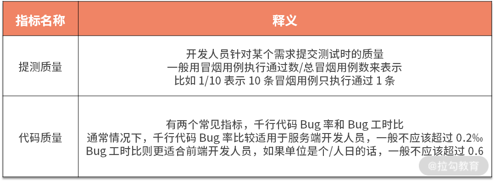</p>

<p>一般情况下，提测质量等于 1 才符合预期，即 15/15、12/12 等，因为只要有 1 条冒烟用例执行不通过，则可以进行提测打回。你可能会好奇，既然有 1 条执行不通过就提测打回，那么是不是就不用执行后续用例了，直接记录提测打回数为 1 不是更好吗？这是因为，即使提测打回的情况下，比如提测质量是 1/15 还是 13/15，还是有很大区别的，这也是为了后续更好地进行质量分析和运营。</p>

<h4>(4) 过程质量之测试质量</h4>

<p>质量度量过程中，测试团队和人员自身的测试质量也需要额外重视，常见的指标有：</p>

<p>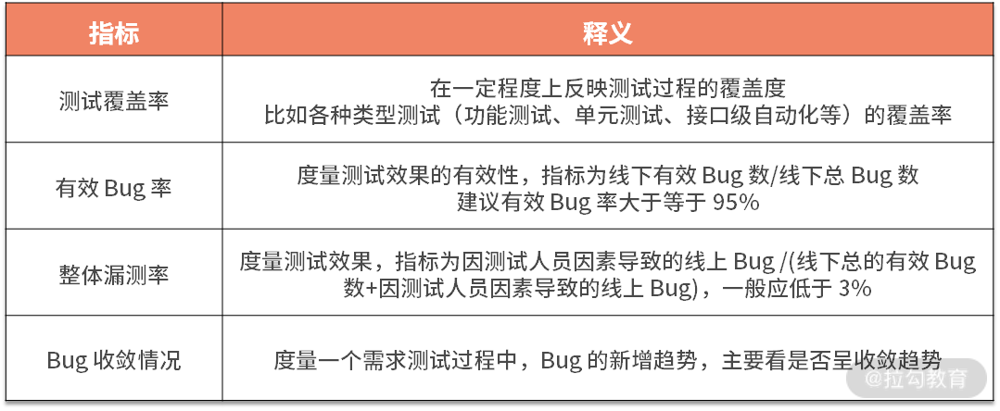</p>

<h4>(5) 过程质量之发布质量</h4>

<p>发布环节直接操作线上环境，是非常关键的一个环节，它的质量不容忽视。所以，需要特别留意发布类的相关指标，常见的有：</p>

<ul>

<li>构建失败率，在一个特定的时间段内，构建失败次数占总构建次数的比率，反映了构建的质量；</li>

<li>发布回滚率，在一个特定时间段内，回滚次数占总发布数的比率；</li>

<li>非发布时间发布次数，指不同的业务有着不同的高峰时间段，比如外卖业务高峰时间段是一日三餐时，所以发布时间应该尽可能避开业务高峰时段。如果没有合理的原因，又没有避开业务高峰期时，可以记录为一次非发布时间发布。</li>

</ul>

<p>通常情况下，构建失败率和发布回滚率应该控制在 1% 以内，所以每一次发布失败和发布回滚都值得深入分析。非发布时间发布，很容易造成线上故障，且由于处于业务高峰时段，出现故障时容易出现“雪崩效应”，造成的业务影响难以估量，因而应予以杜绝非发布时间发布线上服务。</p>

<h4>质量度量实践认知</h4>

<p>在进行度量的过程中，我也走过不少弯路，踩了坑，产生了一些经验和认知，这里分享给你。</p>

<ul>

<li>质量度量指标一定要符合 SMART 原则，否则它充其量是一个愿景，不可落地。</li>

</ul>

<blockquote>

<p>SMART原则构成：

指标必须是具体的（Specific）；

指标必须是可以衡量的（Measurable）；

指标必须是可以达到的（Attainable）；

指标是要与其他目标具有一定的相关性(Relevant)；

指标必须具有明确的截止期限（Time-bound）。</p>

</blockquote>

<ul>

<li>质量度量是质量现状的镜子，要想改变现状，首先要接受现状。</li>

<li>追求单一或局部指标的提升比较容易，但很容易产生扭曲行为，构建指标体系并整体提升才是正确的路。比如，要想降低千行代码 Bug 率，可以在不增加 Bug 数量的前提下，有意稀释代码，这样该指标肯定能降低，但没有任何意义，自欺欺人罢了。</li>

<li>度量指标的确定，要与相关方达成共识，自上而下认可它们。质量不是测试团队自己的事情，需要产品研发相关方共同的努力。如果制定了一个度量指标，需要相关方提升它，但相关方并不认可它，就容易产生太多无效沟通和扯皮。</li>

</ul>

<p>另外，《精益软件度量》提道：度量是把双刃剑，具有极强的引导性。度量指标会激励团队重视并改善能够度量的元素，也会导致你忽视无法度量的元素，并使得问题进一步恶化。</p>

<h3>质量运营</h3>

<p>质量运营的目的是质量改进，质量度量是其着陆点，因为形成了多维度的质量度量体系，所以当出现质量痛点或质量隐患时，可以比较容易在度量指标上得以体现。质量运营是基于质量痛点进行分析，找到可能的解决方案，制定规划并推进，对其进行阶段性地复盘和改进。</p>

<p>我们之前一直有讲过 PDCA，它把质量运营各项工作按照作出计划、计划实施、检查实施效果，然后将成功的纳入标准，不成功的留待下一循环去解决。如下通过 PDCA 四个方面对质量运营展开说明。</p>

<h4>P（Plan）：制定改进计划</h4>

<p>质量改进计划的制定是质量改进过程的第一步，也是最为关键的一步，你可以从如下改进思路制定计划。</p>

<ul>

<li>质量痛点驱动：针对日常研发过程中出现的质量痛点问题进行复盘，分析问题所在，制定出可落地的改进方案，利用质量度量体系评估改进效果，从而闭环质量改进过程。</li>

<li>质量目标驱动：从组织管理视角定下来总体质量目标，进而拆解出各个团队在各项度量指标上的合理目标值；在日常研发过程中收集各项指标数据，针对不满足目标的团队进行定向管理和数据分析，从而制定出可落地的改进方案。</li>

</ul>

<p>通常来说，初创业务或成长期业务下，业务变化快，质量保障建设薄弱，质量痛点问题多，质量目标难以确定，这时候以质量痛点驱动为主。随着业务逐渐成熟和稳定，质量在业务中的重要性更为凸显，对质量目标的要求越来越高，这时候以质量目标驱动为主，质量痛点驱动为辅。</p>

<h4>D（Do）：实施落地计划</h4>

<p>无论采取怎样的质量改进思路，质量运营都是一个持续运转和迭代的过程，运营周期不同，目的和关注点也有较多不同，具体如下：</p>

<p>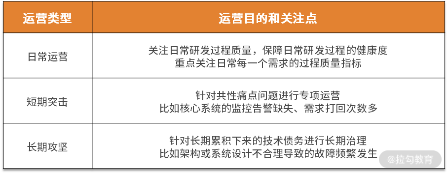</p>

<p><strong>数据收集和聚合</strong></p>

<p>有了质量度量体系，还需要针对这些指标所对应的数据进行收集和聚合，这就需要在产品研发过程的关键环节进行”埋点“，对关键过程数据和结果数据进行存储。因此，建议利用成熟的项目过程管理工具，如 Jira、TAPD 等。随着度量指标的丰富，可能还需要进行二次开发或者自建平台。</p>

<h4>C（Check）：复盘和反馈</h4>

<p>复盘是质量运营中非常关键的环节，它起到了承前启后的作用。它的最佳场所，常常体现在各种书面总结报告或复盘总结会议上，能够起到最大程度的效果触达，同时提升相关团队的质量意识和认知。报告：如，测试报告、质量周报、质量月报，等等。</p>

<ul>

<li>会议：如，周会、月会、季度总结、半年总结、大型项目复盘会，等等。</li>

</ul>

<h4>A（Action）：改进和推广</h4>

<p>基于前面的步骤，可以知道质量运营计划和改善策略是否有效，如果有效，则进行推广，反哺到日常研发过程中，尽量形成平台能力或可落地的规范。</p>

<p>比如，经过一段时间的质量度量与运营后，当各团队的 Bug 工时比都小于 0.6，那么可以和相关方团队达成共识，将标准提高到 0.4。而如果改善未达预期或完全无效，则可进一步分析原因，从而优化或改进落地计划。</p>

<h4>质量运营实践认知</h4>

<p>在这里，我也分享一些质量运营的实践认知给你，希望能帮助到你。</p>

<p>很多测试团队所做的质量运营都止步于通晒数据，而**事实上最重要的是要基于数据进行分析，帮助相关方做改进，同时跟进反馈改进的效果。**看数据谁都会看，做改进才是主要。</p>

<p>质量运营需要推动多个团队配合，应“先礼后兵”，不可轻易用向上管理的激进方式。首先，采用向上管理的方式容易使团队间产生对立情绪，影响日常协作。其次，以我多年的经验，没有哪个团队不重视质量，只是有时候它们在质量改进方面并不是足够专业，这时候反而是<strong>测试人员扮演老师和教练角色</strong>的时候，带领他们一起做分析、改进和提升。</p>

<h3>总结</h3>

<p>本节课我讲解了度量与运营的基本知识，包括度量的意义（使现状有客观的评判、对目标有统一的共识、使改进更聚焦和精准），以及运营的本质，它是<strong>发现问题、拆解问题、解决问题的过程</strong>，强调其人为干预动作需要形成 PDCA 正向循环。</p>

<p>接着我讲解了产品研发过程中针对质量可度量的核心指标，包括交付质量和过程质量。过程质量又分为需求质量、开发质量、测试质量和发布质量。在每一个维度中又有若干个具体的度量指标和含义。同时，我还给出了进行质量度量时的一些实践认知。</p>

<p>最后我讲解了产品研发过程中质量运营的 PDCA 循环。</p>

<ul>

<li>制定改进计划：采用“质量痛点驱动”或“质量目标驱动”的方式进行质量改进。</li>

<li>实施落地计划：质量运营可以分为“日常运营”、“短期突击”和“长期攻坚”三种类型，并针对度量指标所对应的数据进行收集和聚合。</li>

<li>复盘和反馈：复盘是质量运营中非常关键的环节，它起到了承前启后的作用。它的最佳场所，常常体现在各种书面总结报告或复盘总结会议上。</li>

<li>改进和推广：基于前面的步骤，判断是否有效果。如果有效，则进行推广，反哺到日常研发过程中；如果无效则继续改进。</li>

</ul>

<p>最后我给出了质量运营方面的实践认知，供你参考。</p>

<p>你所经历的业务或项目，质量度量和运营是如何进行的呢？请写在留言区里。</p>

<blockquote>

<p>相关链接

《精益软件度量》张松 著

质量度量指标设定分析：

https://www.dazhuanlan.com/2020/01/29/5e31611a378ad/

质量运营在美团点评智能支付业务测试中的初步实践：https://zhuanlan.zhihu.com/p/36714420</p>

</blockquote>

</div>

                    </div><div class="book-post">

                        <p id="tip" align="center"></p>

                        <div><h1>17  度量与运营篇：如何度量与运营效率和价值？</h1>

<p>上一课时我讲解了产品交付过程中质量的度量与运营。无论运营什么内容，其思路、流程都是适用的。那如何度量与运营效率和价值呢？这就是本课时的重点，今天我主要讲解效率的度量、效率痛点分析、价值的度量和价值闭环运营等内容。</p>

<h3>效率度量与运营</h3>

<p>效率，通俗地说，是指单位时间完成的工作量。在软件业务领域，效率高，通常意味着业务流程顺畅、体验好、用户等待时间短。比如，京东的“多<strong>快</strong>好省”，美团的“美团外卖，送啥都<strong>快</strong>”，等等。在软件交付过程中，效率指的是产品的交付效率，而交付效率高意味着产品研发团队能够尽可能地一次就把事情做对，这可以极大地缩短产品交付周期。</p>

<p>要想看清楚交付效率的现状，有针对性地提高交付效率，就需要对交付效率进行度量与运营。与质量不同的是，效率比较难以度量，它不像质量一样有多维度的指标和相对确定的目标。另外，效率是一个相对概念，不能只看某团队是不是达到了某个标准值，而是要与其他团队协同配合，实现整体的效率提升，减少并优化团队的效率瓶颈。</p>

<h4>效率度量指标</h4>

<p>因为交付效率有非常强的相对属性，所以，去度量某一个团队或阶段的效率似乎没有太大意义，投入产出比很低，不如采用相对的方式查看不同团队或阶段的相对效率。因此，可以通过如下维度进行度量。</p>

<h5>1. 交付周期比、工时比</h5>

<p>交付周期指一个需求从想法提出到发布到线上的周期跨度，这其中，按阶段又可以分为需求阶段、开发阶段、测试阶段，等等，它们属于交付周期的子集。通常使用周期比、工时比两个指标来衡量效率。其中，周期比是指交付周期中日期的实际跨度（排除节假日），工时比是指实际投入的工时，一般以 PD（Person Day 即人日）为单位。</p>

<p></p>

<p>如上图，需求阶段从想法提出、产出需求文档到完成需求评审共跨越了 10 天，因此周期为 10 天。而在这 10 天时间里，共投入了 15 PD。随后，研发人员开始进行技术设计和评审、编码、联调、自测等环节，共跨越 15 天，总投入 60 PD。与此同时，测试人员开始进行测试设计，投入 2 PD。研发人员提交测试后，测试人员开始测试执行，跨越了 5 天，投入 10 PD人力。需要特别注意的是，测试设计阶段的周期是 0 天，这是因为测试设计阶段的周期在开发阶段的周期内，从交付视角看，测试设计并没有占用额外的周期。</p>

<p>所以，对于这个需求来说，三个阶段的总周期是 10+15+5=30 天，工时投入是 15+60+2+10=87 PD。从周期上看，需求阶段、开发阶段、测试阶段的周期比为 10:15:5，从工时比维度看，需求阶段、开发阶段、测试阶段的人日比为 15:60:12。</p>

<p>通过上面的数据还可以知道，如果每个阶段只有 1 个人力投入到项目中，那么该阶段的周期数应等于工时数。周期数大于工时数时，意味着在项目交付过程中有挂起或等待的时候。工时数大于周期数，意味着利用周期内的节假日进行了赶工（也就是加班）。无论是等待还是加班，都属于非正常情况，需要深入分析，使项目交付过程正常化。同样，每个阶段有多人投入的情况也是如此，只不过涉及多人时，需要弄清楚在每个阶段，多个人是如何参与和协同的，分析复杂度也将有所提高。</p>

<p>上面是单个需求的效率基础数据，可以按上述逻辑记录和收集其他需求的数据，然后聚合分析，可以得出来整体的效率现状。通常来说，研发团队和测试团队更关注开发阶段和测试阶段的周期比和工时比。对于测试团队来说，一般会以此来定测试效率指标，先盘点清楚当前的开发测试工时比（比如为 3.5:1），再在该基础上提高一点要求（比如为 4:1 或 4.5:1）。</p>

<p>如果想查看大量需求的效率数据，用累积流量图更为直观。它按天统计出各个需求的状态，并绘制出来，形成累积流量图（横轴：日期，纵轴：需求数量）。</p>

<blockquote>

<p>累积流量图由精益思想的创始人 Don Reinertsen 和 David Anderson 引入。它是一个综合的价值流度量方法，通过它可以得到不同维度的信息，反应 WIP 的状态、项目的步调、并且快速识别出交付时间存在的风险以及瓶颈。它是追踪和预测敏捷项目的重要工具。它从不同方面描述工作：总范围、进行中和已完成的。</p>

</blockquote>

<p></p>

<p>如上图，黑线代表不同时间点，需求评审完成进入开发阶段的需求个数；红线代表不同时间点，开发人员提交给测试人员进行测试的需求个数；绿线代表测试人员完成测试，等待发布到生产环境的需求个数。同一时刻，黑线和红线的差值表示待开发任务的“堆积”，红线和绿线的差值表示待测试任务的“堆积”，反映了交付过程中的开发和测试效率瓶颈。</p>

<h5>2. 吞吐率</h5>

<p>吞吐率是单个阶段的效率衡量，它表示单位时间内，团队能够交付多少产出。产出这个词听起来比较“虚”，软件产品交付不是计件工作制，因此很难完全标准化。比如，同一个人，一天时间编写了 500 行代码，第二天编写了 300 行代码，那么它哪一天的效率更高？两个人，一天的时间分别编写了 500 行代码和 300 行代码，哪个人的效率更高？很难判断。</p>

<p>因此，建议从多维度来进行度量参考，比如对于开发人员来说，可以同时使用代码行数、实现功能点数、需求数等多个指标来度量。<strong>因为产品交付过程是以需求为单位进行价值传递，所以各个阶段可以以需求个数来作为度量单位，并且需要拉长周期来统计吞吐率，比如一个月或一个季度等。</strong></p>

<h4>效率痛点分析</h4>

<p>虽然交付效率是多个部门协同提高的，但在产品交付过程中，测试团队是最容易被吐槽存在效率问题的，常见的说辞有“测试效率不高”“测试人力不足”“测试资源阻塞”等。</p>

<p>为什么总是测试人员被吐槽效率存在问题呢？主要有两点，一是测试是交付前的最后一环，原因常常就近找，因此更容易被吐槽；二是测试人力不足或效率不高的确是存在的，但很可能不是根本原因。</p>

<p>我来举个例子：很多人迟到的时候你问他为什么迟到，他很容易说是因为今天堵车、打车不好打、天气不好等，这太容易回答了，因为这只是表面答案。而事实上的原因不应该是今天出门晚、今天起得晚、昨天睡得晚等吗？另外，在进行根本原因分析时需要 5 Why，我个人比较好奇“测试团队的资源不足”这个结论是第几个 Why 得出来的？如果是第一个 why 就得出来的，那么后面四个 why 得出了哪些结论？所以，当出现类似的反馈时，<strong>需要看结论是哪些人共识的，共识的逻辑是什么。</strong></p>

<blockquote>

<p>5 why 分析法，又称“5 问法”，也就是对一个问题点连续以 5 个“为什么”来自问，以追究其根本原因。虽为 5 个为什么，但使用时不限定只做“5 次为什么的探讨”，主要是必须找到根本原因为止，有时可能只要 3 次，有时也许要 10 次，如古话所言：打破砂锅问到底。</p>

<p>5 why 法的关键所在：鼓励解决问题的人要努力避开主观或自负的假设和逻辑陷阱，从结果着手，沿着因果关系链条，顺藤摸瓜，直至找出原有问题的根本原因。</p>

<p>经典案例：

丰田汽车公司前副社长大野耐一曾举了一个例子来找出停机的真正原因

问题一：为什么机器停了？

答案一：因为机器超载，保险丝烧断了。

问题二：为什么机器会超载？

答案二：因为轴承的润滑不足。

问题三：为什么轴承会润滑不足？

答案三：因为润滑泵失灵了。

问题四：为什么润滑泵会失灵？

答案四：因为它的轮轴耗损了。

问题五：为什么润滑泵的轮轴会耗损？

答案五：因为杂质跑到里面去了。</p>

<p>经过连续五次不停地问“为什么”，才找到问题的真正原因和解决的方法，在润滑泵上加装滤网。如果没有以这种追根究底的精神来发掘问题，他们很可能只是换根保险丝草草了事，真正的问题还是没有解决。</p>

</blockquote>

<p>基于测试资源不足、测试效率不高这样的反馈，我给出如下的分析框架。</p>

<h5>1. 人数比例概况了解</h5>

<p>效率是个平均值，看起来无关人数，其实不然。因为测试团队的人数通常比产品团队和研发团队的人数少很多，比如有很多公司的开发团队和测试团队的人数比为 8:1 甚至是 10:1。当测试人员数量极少时，效率很难提升上去，因为一个人需要兼顾的东西太多，很难面面俱到，切换成本非常高。所以，测试团队的人数以及与其他团队的人数比例可以作为一个参考数据，它们也将影响到测试团队如何开展工作。</p>

<h5>2. 测试团队自身效率分析</h5>

<p>测试团队自身的效率分析，可以从团队和个人两个视角来分析。</p>

<ul>

<li>测试团队视角</li>

</ul>

<p>测试团队视角主要查看团队人数、团队内分工、测试技术建设和测试团队的需求吞吐率等信息。</p>

<p></p>

<ul>

<li>测试人员视角</li>

</ul>

<p>测试人员视角主要查看测试人员本身的问题。</p>

<p>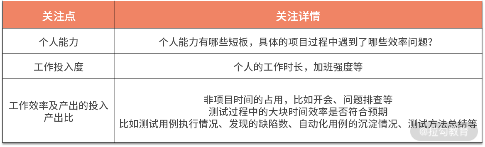</p>

<h5>3. 项目组视角</h5>

<p>分析了测试人员的效率瓶颈外，还可以扩大关注圈到产品交付过程视角，针对每个阶段进行区别分析。因为测试阶段之前的阶段出现问题，会导致测试团队花更多的力气去调整和适应，且更容易在过程中出现各种各样的非预期问题，遗患无穷。</p>

<p></p>

<p>这里说一下我自己的经历，我分析过比较多的反馈测试人员资源不足类的实例，最后发现根本问题有两个：一是测试人员的效率的确可以再提升，二是由于项目规划导致，项目规划时没有把测试人员当作是一种必备资源进行整体考虑和预排期，而是直接按顺序排时间，等到了测试人员排期时才发现不符合预期，于是想当然地产生了“测试人员人再多一些就好了”“测试人员效率再高一些就好了”的诉求。当然，每个项目和团队的问题总是千差万别，建立起分析框架，遇到问题时多维度分析，以不变应万变。</p>

<h3>价值度量与运营</h3>

<p>无论是保障质量还是提升交付效率，都是在“如何正确地进行产品交付”这个维度上，那么如何确保产品本身是正确的呢？即，产品本身传递了正确的价值，这就需要对价值进行度量。</p>

<h4>价值度量指标</h4>

<p>无论产品形态是怎样的，产品价值不外乎是业务层面的价值体现和技术方面的价值体现，如图所示：</p>

<p></p>

<p>产品价值度量指标</p>

<p>这些指标不难理解，这里不再赘述具体含义。</p>

<h4>价值闭环运营</h4>

<p>需求评审时通常会表述这个需求的背景、要实现怎样的效果，但如果没有对价值进行度量，需求文档中的这部分内容很容易一带而过。说不清楚预期结果是什么，没有衡量指标，上线后也就难以复盘，最后变成一盘糊涂账，最后只通过一版一版的需求迭代传递着“说不清楚”的价值。有了价值度量指标，应该如何把价值度量闭环运营起来呢？说起来也简单，只需要<strong>在需求评审的准入条件中加入价值衡量这个环节，需求发布后跟进复盘需求的价值达成情况。</strong></p>

<p>价值衡量包括如下几部分内容。</p>

<ul>

<li>预期目标：需要说清楚当前需求实现了怎样的价值，业务价值和技术价值的指标都有哪些，预期产生怎样的变化。</li>

<li>衡量周期：需要说清楚当前需求上线后，需要多久的时间才能进行价值的衡量，比如半个月或一个月；一般来说，如果衡量周期超过一个月，还需要说明衡量周期久的原因是什么。</li>

<li>收益获取方式：价值衡量的数据获取方式，如果是新功能，通常还需要有专门的埋点需求；如果是已有功能，应提前调研好需求收集的可行性，避免出现因为无法获取到数据而导致无法评估需求价值的情况。</li>

</ul>

<p>需求上线后，根据预先设定的衡量周期进行项目复盘，记录该需求的价值衡量结果，一般分为高于预期、低于预期和符合预期，并记录具体的结果。低于预期时，还需要进一步分析原因，制定改进计划。整个复盘结果要沉淀下来，与该需求进行关联，作为以后需求设计时的重要参考。</p>

<h3>结语</h3>

<p>产品交付过程是一个<strong>脑力密集型</strong>的过程。为了能保质、提效、使产品传递价值，以满足业务的发展诉求，需要不断搭建基础技术建设、开发或引入各类工具、迭代产品交付流程，等等。但这些事项，都只是做好“产品交付”这件事情的必要条件，绝非充分条件。</p>

<ul>

<li>从成本视角看：一个问题发现的越晚，修复的成本呈几何倍数增长，必须用<strong>精益质量</strong>的思想（好质量应该“设计”出来，不是“测试”出来）指导产品交付过程。</li>

<li>从责任分配视角看：需求、开发、测试三个阶段和角色具有一定的独立性，无论质量、效率还是价值，各自重点为其<strong>所在阶段的交付成果</strong>负责。</li>

<li>从最终交付视角看：共同努力的成果会作为整体最终交付给用户，必须以<strong>整体思维</strong>来看待产品研发组织和产品研发过程，需要彼此监督和补位。</li>

</ul>

<p>由此可见，搭建一个协作紧密的产品交付组织，构建一个良好的质量文化至关重要。你对质量文化有怎样的认识和理解，请写在留言区。</p>

<blockquote>

<p>相关链接：

《精益软件度量》 张松 著

质量运营在美团点评智能支付业务测试中的初步实践：https://zhuanlan.zhihu.com/p/36714420</p>

</blockquote>

</div>

                    </div><div class="book-post">

                        <p id="tip" align="center"></p>

                        <div><h1>18  组织保障篇：质量是设计出来的</h1>

<p>质量保障是每个测试团队的天职，但是单靠测试人员无法保障好产品质量，产品质量保障离不开组织中每个参与部门的努力，因此在组织中建设起“质量文化”至关重要。本课时，我主要讲解质量保障体系中的组织保障。</p>

<h3>协同方角色</h3>

<p>我在第 10 课时“流程规范篇：高速迭代的研发过程需要怎样的规范？”中有提到，产品研发是为业务服务的。业务流程分为 3 个阶段：产品研发阶段、日常运营/运维阶段、售后服务阶段。这三个阶段涉及许多部门角色的协作，包含但不限于产品经理、研发人员、质量保障人员、客服人员、SRE、业务运营人员、法务人员、商务人员、财务人员等。</p>

<p>下面将对在业务流程中与质量保障人员打交道最多的角色及职责进行讲解。</p>

<p>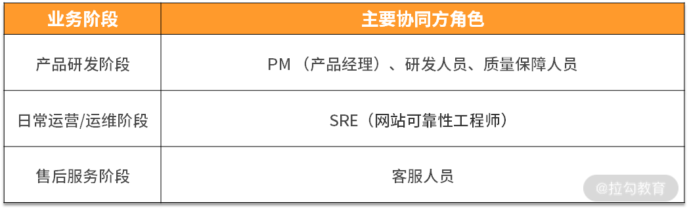</p>

<h4>（1）PM： 产品经理</h4>

<p>通常来说，需求分为业务需求和技术需求，业务需求由产品经理负责，技术需求由研发人员负责，技术需求占比较少，一般不超过 30%，所以产品经理是主要的需求负责方。</p>

<p><strong>角色职责</strong></p>

<p>产品经理（Product Manager， PM）是产品研发阶段需求的主要负责方，主要工作职责如下。</p>

<ul>

<li>需求撰写：负责某个业务方向或项目的功能、结构设计与 PRD（需求文档） 的撰写。</li>

<li>项目管理：与研发团队、业务运营团队沟通协调，完成产品的规划，保障产品实施阶段的进度与质量。</li>

<li>分析与改进：对线上产品进行监控和分析，并持续改进产品；对竞品进行持续的追踪、分析，对产品进行完善。</li>

</ul>

<p>归结为一句话来说就是，PM 主要负责对需求进行分析、编写需求文档、组织需求文档的评审、协调项目资源、对交付结果进行验收等工作。</p>

<p><strong>常见问题与对策</strong></p>

<p>在协作过程中，PM 的常见问题主要有需求质量差、临时需求多、倒排期需求多，针对这些问题，对策如下。</p>

<p><strong>常见问题：需求文档质量差</strong></p>

<p>需求文档是产品经理日常最重要的输出，在产品交付过程中使用频率极高。需求文档是需求实现前用文档讲述需求的实现思路，实现过程中按需求文档进行技术设计、研发、测试设计、测试执行，需求上线后回顾需求文档进行复盘总结。因此，提升需求文档的质量，有助于保障需求整体质量，提升研发过程效率，降低质量成本。可以通过事前、事中、事后三个阶段来应对。</p>

<ul>

<li>需求评审前：需求文档需要在需求评审的前两天时间发出来，以方便相关方提前阅读并提出问题；针对需求文档中不合理的地方提出问题，务必以书面的形式与该需求关联起来，比如说录入缺陷系统、形成需求文档的评论、批注等；需求评审前，PM 需要与主要开发人员进行预沟通，确保需求文档中方案的可行性。</li>

<li>需求评审中：需求评审过程中不针对细节进行讲解和探讨，评审时间应控制在1小时以内；需求评审时相关参与方应尽可能都在场，避免因为信息不对称造成其他问题。需求评审过程中发现的问题，同样需要以书面形式记录下来。</li>

<li>需求评审后：针对参与方提出的需求问题进行修改，产品经理修改完毕后，形成需求文档终稿；在此之后，需求文档的修改视为需求变更，需要发送邮件申请变更。</li>

</ul>

<p>针对上述对策，可以逐渐形成规范，未按规范执行的部分，需要定期 Review，以便及时纠正不规范行为。</p>

<p><strong>常见问题：临时需求多，倒排期项目多</strong></p>

<p>这类问题属于需求规划类问题。比较建议的做法是定期与 PM 针对项目规划进行沟通，了解他的阶段性规划（季度和月度），重点项目的预期上线时间点，提前管理好预期，在合理的范围内引导 PM 把需求均匀分布，避免出现一段时间忙、一段时间闲的情况。</p>

<h4>（2）研发人员</h4>

<p><strong>角色职责</strong></p>

<p>研发人员，就是我们通常所说的程序员或研发工程师，在一些公司也叫 RD（即 Research &amp; Development engineer），主要负责某系统或平台的开发和维护，使其性能、稳定性满足业务要求。具体到需求层面，研发人员负责编写技术设计方案、编码（包括与协同方联调和自测），最终把交付物提交给测试人员进行测试。测试完成后再把交付物发布到线上环境。</p>

<p><strong>常见问题：协同项目易出问题</strong></p>

<p>研发涉及多个方向的需求或项目，比较容易出现各种各样的问题。比如多方需求理解不一致、项目排期未对齐、技术方案实现有误、因依赖服务问题导致测试阻塞，等等。上述这些问题的主要原因是，各方向的产品研发测试等人员都只明确负责所在方向的交付内容，对于需求关联处和需要协同的部分，看似都负责，实际上<strong>多人同时负责等同于没有人负责。</strong></p>

<p>这种情况比较推荐的做法是借鉴 RASCI 工具的思想。比如，有且仅有一个人为整个项目的完成负责，在各子方向需求的产品经理、研发人员、测试人员中也推选一个主 R，职责是在该职责角色内起到横向主导作用。在整个项目过程中，分职能主 R 向项目主 R 虚线汇报，如下为相应的 RASCI 矩阵：</p>

<p></p>

<blockquote>

<p>RASCI 是一套用来确定责任的表格，RASCI 是指负责、批准、支持、咨询和知情。</p>

<blockquote>

<p>R：负责（Responsible）对项目或者任务的完成负责的人。

A：批准（Accountable）项目关键决策的批准人。

S：支持（Supportive）为项目完成提供资源的人。

C：咨询（Consulted）为项目提供数据或者信息的人。

I：知情（Informed）需要了解项目相关情况的人。</p>

</blockquote>

<p>该工具可以帮助减少责任重叠，产生清晰角色的工具，以矩阵形式出现。</p>

</blockquote>

<h4>（3）质量保障人员</h4>

<p>质量保障人员（Qualtiy Assurance， QA）很多时候通俗表达为测试人员，它<strong>是一种统称，在角色设置上不同的公司或项目有所区别。</strong> 比如有些公司的功能测试人员和测试开发人员是两个不同的职位，有的公司则只有 QA 一种角色，还有的公司把 QA 和 QC 分开，他们对职位的命名方式也有所不同。我听过最极端的情况是一个对日外包的项目，执行用例、提交 Bug、维护用例、编写用例、设计测试计划的测试人员分别是独立的群体，互不干涉。这些人共同保障所在项目的质量。</p>

<p>一般来说，QA 的工作涉及产品研发整个流程，且涉及每一位参与研发的人员（包括但不限于产品经理、各种开发人员、测试人员、UE/UI、运营人员、客服人员、SRE 等），但专职的质量保障工作本身不太涉及具体的软件研发细节，比较偏向于保障整个流程的质量。而 QC 则侧重于具体的测试活动，利用各种方法去检查某个功能是否满足业务需求。在之前的文章中也提到过“测试”和“质量保障”，QC 偏向于测试部分，QC+QA 则偏向于质量保障。</p>

<p><strong>在我看来，QA 应该是上述 QC 和 QA 角色职责的结合体，既要保证开发流程的质量，又要保证具体产品的质量。</strong> 许多一二线的互联网大厂，无论叫作 QA， 还是叫做测试工程师，他们的工作职责都是质量保障，而非单单是测试本身。</p>

<p><strong>常见问题：有规范，执行效果不好</strong></p>

<p>在产品交付过程中，有各种各样的规范，但总有 QA 在执行的时候打折扣。比如，明确规定了“冒烟用例只要有 1 条执行不通过，则认定为提测失败，需要提测打回重新提测”，但依然有 QA遇到此类情况时，默默地按照提测通过处理。再比如，规定了“PM 需要在产品功能上线前完成功能验收，否则可以拒绝该需求上线”，但依然有 QA 抱着侥幸心理，默许需求上线。</p>

<p>偶尔一两次不严格执行规范，不一定会导致线上问题或故障，但这样的行为隐患太大了。因为<strong>它会让协同团队人员对流程规范缺少敬畏感，不利于其他规范的落地</strong>。而且虽然表面上你的“网开一面”让协同方更“便捷”了，但他们心里会认为这个 QA 不靠谱。</p>

<p>针对这类情况，需要分析未按规范执行的根本原因。通常来说，不遵守规范的情况分两种：</p>

<ul>

<li>一种是因为需要推动别人做事儿所以心理负担比较大；</li>

<li>另一种则是为了避免麻烦，因为当出现不符合预期的情况时，按规范执行通常需要执行额外的动作，比如重新提测和验收、频繁周知、规范宣导，等等。</li>

</ul>

<p>无论属于哪种情况，不按规范执行都是不提倡的行为，应予以批评，如果情节严重需要在团队内部进行通报。但不同的情况应对措施不同。</p>

<ul>

<li>针对情况一，需要给相关 QA 进行规范的宣导和心理建设（项目规范是对事儿不对人的，正适合纠正不规范行为。规范是保障质量的必要手段，严格执行规范是在降低线上风险，本质上是在帮助协同方，不应该也没必要存在心理压力和负担）。</li>

<li>针对情况二，需要宣导规范在效率提升方面的意义（单独一个 Case，规范也许会降低效率，但长远看，规范确保事情正确地发生，既保质又提效，且规范可以传承，反复使用）。另一方面可以看下非预期情况下 QA 额外付出的成本是否有优化的空间。</li>

</ul>

<p><strong>常见问题：做测试而不是做质量保障</strong></p>

<p>测试经常被当作是质量保障的同义词，事实上，它们是两种不同的工程活动。</p>

<ul>

<li>测试是一种被动方法，它通过多种检测和调查技术来找到潜藏着产品中的缺陷，作为开发工作完成后的验证或检验工作，这种情况很低效。</li>

<li>质量保障是一种主动方法，它通过“测试左移”，将测试活动构建于整个业务流程过程中，预防为主，防治结合，通过体系化手段提升过程质量和交付质量。</li>

</ul>

<blockquote>

<p>戴明管理十四条原则 第 3 条</p>

<p>停止依靠大规模检查去获得质量（Cease dependence on mass inspection）。靠检查去提高质量，太晚了，无效而且昂贵。质量不是来自检查，而是来自植入源头，改进系统过程。检查、扔弃、降级、返工不是改进系统过程的正确方法，当质量不到位时，检查总比不检查好，而检查也只可能是唯一可用的方法，但损失已造成，有的无法弥补，有的可以返工但仍会增加开支。

1．检查是一个非常有限的工具

2．奖励检查人员多发现缺陷十分有害

3．检查要统一标准，责任要明确到个人</p>

</blockquote>

<p>一个测试团队从只做测试转型到做质量保障，跨度还是比较大的，是个系统工程。篇幅所限，这里不展开讨论。</p>

<h4>（4）SRE ：网站可靠性工程师</h4>

<p>SRE 全称是Site Reliability Engineer，即网站可靠性工程师。在不同公司， SRE 职能范围差别很多，大体有如下几种类型的职责：</p>

<ul>

<li>自动化运维平台的设计、开发、维护和优化；</li>

<li>负责应用系统的日常维护，确保其稳定、可靠、高效运行；</li>

<li>持续进行线上各种数据的运营，找到系统薄弱点，落地改进项目；</li>

<li>积累运维最佳实践，输出运维技术文档或分享。</li>

</ul>

<p>运维人员与测试人员的对接没有利益冲突点，且同属于横向支持型角色，相对来说比较融洽。但这里给出一个建议，测试人员和运维人员可以相互补充，充分发挥自身的优势。</p>

<ul>

<li>运维团队一般是公司级的技术部门，基础技术和架构方面的视野较广，且在服务可用性指标、线上历史故障、服务资源利用率、监控体系方面有比较丰富的经验。</li>

<li>测试团队一般是业务级的技术部门，对当前业务的认识和理解较为深刻，在需求、研发等交付前的过程中发挥着非常重要的作用。</li>

</ul>

<p>因此，测试人员可以与运维人员密切配合，做好各类数据的运营和最佳实践的输出和宣导，共同为服务稳定性保障做贡献。</p>

<h4>（5）客服人员</h4>

<p>客服人员的主要工作如下：</p>

<ul>

<li>通过各类媒体渠道（客服热线、邮件、产品反馈入口等）受理用户的咨询、投诉反馈或建议；</li>

<li>善于倾听并快速理解客户的问题，有效化解客户投诉情绪，提供暖心的服务，提高客户的满意度；</li>

<li>负责客户心声的收集与传递，进行数据分析，根据客户痛点推动优化服务流程、产品功能或 Bug 解决。</li>

<li>需要对产品有足够了解，善于沟通，熟悉产品各种功能。</li>

</ul>

<p><strong>常见问题：容易充当传话筒</strong></p>

<p>客服人员比较容易出现的问题是他们基本只充当了传话筒的角色，依然有很多问题流转给了产研侧，经过产研侧排查后发现不外乎客服人员对产品功能不熟悉、不具备问题排查能力等，可以通过如下方法来解决。</p>

<ul>

<li>产品功能熟悉：有新功能上线时，应提前同步给客服人员进行学习和熟悉、并针对可能产生客诉的地方进行预演和话术应对；由于客服人员的流动性比较强，所以应将产品功能操作手册及相关话术沉淀下来，用于定期的培训。</li>

<li>问题排查：提供给客服人员对基本功能或问题的排查步骤，或者提供一些系统和工具供其自助使用。这方面做得比较好的当属移动、电信这样的移动通信运营商，有问必答，基本都能当场搞定。</li>

</ul>

<h3>质量文化建设</h3>

<p><strong>什么是质量文化？</strong></p>

<p>文化是组织成员表现出来的共同的信念、价值观、态度、制度和行为模式。那么质量文化就是组成成员在质量方面表现出来的共同的价值观、态度和信念，并且每天都以这些为驱动力来对待日常工作。可见，<strong>文化不是纸面上写了什么，喊了什么口号，而是大家信仰什么，比如日常如何思考、如何做事儿。</strong></p>

<p><strong>为什么需要建立质量文化？</strong></p>

<p>可能你会问，已经有质量保障体系了，为什么还要推行质量文化建设？因为，在大多数质量保障体系推行过程中更多关注的是可见的质量标准、要求、操作程序等，这些内容给人的感觉是“组织要求我做好质量”，而忽略了不可见的质量意识、质量行为等精神层面的东西，这些内容给人的感觉是“我要为组织做好质量”，是主动的、自发的。</p>

<p>当然，质量文化建设是建立在质量保障体系之上的，没有完善的质量保障体系作基础，没有相应的质量标准和流程的约束，是无法推行好质量文化的。</p>

<p><strong>如何推行质量文化建设？</strong></p>

<p>推行质量文化建设主要有以下几个方面。</p>

<ul>

<li>领导重视：这是非常关键的一点，但也通常被忽略。因为大家会默认高层管理者肯定对质量重视啊，但要注意的是，这里的领导重视是领导层要意识到进行文化变革的必要性，意识到领导层的一言一行会影响员工对质量的态度，进而影响员工日常行为的质量。因此，在这一点上，务必跟业务负责人和各中级管理层达成共识，领导层要起到模范和支持的作用，<strong>只有“上行”才能“下效”。</strong></li>

<li>激励制度：质量文化的开展需要所在业务全体成员的共同参与，特别是一线成员。激励制度是要有机制去识别对产品或服务质量有益的行为。如质量改进方面的建议、单元测试覆盖度和稳定性达到一定标准、质量相关改进进步最大等，颁发一定的奖金和质量证书，精神奖励和物质奖励结合。</li>

<li>文化触达：一方面需要在某些会议场合宣导质量相关建设，另一方面针对在质量方面的 GoodCase 和 BadCase 进行信息触达，比如业务内部博客、阶段性的质量报告等。</li>

</ul>

<h3>结语</h3>

<p>本课时我讲解了业务流程过程中主要协同方的角色、职责、常见问题与对策，总结如下：</p>

<p></p>

<p>其次还讲解了质量文化建设相关内容，文化不是纸面上写了什么，喊了什么口号，而是大家信仰什么，比如日常如何思考、如何做事儿。质量文化的价值在于组织成员能够主动、自发地思考质量保障，做好手头的事情。另外，通过领导层重视质量、建立激励制度、质量文化触达等多种方式推行质量文化建设。</p>

<p>下一课时，我将针对软件测试新趋势进行探讨。</p>

<blockquote>

<p>相关链接

《架构即未来》 现代企业可扩展的Web架构、流程和组织

打造质量文化：<a href="https://www.infoq.cn/article/create-culture-quality">https://www.infoq.cn/article/create-culture-quality</a></p>

</blockquote>

</div>

                    </div><div class="book-post">

                        <p id="tip" align="center"></p>

                        <div><h1>19  软件测试新趋势探讨</h1>

<p>现如今，新业务形态和新技术层出不穷，它们将从方方面面影响到软件测试的趋势。今天我们就探讨下软件测试的新趋势，以及基于这些发展趋势，软件测试人员应如何打造自身的核心竞争力，提前布局和播种，为以后的职业发展添砖加瓦。</p>

<h3>软件测试趋势受哪些因素影响？</h3>

<p>在众多影响软件测试的因素中，如下几个因素比较关键。</p>

<p></p>

<p>从上表中也可以看到，前两个属于大环境带来的外部因素，后两个是测试领域的内部因素。本课时将通过以上几个方面来探讨下软件测试的变化和趋势。</p>

<h3>1. 新型业务形态和传统行业互联网化</h3>

<p>互联网的发展越来越快速，相信你通过自身的生活和工作经历不难发现，近几年不断兴起和蓬勃发展的行业有新零售、短视频、直播、区块链、物联网等，加之 2020 年的新冠疫情，使得在线教育、远程办公等业务出现了新的生机。基于这些业务发展，将会催生出许多软件业务和技术团队，相应的软件测试需求也大大增加。</p>

<p>以软件测试的视角来看，新型 业务有软件通用的部分，也有其业务特有的内容，进而影响测试人员的测试技能。以短视频 App 为例，App 的特性是通用的，而短视频的拍摄和播放则涉及其特有的内容，如特有功能（解码、预加载、清晰度测试等）、客户端性能专项（流量、耗电量、帧率等），这些特有的内容可以沉淀出专项测试能力。</p>

<p>因此，基于新型业务形态和传统行业互联网化的趋势，软件测试领域也将吸引更多的测试人才投入到这些业务领域当中。</p>

<h3>2. 新技术带来新的质量挑战</h3>

<p>近年来，新的技术和架构层出不穷，包括但不限于大数据技术、跨平台应用开发框架、微服务架构、物联网技术、机器学习、人工智能、区块链、语言识别及辅助等技术。它们使得软件更加复杂也更具交互性，这对质量保障提出了更高的要求和挑战，相应地，测试工具、技术、流程等也必然会有所改变。</p>

<h4>（1）大数据测试</h4>

<p>近几年有关大数据方面的职位主要聚焦在大数据开发工程师或大数据架构师，大数据的质量保障工作则分为两部分：一部分是大数据基础建设和数据本身的质量，由相应的开发工程师和产品经理自测解决；另一部分是与业务系统有关的部分，由负责业务测试的测试人员通过验证功能主流程或性能测试的方式保障。随着大数据基础建设的日益完善、大数据在企业中的应用范围日益增多和深入化，对大数据质量保障的需求必然成为未来趋势。</p>

<p>大数据测试人员的工作职责主要体现为如下几个方面：</p>

<ul>

<li>对各项业务数据的质量保证，以及各类数据质量测试方法探索和效率提升；</li>

<li>根据业务需求产出完备的测试方案和策略，并制定可执行落地的测试计划；</li>

<li>全方位保障数据的质量特性，包含但不限于一致性、有效性、准确性、及时性、完整性等；</li>

<li>高阶职位还需要能负责大数据测试的人才培养，使团队形成人才梯队。</li>

</ul>

<p>对于大数据测试人员来说，除了掌握通用的互联网业务的测试技能和工具外，需要掌握 Hadoop、Spark、Hive 等常用大数据技术，并具有一定的数据分析技能和相关经验、仿真测试经验，如果有相关业务的大数据测试经验则更佳。</p>

<h4>（2）基于跨平台应用开发框架的测试</h4>

<p>我们知道，移动端分为 iOS 和 Android 两个系统，两个系统使用不同的编程语言和技术栈。为了提高研发效率，跨平台应用开发框架（如 RN 和 Flutter）应运而生，有了这项技术，同样一份代码可以同时生成 iOS 和 Android 两个高性能、高保真的应用程序。</p>

<p>研发工程师的资源节省了下来，效率几乎翻倍，但测试人员的测试效率并未提升，反而可能更低了（已有功能接入该框架时，需要拉长周期逐步改造，改造期间，测试人员需要同时兼顾测试两种方案的功能）。因此，如何提升移动端的测试效率，无论是采用 UI 自动化测试方案，还是采用精准测试，或是采用一机多控等其他思路，现阶段都没有比较成熟有效的方案，但提升移动端的测试效率势在必行，是未来的趋势之一。</p>

<h4>（3）物联网测试</h4>

<p>国内智能手机的渗透率已超过 90%，但网络边缘设备的渗透率还很低，且其数量可能是智能手机数量的数十倍。随着 5G、人工智能技术、大数据技术的发展，物联网的潜力在未来十年将会更加凸显，它将在各行各业中得到应用，如用户端智能硬件、政府部门、制造业，等等。随着越来越多的设备联网，物联网应用测试必然成为未来软件测试趋势之一。</p>

<h4>（4）微服务测试</h4>

<p>越来越多的应用程序将转向微服务架构，质量保障体系也将发生相应的调整。这也是本专栏存在的价值和意义。</p>

<h4>（5）基于其他新型技术的专项测试</h4>

<p>除了上述的技术带来的变化外，机器学习、人工智能、区块链、语音识别及辅助等技术的出现与繁荣，使得对这些技术进行专项测试也将是测试领域的一大趋势。</p>

<p>这其中会涉及一些新的挑战：</p>

<ul>

<li>测试人工智能系统可能需要探索新的方法与理论体系、重新构建质量保障体系、评估人工智能系统的“聪明”程度；</li>

<li>测试区块链则需要考虑如何在测试环境模拟真实环境的数据量与交易量；</li>

<li>测试语音识别及辅助系统时，需要考虑如何在自动化测试框架中兼容语音命令。</li>

</ul>

<p>综上所述，大数据技术、跨平台应用开发框架、微服务架构、物联网技术、机器学习、人工智能、区块链、语言识别及辅助等技术，改变了业务实现的底层技术，给业务或系统带来了新的质量挑战，这就需要更多的软件测试从业人员投身其中，积极应对和拥抱变化。新的技术在带来新的质量挑战的同时，也给软件测试理念、技术和方法带来了新的思路和积极的影响。</p>

<h3>3. 测试理念、技术和方法发生新的变化</h3>

<h4>（1）自动化测试</h4>

<p>在这个快速变化发展的时代，任何一款产品想要在市场具备竞争力，必须能够快速适应和应对变化，要求产品开发过程具备快速持续的高质量交付能力。而要做到快速持续的高质量交付，自动化测试将必不可少。</p>

<p>自动化测试虽然不是新技术，但由于产品形态、技术架构发生了变化，需要基于新的变化调整自动化测试框架和策略。另外，诸如人工智能、机器学习、自然语言处理、图形识别等技术将被广泛地用于测试自动化工具的开发，它们可以帮助完全自主地创建测试、简化页面对象识别等等。</p>

<h4>（2）人工智能辅助测试</h4>

<p>利用深度机器学习、人工智能技术来辅助测试工作是最近几年最为热门的一个测试趋势，其中包括测试用例、测试数据和测试代码的自动生成、大规模测试结果分析、自动化探索性测试、缺陷定位等。现在已经有不少公司研究出了人工智能辅助测试技术和工具，虽然现在离成熟稳定还有一段距离要走，但更重要的是要能看到未来的趋势。</p>

<p>如下是阿里妈妈智能测试平台 Markov 的简介，如果你有兴趣可以做下了解。</p>

<blockquote>

<p>Markov 平台（M-Intelligent-Test-platform）是阿里妈妈技术质量自研的智能功能测试平台，通过可视化、智能化等技术（智能用例生成、智能回归、失败智能归因、精准测试覆盖），把测试方法论融入其中，解决了功能测试 case 编写成本高、debug 难、回归效率低的问题，实现了功能测试的“想测即测,随时可测”。目前已经成为阿里妈妈的技术基础设施之一。

Github 地址：<a href="https://github.com/alibaba/intelligent-test-platform">https://github.com/alibaba/intelligent-test-platform</a></p>

</blockquote>

<h4>（3）基于故障注入的测试</h4>

<p>随着微服务系统越来越复杂、服务数量数倍增长，几乎没有办法预料会发生怎样的事件导致系统局部不可用，甚至全面崩溃。因此，为了确保系统的高可用，应尽可能地在这些不可用的情况发生之前找出系统中的脆弱点，这就需要转换一种测试思路和方法，进行基于故障注入的测试（FIT-Failure Injection Testing），如今这套方法已经逐渐演变成计算机科学的一门新兴学科，即“混沌工程”。</p>

<blockquote>

<p>混沌工程，是一种提高技术架构弹性能力的复杂技术手段。Chaos 工程经过实验可以确保系统的可用性。混沌工程旨在将故障扼杀在襁褓之中，也就是在故障造成中断之前将它们识别出来。通过主动制造故障，测试系统在各种压力下的行为，识别并修复故障问题，避免造成严重后果。</p>

</blockquote>

<p>引入混沌工程，可以在不中断关键系统功能的情况下，更好地应对预期之外的事件和故障。这将提升所有挑战性环境中的整体性能并增强系统安全性，这无疑是未来的重要趋势之一。</p>

<h3>4. 测试人才结构发生变化</h3>

<p>现阶段，随着测试从业人员规模的日益增多，测试团队逐渐有能力从“仅测试”向“质量保障”过渡，通过工具开发将相关工作赋能给其他角色。同时，对新趋势的测试人才的需求变得日益凸显。</p>

<p>一个测试团队中，从“只有测试工程师”转变为“业务测试工程师+测试开发工程师”并存的模式：</p>

<ul>

<li>业务测试工程师主要负责与业务强相关的测试工作；</li>

<li>测试开发工程师则开发测试工具或脚本、推进持续集成和持续交付的建立和落地，进而提升研发效能；</li>

<li>测试经理或测试架构师，负责整体质量保障体系方面的建设。</li>

</ul>

<p>另外，上述新趋势的测试人才的需求日益凸显，他们需要能够搭建新技术的测试基础建设，参与完善质量保障体系。</p>

<h3>总结</h3>

<p>本篇文章从影响软件测试趋势的四个因素入手，分析了未来软件测试的新趋势。具体包含如下内容。</p>

<p></p>

<p>虽然有这么多的测试新趋势，但结合到每个测试从业者身上，不可能把所有的趋势和机会都抓住，能赶上一两个趋势和机会，沉淀出最核心的竞争力就很不错了，贪多，反而样样不精。</p>

</div>

                    </div><div class="book-post">

                        <p id="tip" align="center"></p>

                        <div><h1>20 结束语  QA 如何打造自身的核心竞争力？</h1>

<p>经过了两个多月的课程更新，到此，本专栏课程的内容就要结束了，在这里我有一些话想告诉你。软件测试的趋势虽然多，但你也不必焦虑，按部就班地打造自身的核心竞争力，就可以顺应时代潮流，让自己时刻保持竞争优势。</p>

<h3>怎样理解“核心竞争力”？</h3>

<p>在讲解竞争力之前先看下什么是能力。能力是指一个人完成一个目标或者任务所体现出来的素质（如技能、知识、经验以及行为等）。解释中暗含了“能力是一个绝对值（正数）”的意思，显得比较学术，而在实际工作中，相对值才有意义：<strong>在某些方面，当你具备一些素质，而其他人并不具备时，说明你有着相应的竞争力</strong>。即，<strong>竞争力是参照于其他人高出的那部分能力</strong>，当然，这参照范围可以大到所有人、一个行业的从业人员，也可以小到一个公司的员工，甚至是几个人。</p>

<p>举例来说，无论是招聘网站职位描述还是简历上的描述，几乎不会出现“能熟练使用 Windows 操作系统、熟练使用 Android 系统、熟练使用 iOS 系统”等这样的要求和能力说明。因为，这些能力是底线，是基础中的基础，本就应该是测试人员都具备的，甚至都快成了网民大众的基本功。换句话说，具备了这些能力，在测试行业里没有任何优势。但 linux 则不同，它常常出现在测试职位的技能要求里。求职者也常常会把自己熟悉 linux 这一事实直白地体现在简历里，哪怕是不算太熟悉，也会表明自己有所了解。这意味着，熟练使用 linux 操作系统，甚至是简单地会用，在测试人员群体中，还算是稀缺的，是具备一定的竞争力的。</p>

<p>通过这个现象可以得出一个结论，学习任何知识和技能时，不要害怕门槛高，学习成本高，因为门槛高，也是切切实实的好事儿。倘若门槛低，别人也能轻易获取和学习，那你就没有什么竞争力了。门槛高了（其实大部分情况下只是看起来门槛高），意味着许多人都会被排除在门槛外，那你就获得了足够的竞争力。总结一句话，<strong>在培养核心的技能和能力时，应尽量选择有门槛的、稀缺的，这样才能让自己拥有持久的竞争优势，这就是核心竞争力。</strong></p>

<h3>核心竞争力的三个阶段</h3>

<p>我们知道，不同的工作和任务所需要的核心能力不同，因而核心竞争力也就不相同。QA 的入门门槛比较低，这也是 QA 这个群体产生恐慌和焦虑的主要原因。这个群体所涉及的技术面和技能栈非常广，所以整个职业生涯的路线比较丰富。可以走技术路线、管理路线，也可以转行到相近的岗位中。</p>

<ul>

<li>技术路线：有业务测试专家、敏捷测试专家、专项测试技术专家、测试开发专家、研发效能专家、测试架构师等方向。</li>

<li>管理路线：则可以从测试组长、测试经理、项目测试负责人，直至测试总监等职位。</li>

<li>转行，也可以向日常打交道比较多的方向，如项目经理、产品经理或研发工程师等。</li>

</ul>

<p>而无论从事哪个方向，职业发展总要经历入门、进阶、高阶三个阶段，我这里也将从这三个阶段来阐述 QA 的核心竞争力。</p>

<h4>（1）入门：扩大知识边界，夯实基本功</h4>

<p>这个阶段主要适用于刚入行的测试人员，一般测试经验在 3 年以下。该阶段，需要苦练测试基本功，并在知识广度上占据一定的优势。因为没有经验，所以正适合用<strong>好学的态度</strong>、<strong>主观能动性</strong>、<strong>学习能力</strong>等长处来弥补你的项目经验和测试经验。</p>

<p>在这个阶段，可以多学习计算机基础知识、测试理论知识等。实际的测试工作中，通过自己的主观能动性、学习能力等完成所承接的测试任务。计算机基础知识包含但不限于如下内容。</p>

<ul>

<li>操作系统：熟练掌握操作系统环境及其主要系统版本之间的差异，如Linux/Unix/Windows/iOS/Android 等系统。</li>

<li>网络协议：熟练掌握网络协议及其特性，如 TCP/IP、HTTP 等，能使用抓包工具（Fiddler/Wireshark/Tcpdump/Charles 等）。</li>

<li>数据库：包括关系型数据库技术（MySQL、Oracle 等）和非关系型数据库技术（NoSQL）。</li>

<li>开发语言及框架：熟练掌握开发语言及框架、编译打包发布等操作，如 Java 和 Jetty，Objective-C 和 Android 等。</li>

<li>熟练使用 CI/CD 流水线工具等。</li>

<li>对如下知识有基本了解：网站架构、微服务架构、容器技术、中间件、负载均衡、大数据、云计算等。</li>

</ul>

<p>测试基本知识包括但不限于：熟练掌握软件生命周期知识、软件开发模型、静态和动态测试方法等内容。</p>

<p>另外，作为新人，要充分发挥自己的“新手”优势，那就是在这个阶段，你对新事物敏感、好奇，善于提出质量或流程相关的问题，不容易思维定式。因此，反而能发现很多细节问题，无论是团队、研发流程还是业务方面。</p>

<h4>（2）进阶：扩大知识深度，把握核心价值</h4>

<p>当你有了一定的测试经验和项目经验后，你需要有针对性地扩大自己的知识深度，并打造基于自身职位的核心竞争力，使 QA 的价值得以更全面地体现。</p>

<p>拿最常见的两个测试职位（业务测试工程师和测试开发工程师）来说。</p>

<ul>

<li>业务测试工程师：测试策略总结能力、测试方案设计能力、测试用例设计能力、探索性测试思维、缺陷分析能力、自动化测试技术等是其核心竞争力。</li>

<li>测试开发工程师：测试系统需求分析能力、技术知识体系、平台设计、研发和落地能力是其核心竞争力。</li>

</ul>

<p>两者通用的软技能包括项目管理、学习能力、问题分析与定位等。通用的专业能力包括缺陷管理、流程改进、可用性测试、质量度量与运营等。</p>

<p>过了入门阶段后，QA 需要能够主导一个业务方向的测试工作，并协助建设质量保障体系，这也体现了 QA 团队的核心价值。</p>

<p>QA 的核心价值是全方位地保障业务质量，这里列出来进阶阶段需要重点改变的地方。</p>

<ul>

<li>预防问题，而不仅仅是发现问题</li>

</ul>

<p>测试执行只能尽可能地发现已经存在的问题，预防问题才是上上策。那就需要根据现有的各类数据进行质量分析。如缺陷总结和产生原因分析，以便形成机制避免问题的产生；引入各种工具，避免问题出现，比如静态代码检查、分支规范检查等；线上监控，快速发现问题，及时响应。</p>

<ul>

<li>提升交付质量，而不仅仅为了发现更多 Bug</li>

</ul>

<p>最高级的方式应该是提升自身能力，发现更多问题的同时，持续去提升过程质量；质量是整个团队的职责，QA 首先要做好自己，确保任何一名 QA 都在努力提升自身的测试质量，进而提升整个产研的过程质量，最终提升交付质量；</p>

<ul>

<li>关注效果的好坏，而不是仅仅关注逻辑的对错</li>

<li>做正确的事，而不仅仅正确地做事</li>

</ul>

<p>如何确保开发的产品符合用户的真实需求，这需要在过程中不断发问，我们到底在解决用户的什么痛点，是否是伪需求，等等。QA 首先需要在整个项目过程中不断询问所有成员上述问题，确保团队是在开发客户所需的产品，要有逻辑分析，而不是只是一拍脑袋决策出来的。</p>

<h4>（3）高阶：打造个人品牌</h4>

<p>职业生涯的高阶阶段，需要打造自己的个人品牌，也就是通常所说的职业标签。比如，梁山好汉的绰号就是一种标签。而在测试领域，当提到虫师你就知道他擅长 Selenium，提到思寒你就想到 TesterHome、移动互联网测试开发大会等，这就是个人品牌的体现。</p>

<p>打造个人品牌，建议通过如下途径。</p>

<ul>

<li>打造个人核心技能

<ul>

<li>向内看：测试人员作为技术工程师的一种，得有一项看家的核心技能，这是需要长时间积累和磨炼的技能，你在这上面付出的时间、脑力、精力，也正是这门技能的门槛。你需要做的是，要发现并聚焦到自己最擅长的领域，然后专注这个领域，不断精进和优化自己的能力，成为该领域的专家。</li>

<li>向外看：要不断地向外探索，看看行业内、知名公司内、其他大牛的实践是怎样的，吸收其中的精华，再找到自己的差距，取长补短，持续精进。</li>

</ul>

</li>

<li>沉淀、分享、交流

<ul>

<li>首先，在打磨自己的核心竞争力时一定要用文字沉淀下来。</li>

<li>其次，创造机会对外分享和交流，这样你才能理清楚自己在做的事情或所思所想，再根据别人的正负向反馈调整自己的思路和方法论。</li>

</ul>

</li>

</ul>

<h3>QA 打造核心竞争力的常见问题</h3>

<p>QA 在打造个人核心竞争力的路上，也有非常多的障碍和阻力，你可以提前识别并避免。</p>

<ul>

<li>QA 工作中充斥着大量的重复工作，因而始终无法把自己从繁忙的工作当中释放出来，一晃几年过去了，依然平庸着。因此，出现大量的重复工作时要十分警惕，应先投入自己的精力和时间打破恶性循环，用局部的小改善逐步替代掉重复工作，最终扭转局面。</li>

<li>QA 的职业领域方向太多，一个 QA 很容易出现同时有多项技能的积累且差异不大，对要重点发展的方向始终举棋不定，最终没有特别核心的竞争力。这种情况比较常见，建议通过如下方式权衡出最终方向：自己感兴趣、未来有发展前途。</li>

<li>核心竞争力跟所在公司或业务强绑定，一旦离开或变更，核心竞争力极大衰减。这种情况多是因为在成长的过程中对自身的经验和能力没有做好方法论的沉淀，因此，日常应养成记录、沉淀、对外分享的习惯，提升自身的抽象和总结能力。</li>

</ul>

<h3>结语</h3>

<p>本课时是本课程的最后一讲，以“打造核心竞争力”作为收尾篇。这个课程只是为你提供了一些思维的敲门砖，要想有真正的进步和成长，需要持续的学习。这里再强调下，对于测试人员来说，一定要尽早树立测试策略分析和构建质量保障体系的意识，从全局视角理解所在业务中的质量保障体系。 也只有这样才能补齐质量保障体系中的各种手段和技能，才能去体验不同的职业成长路径 。</p>

</div>

                    </div>

                </div>

            </div>
        </div>
    </div>
</div>

<a class="off-canvas-overlay" onclick="hide_canvas()"></a>
</div>
<script defer src="https://static.cloudflareinsights.com/beacon.min.js/v652eace1692a40cfa3763df669d7439c1639079717194" integrity="sha512-Gi7xpJR8tSkrpF7aordPZQlW2DLtzUlZcumS8dMQjwDHEnw9I7ZLyiOj/6tZStRBGtGgN6ceN6cMH8z7etPGlw==" data-cf-beacon='{"rayId":"709ba3a57eaefbdc","version":"2021.12.0","r":1,"token":"1f5d475227ce4f0089a7cff1ab17c0f5","si":100}' crossorigin="anonymous"></script>
</body>
<!-- Global site tag (gtag.js) - Google Analytics -->
<script async src="https://www.googletagmanager.com/gtag/js?id=G-NPSEEVD756"></script>
<script>
    window.dataLayer = window.dataLayer || [];

    function gtag() {
        dataLayer.push(arguments);
    }

    gtag('js', new Date());
    gtag('config', 'G-NPSEEVD756');
    var path = window.location.pathname
    var cookie = getCookie("lastPath");
    console.log(path)
    if (path.replace("/", "") === "") {
        if (cookie.replace("/", "") !== "") {
            console.log(cookie)
            document.getElementById("tip").innerHTML = "<a href='" + cookie + "'>跳转到上次进度</a>"
        }
    } else {
        setCookie("lastPath", path)
    }

    function setCookie(cname, cvalue) {
        var d = new Date();
        d.setTime(d.getTime() + (180 * 24 * 60 * 60 * 1000));
        var expires = "expires=" + d.toGMTString();
        document.cookie = cname + "=" + cvalue + "; " + expires + ";path = /";
    }

    function getCookie(cname) {
        var name = cname + "=";
        var ca = document.cookie.split(';');
        for (var i = 0; i < ca.length; i++) {
            var c = ca[i].trim();
            if (c.indexOf(name) === 0) return c.substring(name.length, c.length);
        }
        return "";
    }

</script>

</html>
